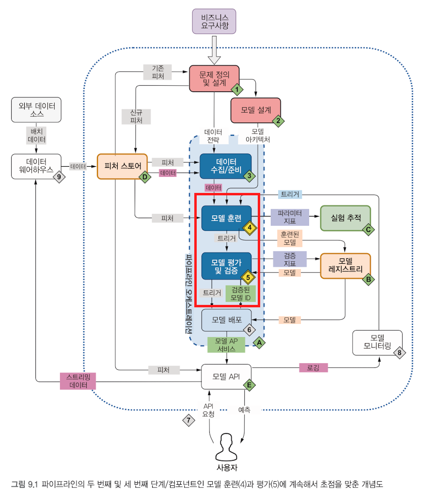
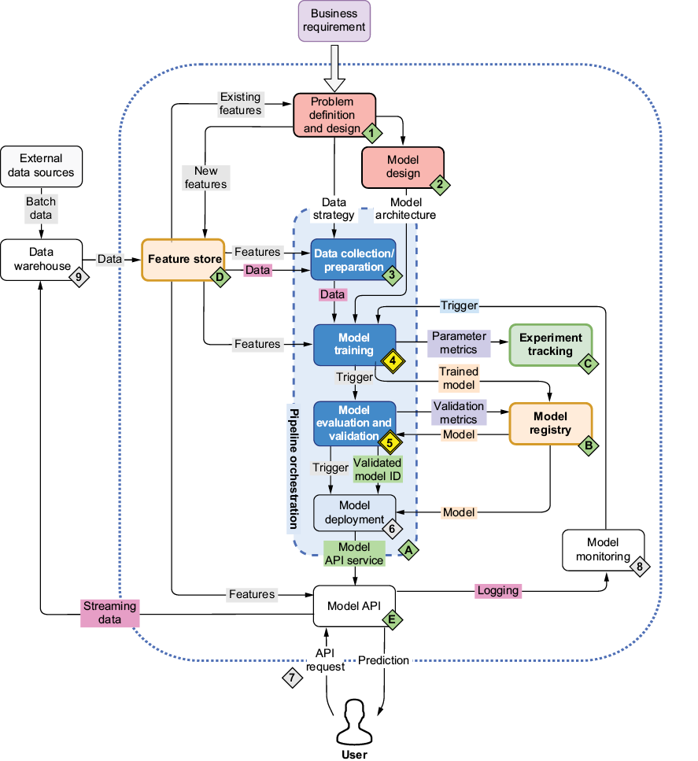
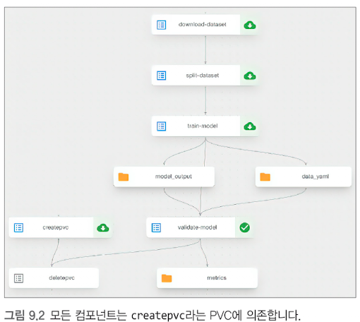
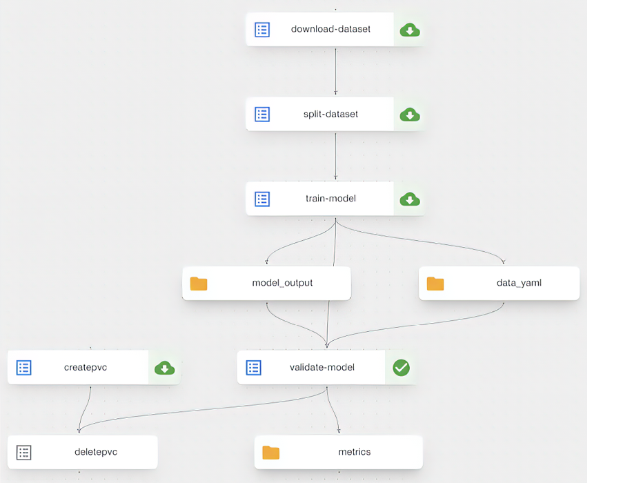
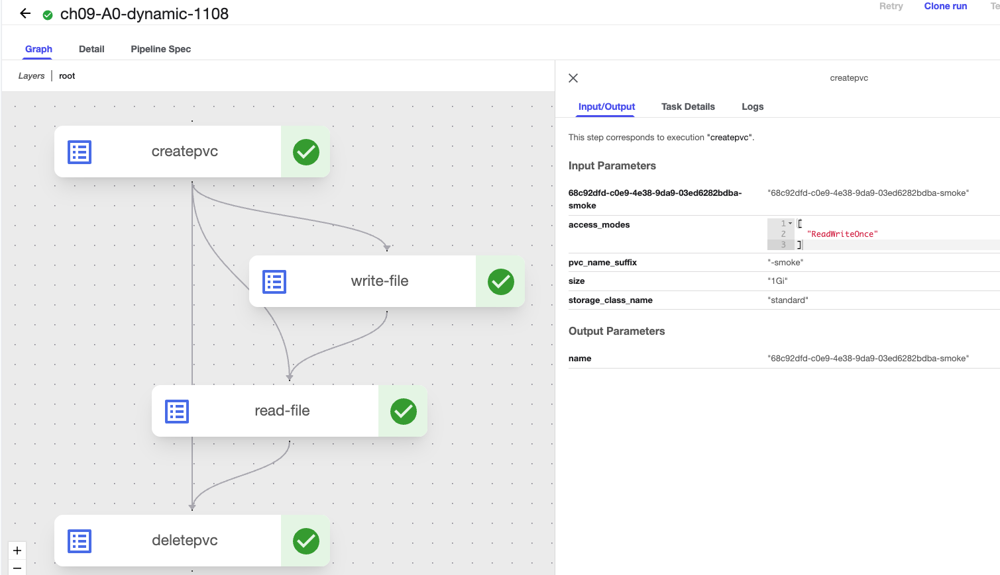
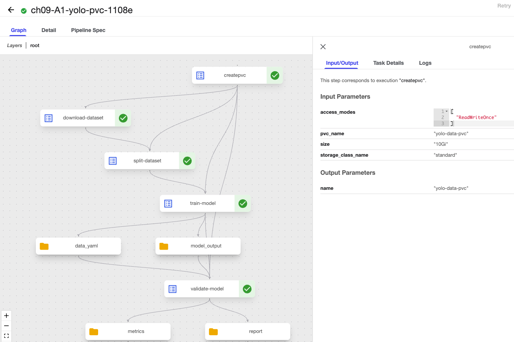
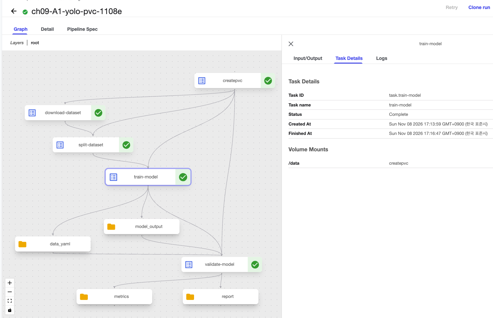
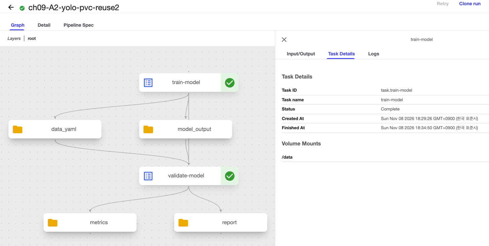
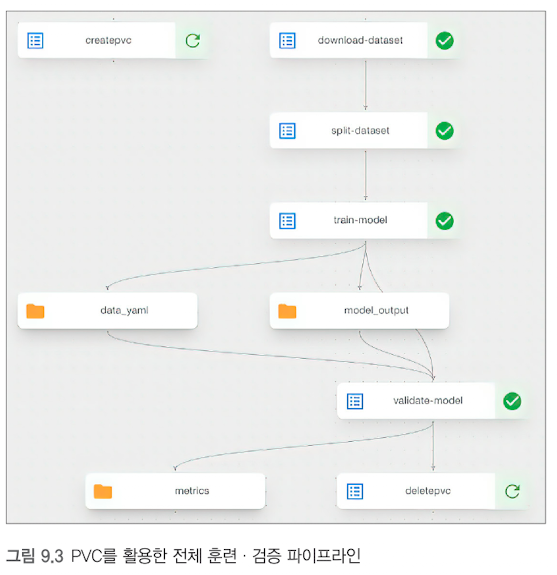
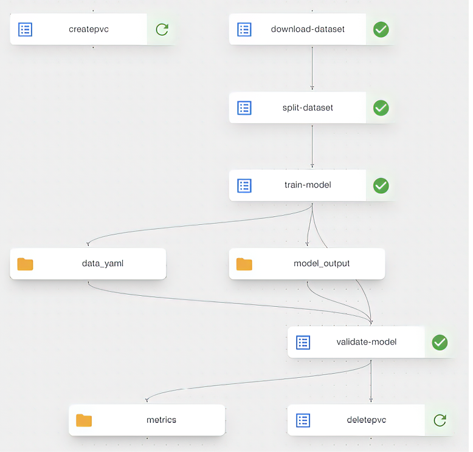

목차
- 들어가며: 9장에서 다루는 내용과 그림 9.1
- 실습 서버 현황 점검
- 영화 데이터 규모 문제
- 실습 계획 한눈에
- 9.1 PVC로 데이터 저장하기 - 배경
- 9.1.1 PVC로 파이프라인 리팩터링
- 9.1.2 효율적인 데이터셋 관리
- 9.1.3 VolumeOp 생성하기
- 9.1.4 PVC를 활용한 download_op
- [실습] 9.1 PVC 로 데이터 관리 — 범위와 서문
- [실습] 사전 준비 — Docker · kind · KFP 접속과 제출
- [실습] 가변값 표 — 내 환경에 맞게 바꿀 값
- [실습] A0-1. kfp-kubernetes 설치와 freeze 결과
- [실습] A0-2. 스토리지 클래스 확인과 pvc_smoke.py
- [실습] A0-3. 컴파일 결과 pvc_smoke_dynamic.yaml 읽기
- [실습] A0-4. 동적 PVC 와 정적 PVC 변형 결과
- [실습] A0-5. 발견 — DeletePVC 와 Terminating
- [실습] A0-6. PV 위치, 정리, run_pipeline.py 수정
- [실습] A1 개요: 책 9.1 파이프라인을 MINIDATA로 실행하기
- [실습] A1-1 준비: 가변값과 데이터 링크 확인
- [실습] A1-2 PVC 생성과 태스크 순서
- [실습] A1-3 압축 해제와 75/15/10 분할 계산
- [실습] A1-4 학습·검증 이미지: Mac M2와 Linux의 차이
- [실습] A1-5 실행 결과와 실행 화면 읽기
- [실습] A1-6 막혔던 세 가지와 해결
- [실습] A1 완성 파일 yolo_pvc_pipeline.py — 한 파일로 조립한 참고 구현
- [실습] 제출 스크립트 submit.py — 셸과 Python 분리
- [실습] A2-1 PVC 재사용 파이프라인과 재시도
- [실습] A2-2 실행 결과 비교와 정리
- [실습] A2 완성 파일 pipeline_a2.py — 기존 PVC 재사용
- 9.1.5 데이터셋 직접 분할
- 9.1.6 모델 훈련 간소화
- 9.1.7 모델 검증 간소화
- 9.1.7 보충 — 객체 탐지 평가 입문 (박스·IoU·AP·mAP)
- 9.2 · 9.3 — 이어지는 내용
9장 앞부분 한눈에 보기
- 무엇을 배우나: 파이프라인 태스크들이 PVC(공유 저장 공간) 로 데이터를 함께 쓰는 법(9.1), TensorBoard 로 학습을 그래프로 보는 법(9.2), MLflow 로 실험을 기록하고 리니지(Lineage) 를 남기는 이유(9.3).
- 그림 9.1 읽는 법: 번호 1~9 는 순서대로 도는 KFP 태스크가 아니라 전체 MLOps 지도의 구성요소 번호입니다. 이 장의 초점은 4 모델 훈련과 5 모델 평가·검증입니다.
- 원격 kind 클러스터 book-env 현황:
kfpSDK 2.9.0 / 백엔드 2.4.1(kfp.kubernetes미설치), StorageClass 이름은standard(WaitForFirstConsumer, reclaimDelete), TensorBoard 컨트롤러·Kubeflow 대시보드 없음, MLflow 3.0.0(PostgreSQL + MinIO), CPU 16코어·GPU 없음. - 영화 데이터는 전량 학습 불가: 사용자 약 16만 × 아이템 약 5.6만, train 약 1,875만 행 → epoch 당 약 58만 iteration × 30 epochs. 그래서 새 경로
datasets/ml-25m-small/에 소형 데이터를 만들어 쓰고 원본은 건드리지 않습니다. - 실습 순서: A0(시험) → A1(책 방식, MINIDATA 1 epoch) → A2(PVC 유지 변형) → B(TensorBoard, A 의 PVC 필요) / C(영화 추천 + MLflow, 독립).
- 미리 알아 둘 정정: ① MINIDATA 링크는 HEAD 는 404 지만 GET 은 성공 ②
kfp==2.9.0과kfp-kubernetes==1.5.0둘 다 고정, zsh 는 따옴표 ③ MLflow 3.0.0 은--serve-artifacts기본값이 True ④ local-path 는 PVC 용량을 강제하지 않음 ⑤ 그림 9.1 의 번호는 지도 번호. - 범위 안내: 9.2(TensorBoard)·9.3(영화 추천과 MLflow)은 원문 학습 노트에 계획과 점검 메모만 있어, 이 문서에서도 그 범위까지만 다룹니다. Mac M2·Linux 양쪽 종단간 실행 결과는 확인 못함.
들어가며: 9장에서 다루는 내용과 그림 9.1
9장에서 다루는 내용
이 장은 앞 장(8장)에서 만든 "모델을 학습하고 검증하는 파이프라인"을 데이터 저장과 실험 기록 쪽으로 한 단계 더 튼튼하게 만듭니다. 장 전체가 다루는 세 가지는 다음과 같습니다.
- 쿠버네티스 퍼시스턴스 볼륨(PV)을 활용한 데이터셋 저장 및 조회 — 파이프라인 태스크들이 같은 저장 공간을 파일 시스템처럼 함께 쓰는 방법
- MLflow 와 텐서보드(TensorBoard)를 활용한 훈련 추적 및 시각화 — 학습 중 나온 수치와 결과 파일을 남기고 그래프로 보는 방법
- 리니지(Lineage)와 실험 추적의 중요성 이해 — "이 모델은 어떤 데이터·코드·설정에서 나왔나"를 거슬러 올라갈 수 있게 하는 이유
왜 인프라가 필요한가
프로덕션 머신러닝 시스템에서 효과적인 모델 훈련은 단순히 알고리즘과 데이터셋에 국한되지 않습니다. 데이터 관리, 실험 추적, 모델 버전 관리를 위한 견고한 인프라가 반드시 필요합니다(그림 9.1).


Figure 9.1 The mental map where we continue focusing on the second and third step/component of our pipeline—model training (4) and evaluation (5)
(한국어판 캡션: 그림 9.1 파이프라인의 두 번째 및 세 번째 단계/컴포넌트인 모델 훈련(4)과 평가(5)에 계속해서 초점을 맞춘 개념도)
이미지 해설: 그림 9.1 (이미지 89 한국어판, 이미지 90 영문판)
그림이 보여주는 것. 두 이미지는 같은 그림의 한국어판(89)과 영문판(90)입니다. 위쪽의 "비즈니스 요구사항"에서 출발해, 점선 영역 안에 MLOps 전체 지도가 그려져 있습니다. 그림 속 기호는 두 종류입니다.
| 기호 | 한국어판 라벨(영문판) | 뜻 |
|---|---|---|
| 1 | 문제 정의 및 설계 (Problem definition and design) | 무엇을 맞힐지 정한다 |
| 2 | 모델 설계 (Model design) | 어떤 구조의 모델을 쓸지 정한다 |
| 3 | 데이터 수집/준비 (Data collection/preparation) | 학습용 데이터를 모은다 |
| 4 | 모델 훈련 (Model training) | 이 장의 초점 |
| 5 | 모델 평가 및 검증 (Model evaluation and validation) | 이 장의 초점 |
| 6 | 모델 배포 (Model deployment) | 서비스에 올린다 |
| 7 | 사용자의 API 요청 (API request) | 사용자가 모델을 호출 |
| 8 | 모델 모니터링 (Model monitoring) | 운영 중 상태를 지켜본다 |
| 9 | 데이터 웨어하우스 (Data warehouse) | 원천 데이터를 쌓아 두는 곳 |
| A | 모델 API 서비스 (Model API service) | 배포된 모델이 서비스로 나가는 출구. 아래의 E(모델 API)와 이어짐 |
| B | 모델 레지스트리 (Model registry) | 검증된 모델을 이름·버전으로 보관 |
| C | 실험 추적 (Experiment tracking) | 파라미터·지표를 기록 |
| D | 피처 스토어 (Feature store) | 공용 입력 특성 저장소 |
| E | 모델 API (Model API) | 모델을 서비스하는 창구 |
초보자 풀이. 이 장이 파고드는 부분은 4번(훈련)과 5번(평가·검증), 그리고 이 둘에 붙어 있는 C 실험 추적과 B 모델 레지스트리입니다. 화살표 위 라벨을 따라가 보세요.
- 모델 훈련(4) → 실험 추적(C): 파라미터·지표를 기록으로 보냅니다.
- 모델 훈련(4) → 모델 레지스트리(B): 훈련된 모델을 보관합니다.
- 모델 훈련(4) → 모델 평가 및 검증(5): 트리거(다음 단계를 시작시키는 신호)를 보냅니다.
- 모델 평가 및 검증(5) → 모델 레지스트리(B): 검증 지표를 남기고, 레지스트리에서는 평가할 모델을 가져옵니다.
- 모델 평가 및 검증(5) → 모델 배포(6): 트리거와 검증된 모델 ID를 넘깁니다.
- 모델 모니터링(8) → 모델 훈련(4): 위쪽으로 돌아가는 트리거가 있어, 운영 중 문제가 보이면 재학습을 시작시킬 수 있습니다.
여기서 확인할 것. 한국어판(89)에는 4·5를 함께 묶는 빨간 네모가 있고, 4·5 표시는 노란 마름모입니다. 영문판(90)에는 빨간 네모가 없고 4·5 표시만 노란 마름모로 강조됩니다. 두 그림의 구조는 같으니 영어 용어(Model registry, Feature store, Model API service)를 한글 라벨과 짝지어 보세요.
⚠ 원문 정정: 캡션이 "파이프라인의 두 번째 및 세 번째 단계"라고 부르기 때문에 그림의 번호 1~9 를 "순서대로 실행되는 KFP 태스크 번호"로 읽기 쉽습니다. 실제로 이 번호는 파이프라인 안의 태스크 순번이 아니라 전체 MLOps 지도의 구성요소 번호입니다. 예를 들어 9 는 데이터 웨어하우스, 7 은 API 요청을 보내는 사용자, 8 은 모델 모니터링입니다. 이 장의 학습·평가에 해당하는 번호는 4와 5뿐이며, 뒤에서 나오는 KFP 화면(그림 9.2, 9.3)의 download → split → train → validate 와는 별개의 번호 체계입니다.
flowchart LR BR["비즈니스 요구사항"] --> P1["1 문제 정의 및 설계"] P1 --> M2["2 모델 설계"] P1 --> D3["3 데이터 수집과 준비"] D3 --> T4["4 모델 훈련"] M2 --> T4 T4 -->|"트리거"| E5["5 모델 평가 및 검증"] T4 -->|"파라미터 지표"| C["C 실험 추적"] T4 -->|"훈련된 모델"| B["B 모델 레지스트리"] E5 -->|"검증 지표"| B B -->|"모델"| E5 E5 -->|"트리거 검증된 모델 ID"| D6["6 모델 배포"] D6 --> API["E 모델 API"] API --> U["7 사용자"] API -->|"로깅"| MON["8 모델 모니터링"] MON -->|"트리거"| T4
위 그림은 그림 9.1 의 흐름 중 이 장과 관련된 부분만 단순화한 것입니다(피처 스토어 D, 데이터 웨어하우스 9 등은 생략).
이 장이 먼저 소개하는 방법
먼저 파이프라인 내에서 데이터에 접근하는 또 다른 방법인 큐브플로 파이프라인 쿠버네티스 SDK(kfp-kubernetes)에 대해 알아보겠습니다. 지금까지 태스크 사이에 데이터를 넘길 때는 "파일을 아티팩트로 내보내고 다음 태스크가 받는" 방식이었다면, 여기서는 하나의 저장 공간(PVC)을 모든 태스크가 함께 마운트하는 방식을 배웁니다.
flowchart LR
subgraph A["이전 방식 아티팩트 전달"]
direction LR
A1["태스크 1"] -->|"파일 복사"| A2["태스크 2"] -->|"파일 복사"| A3["태스크 3"]
end
subgraph B["이 장의 방식 PVC 공유"]
direction LR
B1["태스크 1"] --- V[("공유 PVC")]
B2["태스크 2"] --- V
B3["태스크 3"] --- V
end실습 서버 현황 점검
실습을 시작하기 전에 원문 학습 노트에 정리된 원격 kind 클러스터 book-env 의 현재 상태입니다. "이 클러스터에는 무엇이 있고 무엇이 없는가"를 먼저 확인하면, 책 예제를 그대로 따라 했을 때 어디서 막히는지 미리 알 수 있습니다. 표의 마지막 열은 그 차이를 어떻게 메우는지입니다.
이어받는 자료
- 8장의
scratch/ch08/컴포넌트,train.py,run_pipeline.py,stage_split.py - 7장의 MinIO
datasets/ml-25m/(영화 데이터) - 리모트 MLflow 3.0.0
- 레포
chapters/projects/movie-recommender-project/(책 코드의 실제 구현)
서버 현황 표 (9개 항목)
| 항목 | 값 | 의미 |
|---|---|---|
kfp SDK / 백엔드 |
2.9.0 / 2.4.1, kfp.kubernetes 미설치 |
실습 A 시작 전 kfp==2.9.0 고정으로 설치하고 import 가 되는지 확인(kfp 가 새 버전으로 올라가 기존 컴파일 결과가 바뀌는 것을 막기 위함). 레포 requirements.txt 는 kfp==2.11.0 |
| StorageClass | standard (rancher.io/local-path, WaitForFirstConsumer, reclaim Delete) |
책 listing 9.1 의 storage_class_name='local-path' 는 이 클러스터에 없는 이름 → standard 로 바꾼다 |
| RBAC | pipeline-runner 가 PVC create/get/delete 가능 |
권한 문제 없음 |
| PVC 용량 | local-path 는 강제하지 않음 (7장 노트: MinIO PVC 20Gi 로 확인) | 필요 크기를 적되 판단은 호스트 df (233G 여유, kind 노드 PV 도 같은 디스크) |
| TensorBoard | tensorboard CRD·컨트롤러·Kubeflow 대시보드 없음 (KFP 단독 설치, istio/profile 네임스페이스 없음) |
책 9.2.1 의 "Kubeflow 사이드바 → TensorBoards → New TensorBoard" 는 그대로 불가. 대안: PVC 를 마운트한 tensorboard Deployment + port-forward |
| MLflow | 서버 book-env/mlflow:3.0.0, 백엔드 PostgreSQL, --default-artifact-root s3://mlflow-artifacts (--serve-artifacts 없음), 서비스 mlflow/mlflow-service:5000 |
클라이언트(학습 파드)가 MinIO 에 직접 업로드해야 한다고 본 메모 → 파드에 S3 엔드포인트·키 환경변수 필요(레포 컴포넌트는 mlflow_uri 만 설정). 책 9.3.4 "Uploads to MLflow"의 직접 접속 방식에 해당. 책 기본 mlflow_uri=http://192.168.1.90:8080 은 http://mlflow-service.mlflow:5000 로 교체 |
| 영화 데이터 | MinIO datasets/ml-25m/: train 18,750,071 / val 3,750,014 / test 2,500,010행, 컬럼 userId, movieId, rating, timestamp(+__index_level_0__, pyarrow B 결과) |
레포 컴포넌트는 userId/movieId 를 쓴다(책 listing 9.10 의 user_id/item_id 와 다름 → 그대로면 QA 가 실패). 전량 학습은 불가능(다음 소절) |
| 리소스 | CPU 16코어 / 메모리 14GiB(가용 약 8GiB), GPU 없음, 리모트 venv 에 torch 없음 |
학습은 CPU 로 하고, 파드에서 설치(pip_index_urls 로 CPU 휠) |
| 9장 데이터 URL | 약 1.23GB(MINIDATA/), 7·8장은 10.28GB(DATA/) |
9.1 실습은 다른(작은) 데이터. 이미지 수는 아직 확인 못함. 8장 mAP 와 비교 불가 |
항목별 풀이
1) kfp SDK 와 백엔드, 그리고 kfp-kubernetes
KFP 는 SDK(내 PC 의 파이썬 라이브러리, 2.9.0)와 백엔드(클러스터에서 도는 실행 서버, 2.4.1)로 나뉘어 있습니다. PVC 를 만들고 붙이는 기능은 SDK 에 별도 확장 kfp-kubernetes(import 이름 kfp.kubernetes)로 들어 있는데, 이 서버에는 아직 설치되어 있지 않습니다.
pip install kfp-kubernetes 만 하면 kfp 자체가 새 버전으로 올라가 8장에서 컴파일하던 결과가 달라질 수 있어서, kfp==2.9.0 을 같이 고정해 설치합니다. kfp-kubernetes 1.5.0 은 kfp>=2.6.0,<3 과 protobuf>=4.21.1,<5 를 요구하므로 kfp 2.9.0 과 선언상 호환됩니다.
⚠ 원문 정정: 버전 고정은kfp==2.9.0뿐 아니라kfp-kubernetes==1.5.0까지 둘 다 해야 재현이 됩니다(PyPI 의 최신kfp-kubernetes는 2.18.0 이라 그냥 설치하면 다른 버전이 들어올 수 있음). 또 zsh(Mac 기본 셸)에서pip install kfp[kubernetes]는no matches found오류가 나므로pip install 'kfp[kubernetes]'처럼 따옴표로 감쌉니다. 설치 명령은 9.1 실습의 A0 단계에서 다룹니다.
kfp 는 공장의 기본 설계 도구, kfp-kubernetes 는 "창고(PVC) 연결"이라는 추가 부품입니다. 부품을 사려다 설계 도구까지 최신판으로 바뀌어 기존 도면이 달라지는 사고를 막으려고, 설계 도구 버전을 못 박고 부품을 끼웁니다.2) StorageClass 이름은 standard
PVC 를 요청할 때는 "어떤 종류의 저장소로 받을지"를 storage_class_name 으로 적어야 합니다. 책 예제는 local-path 라는 이름을 쓰지만 이 클러스터의 StorageClass 이름은 standard 입니다(방식은 같은 rancher.io/local-path). 이름이 다르면 PVC 가 영원히 Pending 에 머뭅니다.
이 StorageClass 의 성질도 기억해 두세요.
WaitForFirstConsumer: PVC 를 만들어도 바로 연결되지 않고, 그 볼륨을 쓰는 첫 파드가 놓일 노드가 정해질 때 PV 가 만들어집니다. 그래서 PVC 만 만든 직후에는Pending으로 보이는 것이 정상입니다.- reclaim
Delete: PVC 를 지우면 PV 와 안의 데이터도 함께 삭제됩니다. 보존하고 싶은 PVC 는 지우면 안 됩니다.
3) RBAC: 권한은 충분
pipeline-runner(파이프라인 태스크가 쿠버네티스에 요청할 때 쓰는 ServiceAccount)가 PVC 를 만들고(create) 조회하고(get) 지울(delete) 수 있어서, CreatePVC/DeletePVC 태스크를 쓸 때 권한 때문에 막히지 않습니다.
4) PVC 용량은 강제되지 않는다
이 클러스터의 local-path 는 요청한 크기(예: 10Gi)를 강제하지 않습니다. 7장 노트에서 MinIO PVC 가 20Gi 로 잡혀 있었던 것도 같은 맥락입니다. 그래서 크기 숫자는 이식성과 문서화를 위해 실제 필요량에 맞춰 적고, "정말 자리가 있는지"는 호스트에서 df 로 판단합니다(여유 233G, kind 노드 안 PV 도 같은 디스크를 씁니다).
⚠ 원문 정정: 크기를 강제하지 않으므로 "10Gi 를 요청하면 즉시 10GiB 를 차지한다"도, "1Gi 라서 용량 초과 에러가 났다"도 사실이 아닙니다. 압축 파일은 코드상 컨테이너의 상대 경로(임시 공간, ephemeral)에 저장되므로 ephemeral 공간·PVC·노드 디스크를 따로 계산해야 합니다.
🔧 본인 환경에 맞게 교체:<STORAGE_CLASS>= book-env 의 값standard. 의미: PVC 가 요청할 저장소 종류 이름. 확인 명령:kubectl get storageclass(VOLUMEBINDINGMODE·RECLAIMPOLICY 열도 함께 확인)
# [PC 터미널] 이 클러스터의 StorageClass 이름과 성질을 확인
kubectl get storageclass
# 기대: standard (default) rancher.io/local-path Delete WaitForFirstConsumer
5) TensorBoard: Kubeflow 대시보드가 없다
책 9.2.1 은 "Kubeflow 사이드바 → TensorBoards → New TensorBoard"로 텐서보드를 만듭니다. 그런데 이 서버는 KFP 만 단독 설치되어 있어서 Kubeflow 대시보드, tensorboard CRD(새 자원 종류 정의)와 컨트롤러(그 자원을 처리하는 프로그램), istio/profile 네임스페이스가 모두 없습니다. 그래서 책 방식은 그대로 실행할 수 없습니다.
대안은 같은 PVC 를 마운트한 tensorboard Deployment(항상 떠 있는 파드)를 직접 띄우고 port-forward 로 내 PC 브라우저에서 보는 것입니다. 9.2 의 상세 본문은 원문 노트에 없으며, 위 대안은 노트에 적힌 계획입니다.
6) MLflow: 저장 위치 설정과 직접 업로드
MLflow 서버는 book-env/mlflow:3.0.0 이미지로 떠 있고, 메타데이터 DB 는 PostgreSQL, 산출물 기본 저장 위치는 --default-artifact-root s3://mlflow-artifacts(MinIO 의 버킷)입니다. 클러스터 안에서는 서비스 mlflow-service(mlflow 네임스페이스, 5000 포트)로 접근합니다. 책의 기본 주소 http://192.168.1.90:8080 은 저자 사설망의 예시값이므로 http://mlflow-service.mlflow:5000 으로 바꿉니다.
원문 노트는 MLflow 3.0.0 서버(book-env/mlflow:3.0.0, PostgreSQL 백엔드)의 실행 인자에 --serve-artifacts 가 보이지 않으므로 학습 파드가 MinIO 호환 저장소(SeaweedFS 3.85, 서비스 이름은 minio-service)에 직접 올려야 한다고 정리했습니다. 그래서 파드에 S3 엔드포인트와 접근 키를 환경변수로 넣어야 한다는 메모입니다.
⚠ 원문 정정: MLflow 3.0.0 은--serve-artifacts의 기본값이 True 입니다. "플래그가 없으니 프록시가 꺼져 있다"는 추론은 틀립니다. 파드가 S3 로 직접 올리는지, 서버가 중계하는지는 실험의artifact_location또는 Run 의artifact_uri가s3://…인지mlflow-artifacts:/…인지로 확인하세요. 9.3 의 상세 본문은 원문 노트에 없어, 이 확인은 실습 때의 점검 항목으로만 남겨 둡니다.
🔧 본인 환경에 맞게 교체:<MLFLOW_URI>= book-env 의 값http://mlflow-service.mlflow:5000(책 기본http://192.168.1.90:8080은 사용하지 않음). 의미: 학습 파드가 MLflow 에 접속하는 클러스터 내부 주소. 확인 명령은 아래. 접근 키는<S3_ACCESS_KEY>,<S3_SECRET_KEY>처럼 Secret 으로 넣고 문서·명령에 값을 쓰지 않습니다.
# [PC 터미널] 본인 환경 값으로 먼저 export
export MLFLOW_NS=mlflow # <MLFLOW_NAMESPACE> 예시값
export MLFLOW_SVC=mlflow-service # <MLFLOW_SERVICE> 예시값
kubectl get svc "$MLFLOW_SVC" -n "$MLFLOW_NS"
# 기대: PORT(S) 에 5000/TCP
7) 영화 데이터와 컬럼 이름
MinIO 의 datasets/ml-25m/ 에 train 18,750,071행 / val 3,750,014행 / test 2,500,010행이 있고, 컬럼은 userId, movieId, rating, timestamp 입니다. 마지막에 __index_level_0__ 이 붙은 것은 앞선 단계(pyarrow B 결과)가 인덱스를 함께 저장했기 때문입니다.
레포 컴포넌트는 userId/movieId 이름을 쓰지만 책 listing 9.10 은 user_id/item_id 를 씁니다. 이름이 다르면 품질 점검(QA)이 실패하므로, 어느 이름을 쓸지 맞춰야 합니다. 그리고 이 데이터로 전량 학습은 불가능한데, 이유는 다음 소절에서 계산합니다.
8) 컴퓨팅 리소스
CPU 16코어, 메모리 14GiB(가용 약 8GiB)이며 GPU 는 없습니다. 리모트 가상환경에 torch 도 없습니다. 그래서 학습은 CPU 로 하고, 학습 파드에서 CPU 용 torch 휠을 설치합니다(pip_index_urls 로 CPU 휠 저장소 지정).
9) 9장 데이터는 7·8장보다 훨씬 작다
9장 데이터는 MINIDATA/ 라는 약 1.23GB 압축 파일이고, 7·8장 데이터(DATA/)는 10.28GB 입니다. 9.1 실습은 이 작은 데이터를 쓰고, 이미지 수는 아직 확인하지 못했습니다. 데이터가 달라서 8장의 mAP 와 숫자를 비교하면 안 됩니다.
⚠ 원문 정정: 책 데이터(MINIDATA) 다운로드 링크는curl -I(HEAD 요청)로는 404 가 나오지만 GET 요청은 성공합니다(리다이렉트 후 200/206, 전체 1,231,741,871바이트, gzip 시작 바이트1f8b). "링크가 만료됐다"는 판단은 오판이므로curl -I대신curl -L -o로 받으세요. 1,231,741,871바이트는 10진으로 약 1.232GB, 2진으로 약 1.147GiB 입니다.
# [PC 터미널] 파일 크기만 확인(Range GET). 본문 전체는 내려받지 않음
export MINIDATA_URL=<MINIDATA_URL> # 책 코드에서 조립되는 Manning Box 정적 링크
curl -sL -r 0-1023 -o /dev/null -w "%{http_code} %{size_download}\n" "$MINIDATA_URL"
# 기대: 206 1024
🔧 본인 환경에 맞게 교체:<MINIDATA_URL>= 책 코드가https://manning.box.com/shared/static뒤에 파일 이름을 붙여 조립하는 주소(….gz). 의미: 9.1 실습용 데이터 아카이브. 확인: 위 명령이 206(또는 200)을 반환하는지.
영화 데이터 규모 문제
원격 kind 클러스터 book-env 의 MinIO 호환 저장소(SeaweedFS 3.85, 서비스 이름은 minio-service)에 들어 있는 영화 데이터(datasets/ml-25m/)를 책 코드 그대로 전량 학습시키면 왜 안 되는지, 숫자로 따져 봅니다. 원문 노트에 적힌 계산과 결론은 다음과 같습니다.
1) negative_sampling 이 느린 이유
negative_sampling 은 사용자마다 item_pool - interacted_items(전체 아이템에서 그 사용자가 이미 본 아이템을 뺀 집합)를 만들고, 이를 list(...) 로 바꾼 뒤 np.random.choice 로 부정 예시를 뽑습니다.
- 사용자 약 16만 명 × 아이템 약 5.6만 개
- 그러면 사용자당 5만 건 규모의 작업이 16만 번 반복됩니다 → 매우 오래 걸릴 것으로 봅니다.
보충 설명: 단순 곱셈으로 어림하면 16만 × 5만 = 약 80억 번의 원소 처리입니다. 정확한 소요 시간은 측정하지 못했습니다.
2) 학습 반복 횟수가 CPU 로는 비현실적
- batch(한 번에 묶어 처리하는 샘플 수) = 32
- train 약 1,875만 행(정확히는 18,750,071행)
- → epoch(데이터 한 바퀴)당 약 58만 iteration, 이것을 30 epochs 반복
보충 설명: 계산해 보면 18,750,071 ÷ 32 ≈ 585,940 iteration/epoch, × 30 ≈ 약 1,758만 iteration 입니다. 이 서버는 GPU 가 없는 CPU 16코어이므로, 전량 학습은 현실적이지 않다는 결론이 나옵니다.
| 항목 | 값 | 비고 |
|---|---|---|
| 사용자 수 | 약 16만 명 | 노트 기재 |
| 아이템 수 | 약 5.6만 개 | 노트 기재 |
| batch | 32 | |
| train 행 수 | 약 1,875만 (18,750,071) | val 3,750,014 / test 2,500,010 |
| epoch 당 iteration | 약 58만 | 노트 기재 |
| epoch 수 | 30 | |
| 책 표 9.1·9.2 의 실험 규모 | 6,400 random data samples | 책도 전량이 아니라 작은 표본으로 실험했다 |
보충 설명: 책 표 9.1·9.2 의 6,400 샘플을 batch 32 로 나누면 epoch 당 200 iteration 입니다. 전량(약 58만)의 0.03% 수준이라 실습 규모가 얼마나 다른지 감이 옵니다.
3) 해결: 소형 데이터셋을 새 경로에 만든다
→ 사용자 일부(예: 수천 명)로 줄인 소형 데이터셋을 먼저 만듭니다.
- 기존 train/val/test split 을 유지한 채 사용자 부분집합으로 필터합니다.
- 결과는 새 경로
datasets/ml-25m-small/에 저장합니다. - 원본(
datasets/ml-25m/)은 건드리지 않습니다.
flowchart LR O["원본 datasets ml-25m"] -->|"읽기만 함"| F["사용자 부분집합으로 필터"] F -->|"기존 split 유지"| S["새 경로 datasets ml-25m-small"] O -.->|"변경 없음"| O S --> T["소형 데이터로 학습과 MLflow 기록"]
직접 만져 보기: 사용자 수를 줄이면 얼마나 줄어드나
⚠ 주의: 위 슬라이더 결과는 학습 규모를 가늠하는 가상 예시입니다. 사용자마다 평점 수가 크게 달라 실제 행 수는 다를 수 있으며, 소형 데이터셋의 실제 행 수는 만든 뒤에 직접 세어 확인해야 합니다. 소형 데이터셋을 실제로 만들어 보지는 못했습니다(확인 못함).
🔧 본인 환경에 맞게 교체:<SMALL_DATASET_PATH>= book-env 의 값datasets/ml-25m-small/. 의미: 소형 데이터셋을 저장할 MinIO 버킷 안 새 경로(원본datasets/ml-25m/와 달라야 함). 확인: MinIO 콘솔 또는mc ls로 두 경로가 따로 존재하는지 확인.
실습 계획 한눈에
9.1 절 실습(책 데이터 MINIDATA 약 1.2GB)의 전체 구성과 A0/A1/A2 계획입니다. 이 장의 실습은 세 덩어리로 나뉩니다.
| 구분 | 주제 | 선행 조건 |
|---|---|---|
| A | 9.1 PVC 로 데이터 관리 (A0 준비 → A1 책 방식 → A2 PVC 유지 변형) | 없음 (먼저 수행) |
| B | 9.2 TensorBoard | A 의 PVC 필요 |
| C | 9.3 영화 추천 학습 + MLflow | A·B 와 독립, 순서 변경 가능 |
ℹ 범위 안내: 9.2(TensorBoard)와 9.3(영화 추천 + MLflow)의 상세 본문은 원문 노트에 없고 계획과 서버 점검 메모만 있습니다. 이 문서에서 9.2·9.3은 계획과 서버 점검 내용까지만 다룹니다.
flowchart LR A0["A0 준비 PVC 시험 약 10분"] --> A1["A1 책 방식 파이프라인 MINIDATA 1 epoch"] A1 --> A2["A2 PVC 유지 변형"] A1 -->|"A1 의 PVC 를 지우지 않고 보존"| B["B 9.2 TensorBoard"] C["C 9.3 영화 추천 학습 + MLflow"] A1 -.->|"독립 순서 변경 가능"| C
A0 준비 (약 10분)
kfp-kubernetes를kfp==2.9.0고정으로 설치하고 import 가 되는지 확인합니다.CreatePVC(standard)→ 쓰기 태스크 → 읽기 태스크 →DeletePVC로 이어지는 시험 파이프라인을 돌려 다음을 확인합니다.- PVC 생성,
WaitForFirstConsumer바인딩, 태스크 간 공유, 삭제 - 고정 이름 방식 vs
pvc.outputs['name']방식의 차이 (원문 노트의 점검 항목 #2, #3)
- PVC 생성,
- 통과 기준: run 이
SUCCEEDED, 그리고kubectl get pvc,pv로 생성과 삭제를 눈으로 확인.
보충 설명: 시험용 YAML 의 enableCache: true 는 "같은 입력이면 이전 결과 재사용"이라 쓰기 같은 부작용 태스크가 실제로는 건너뛰어질 수 있으므로, 시험에서는 캐시를 끄거나 정책을 명시하는 것이 안전합니다.
A1 책 방식 파이프라인 (MINIDATA, 1 epoch)
흐름: CreatePVC → download_dataset(PVC 에 풀기) → split_dataset(PVC 안에서 분할) → train_model(PVC 마운트, container component) → validate_model(PVC 마운트)
- 먼저 MINIDATA 의 이미지 수를 확인하고, 8장 A 스모크 결과(약 0.18초/장, CPU 외삽)로 epoch 시간을 예측한 뒤 실행합니다.
- 이 run 의 PVC 는 B 를 위해 지우지 않습니다.
- 통과 기준:
createpvc를 포함한 5개 태스크(처리 태스크 4개)가SUCCEEDED,best.pt와data.yaml생성, mAP 값. - 기록할 것: 태스크별 시간, PVC 사용량, 코드 줄 수 감소(책의 주장이므로 직접 비교해 확인).
보충 설명: A1 에서 PVC 이름을 pvc_name_suffix(자동 이름)로 만들면 이름이 <workflow-uuid>-… 꼴이라 A2 에서 재사용하려면 이름을 따로 알아내야 합니다. 그래서 A1 은 고정 이름 + .after(pvc) 를 쓰거나 kubectl get pvc 로 이름을 확인하는 단계를 둡니다. PVC 크기와 StorageClass 는 파이프라인 파라미터로 선언해 두면 환경이 바뀌어도 코드를 고치지 않습니다.
A2 PVC 유지 변형
미리 만든 PVC(예: od-data-pvc)에 데이터를 한 번만 채워 두고, 이후 run 은 mount_pvc 만 사용합니다. 확인할 것은 다음입니다.
- download/split 단계를 생략할 수 있는가
- PVC 가 노드 어디에 저장되는가 (
kind노드 안 local-path 디렉터리) reclaim=Delete의 의미- 8장 importer 방식(B 방안)과의 비교: 코드 / 시작 시간 / 저장 위치 / 정리 방법
보충 설명: 정리(삭제)는 재사용할 PVC(B 와 A2 용)를 보존하고, 완료·실패한 시험 workflow 가 그 PVC 를 아직 참조하는지 확인한 뒤에 합니다.
🔧 본인 환경에 맞게 교체:<PVC_NAME>= book-env 의 값od-data-pvc. 의미: 데이터를 채워 두고 재사용할 PVC 이름. 확인 명령:kubectl get pvc -n <NAMESPACE>. 네임스페이스는 먼저export NAMESPACE=<본인 값>으로 정해 둡니다(KFP 파이프라인이 도는 네임스페이스).
한눈에 비교
| 단계 | 하는 일 | 통과 기준 | PVC 처리 |
|---|---|---|---|
| A0 | 설치 + 시험 파이프라인 | run SUCCEEDED, kubectl get pvc,pv 로 생성·삭제 확인 |
시험이 끝나면 삭제 |
| A1 | MINIDATA 책 방식 1 epoch | createpvc 포함 5개 태스크(처리 태스크 4개) SUCCEEDED, best.pt·data.yaml, mAP |
지우지 않고 보존 |
| A2 | PVC 를 미리 채워 재사용 | download/split 생략 여부, 저장 위치, reclaim 의미 확인 | 재사용(보존) |
실습 환경은 Mac Apple Silicon(arm64)과 Linux(x86_64) 에서 학습 이미지 아키텍처가 다릅니다(
ultralytics이미지는 amd64 전용). 상세는 각 실습 단계에서 다룹니다.
9.1 PVC로 데이터 저장하기 - 배경
이전 장(7·8장)의 데이터 처리 방식은 기능적으로 동작했지만, 몇 가지 한계점이 있었습니다.
- 컴포넌트 간 데이터셋 중복 다운로드
- 비효율적인 스토리지 활용
- 파이프라인 단계 간 데이터 공유 제한
K8s PVC(PersistentVolumeClaim, 영구 볼륨 요청)는 프로덕션 워크플로를 위한 좀 더 견고한 솔루션을 제공합니다. PVC는 파이프라인 컴포넌트 전반에 걸쳐 지속적이고 공유된 스토리지 공간을 제공함으로써 다음과 같은 작업을 가능하게 합니다.
- 데이터를 한 번만 내려받아 효율적으로 재사용합니다.
- 컴포넌트 간에 데이터를 원활하게 공유합니다.
- 스토리지 리소스를 좀 더 효과적으로 관리합니다.
지금까지는 스트림 읽기와 MinIO 직접 연결을 통해 데이터셋에 접근했습니다. 본격적으로 진행하기 전에, 먼저 라이브러리를 설치해야 합니다.
% pip install kfp[kubernetes]
원문 코드의 굵은 표시(
<b>…</b>)는 화면 강조용이므로 코드 펜스 안에서는 제거했습니다. 굵은 표시가 그대로 들어가면 파이썬 문법 오류가 납니다.
⚠ 원문 정정: ① 설치 줄 맨 앞의%는 Jupyter(IPython) 셀 전용 접두사입니다. 터미널에서는%없이python -m pip install …로 실행합니다. ② Mac의 기본 셸(zsh)에서는 대괄호가 파일 이름 패턴으로 해석되어zsh: no matches found: kfp[kubernetes]오류가 납니다. 따옴표로 감싸야 합니다. ③ 버전을 적지 않으면 SDK 와 서버가 어긋날 수 있으므로, 이 실습 서버(KFP SDK 2.9.0 / 백엔드 2.4.1)에서는kfp==2.9.0과kfp-kubernetes==1.5.0을 둘 다 고정합니다. 참고로 PyPI 의 최신 kfp-kubernetes 는 2.18.0 이므로, 실습 서버와 같은 환경을 재현하려면 버전을 명시하는 편이 안전합니다.
미실행 예시 (고친 설치 명령):
Mac M2 (zsh)
# [PC 터미널] 따옴표로 감싸야 zsh 에서 동작합니다 (미실행 예시)
python -m pip install 'kfp==2.9.0' 'kfp-kubernetes==1.5.0'
Linux x86_64 (bash)
# [PC 터미널] (미실행 예시)
python -m pip install 'kfp==2.9.0' 'kfp-kubernetes==1.5.0'
이 라이브러리를 사용하면 큐브플로 파이프라인에서 K8s 고유의 기능에 접근할 수 있습니다. 여기서는 PVC를 동적으로 생성하고, 마운트하고, 최종적으로 삭제하는 PersistentVolumeClaims 컴포넌트를 만들 것입니다.
🧭 초보자 설명
- 파이프라인의 각 단계(컴포넌트)는 따로 뜨는 독립된 컨테이너(파드) 입니다. 파드가 끝나면 그 안의 파일도 같이 사라지고, 서로 디스크를 공유하지도 않습니다. 그래서 앞 단계가 받은 데이터를 뒤 단계가 쓰려면 외부 저장소(MinIO 등)를 거쳐 다시 내려받아야 했습니다.
- PVC 는 "내 파드가 쓸 디스크 한 칸을 달라"는 신청서입니다. 같은 PVC를 여러 파드가 같은 경로(예:
/data)에 붙이면(마운트) 같은 폴더를 함께 보게 됩니다. kfp-kubernetes는 KFP 파이프라인 코드 안에서 PVC 생성(CreatePVC)·마운트(mount_pvc)·삭제(DeletePVC)를 쓰게 해 주는 확장 패키지입니다. 기본kfp만으로는 쿠버네티스 고유 기능을 쓸 수 없습니다.
/data)로 연결해 쓰는 것입니다.flowchart LR
subgraph OLD["기존 방식 7장 8장"]
A1["Download 컴포넌트"] --> M1["MinIO"]
M1 --> T1["Train 컴포넌트 다시 다운로드"]
M1 --> V1["Validate 컴포넌트 또 다운로드"]
end
subgraph NEW["PVC 방식 9장"]
A2["Download 컴포넌트"] --> P2["PVC 공유 폴더 data"]
P2 --> T2["Train 컴포넌트 마운트"]
P2 --> V2["Validate 컴포넌트 마운트"]
end위 그림에서 왼쪽은 단계마다 외부 저장소에서 내려받는 구조, 오른쪽은 한 번 받아 둔 폴더를 모두가 붙여서 쓰는 구조입니다.
🔢 숫자로 보기
- [가상 예시] 데이터가 1GB이고 세 단계가 매번 받는다면 총 3GB를 전송하지만, 한 번 받아 공유하면 최초 1GB만 전송합니다. 이 숫자는 이해를 돕기 위한 가상 값이며 실측이 아닙니다.
- 실측 (원격 kind 클러스터 book-env): 책 방식으로 PVC를 공유한 첫 실행(A1)은 download 89초 + split 31초를 썼고, PVC에 이미 데이터가 있는 재사용 실행(A2)은 이 두 단계를 건너뛰었습니다. 태스크 합으로는 120초가 줄었지만 전체 흐름(DAG)은 473초 → 406초로 67초 줄었습니다. A1 의 validate 121초에는 이미지를 처음 받는 시간이 섞여 있고 A2 에는 재시도가 있어서 단순 비교는 되지 않습니다.
- 책 데이터(MINIDATA)는 압축 파일이 1,231,741,871바이트(약 1.23GB)입니다. 이 실습의 압축 해제 결과는 파일 2,289개, 이미지·라벨 570쌍입니다.
❓ 흔한 오해
- "PVC를 쓰면 MinIO는 이제 필요 없다" → 아닙니다. 이 절 뒤쪽(9.1.4)에서 책이 직접 "MinIO 컴포넌트가 쓸모없어진 것은 아니다"라고 정리합니다. 선택은 문제 정의, 모델 유형, 인프라 제약에 달려 있습니다.
- "PVC는 영구 보관소다" → 이 실습 서버의 스토리지클래스(
standard)는 reclaim 정책이Delete라서, PVC를 지우면 PV와 노드 안 데이터 디렉터리까지 함께 사라집니다 (실습에서 확인한 관찰).
9.1.1 PVC로 파이프라인 리팩터링
▶ 9.1.1 PVC로 파이프라인 리팩터링 (Refactoring the pipeline with a PVC)
리팩터링은 하는 일(결과)은 그대로 두고 내부 구조만 고쳐 쓰는 작업입니다. 7장과 8장의 파이프라인에서 데이터를 처리해 온 방식은 이상적이지 않습니다. 구체적으로, 지금까지의 처리 방식은 다음과 같습니다.
- 전체 데이터셋은 Download dataset 컴포넌트에서 다운로드됩니다.
- 훈련, 검증, 테스트 데이터셋 분할본은 Train model 컴포넌트에서 다시 다운로드됩니다.
- 검증 데이터셋 분할본은 Validate model 컴포넌트에서 다시 다운로드됩니다.
4~6장에서 이보다 더 나은 방법을 이미 살펴봤습니다만, 프로젝트 파이프라인과의 맥락을 맞추기 위해 해당 개념을 간략히 되짚어 보겠습니다.
🧭 초보자 설명
- 세 번 내려받는 것은 "한 번 받아 두면 되는 같은 파일"을 단계마다 받는 낭비입니다. 단계 사이에 파일을 건넬 공용 장소가 없었기 때문에 생긴 구조입니다.
- 이 절은 "왜 고치는가"를 짚는 도입부입니다. 실제 코드 변경은 9.1.3부터 시작합니다.
- 본문이 "4~6장에서 이미 더 나은 방법을 봤다"고 말하는 것은, 이 장의 방식이 유일한 정답이 아니라 프로젝트(YOLO 객체 탐지) 파이프라인과 맥락을 맞추려고 되짚어 보는 것이라는 뜻입니다.
🎛 단계별 비교 위젯
버튼을 눌러 두 방식에서 각 단계가 데이터를 어떻게 얻는지 비교해 보세요.
🔢 숫자로 보기
- 본문에 있는 사실: 기존 방식은 3곳(Download, Train, Validate)에서 내려받습니다.
- 실측: 이어지는 9.1.5~9.1.6 에서
train_model의 함수 시그니처에서 6개의InoutPath인수가 사라지고 파일을 내려받기 위한 MinIO 코드도 제거됩니다. 자세한 내용은 해당 절에서 다룹니다. - [가상 예시] 데이터 1GB를 세 단계가 각각 받으면 3GB, 한 번 받아 공유하면 1GB입니다 (본문에 없는 가상 숫자).
❓ 흔한 오해
- "코드가 짧아지면 데이터 버전, 동시 실행, 삭제 관리도 사라진다" → 아닙니다. 중복 다운로드와 인수 전달이 줄 뿐이고, 어떤 PVC에 어떤 버전의 데이터가 있는지 관리하는 일은 오히려 파이프라인 밖의 책임이 됩니다 (실습 기록: "데이터 버전이 파이프라인 밖(PVC)에 있다").
- "리팩터링 = 기능을 바꾸는 것" → 결과(학습·검증 수행)는 같고 데이터를 주고받는 방식만 바뀝니다.
9.1.2 효율적인 데이터셋 관리
▶ 9.1.2 효율적인 데이터셋 관리 (Efficient dataset management)
대용량 데이터셋을 다룰 때는 효율적인 관리가 매우 중요합니다. 이상적으로는 데이터셋을 한 번만 내려받은 뒤 PV를 통해 접근하는 것이 좋습니다. 이 방식을 사용하면 반복적인 다운로드 없이 훈련과 테스트에 데이터셋을 즉시 활용할 수 있습니다.
그러나 MinIO는 전통적인 POSIX(Portable Operating System Interface, 이식 가능 운영체제 인터페이스) 파일시스템이 아니기 때문에, 파일을 손쉽게 복사하거나 이동할 수 있는 일반 파일시스템처럼 다루기가 어렵습니다. 이 문제를 극복하기 위해 PVC를 도입하는데, 이를 통해 데이터셋을 좀 더 유연하게 다룰 수 있습니다(그림 9.2). PVC를 활용하면 단일 PVC에 의존하는 컴포넌트를 구성할 수 있습니다. 이를 통해 데이터셋을 더 효율적이고 확장 가능한 방식으로 관리하면서, 훈련 과정 전반에 걸쳐 데이터에 원활하게 접근할 수 있습니다.


Figure 9.2 All the components depend on the PVC called createpvc. (그림 9.2 모든 컴포넌트는 createpvc라는 PVC에 의존합니다.)
이미지 해설
- 그림이 보여주는 것: KFP 화면의 파이프라인 그래프입니다. 가운데 세로 줄에
download-dataset→split-dataset→train-model이 이어지고,train-model아래로model_output,data_yaml두 산출물(주황색 폴더 아이콘)이 나옵니다. 이 둘이validate-model로 들어가고,validate-model에서metrics산출물이 나옵니다. 왼쪽 아래의createpvc와deletepvc는 공유 저장 공간을 만들고 지우는 양 끝 단계입니다. 두 이미지는 같은 그림이며 두 번째가 더 크게 확대된 것입니다. - 초보자 풀이: 캡션은 "모든 컴포넌트가
createpvc에 의존한다"고 말하지만, 화면에 보이는 선은createpvc↔deletepvc연결과validate-model→deletepvc연결입니다.createpvc에서download-dataset으로 가는 선은 그려져 있지 않습니다. 의존은 "그래프 선"이 아니라 각 태스크가 같은 PVC를 마운트하는 방식으로 표현되므로, 선이 없어도 같은 볼륨을 공유할 수 있습니다. 반대로 말하면 그래프 선만 보고 "누가 PVC를 쓰는지"를 판단하면 안 됩니다. - 여기서 확인할 것: ① 네모 한 칸이 컴포넌트(파드) 하나라는 것, ② 단계 사이를 잇는 데이터는 폴더 아이콘(아티팩트)으로 보인다는 것, ③ 이름이
createpvc로 보이는 칸이 PVC 를 만드는 단계라는 것. 순서(앞 단계가 끝나야 뒤 단계 시작)는 마운트와는 별개로.after()같은 선언이 있어야 보장됩니다 (9.1.5 에서 다룹니다). 구름 모양 아이콘과validate-model의 체크 표시는 단계 상태를 나타내는 것으로 보이나, 구름 아이콘의 정확한 의미는 확인 못함.
다음 몇 개의 절에서는 PVC를 활용하도록 이 파이프라인을 리팩터링하는 과정을 단계별로 안내합니다.
그 과정에서 코드가 어떻게 단순해지는지 차차 알게 될 것입니다. 먼저 파이프라인을 위한 PVC를 생성하는 볼륨 오퍼레이터(volume operator, KFP에서는 VolumeOp 라고 함)를 만드는 것부터 시작하겠습니다.
🧭 초보자 설명
- 오브젝트 스토리지(MinIO) 는 파일을 "버킷/키" 이름표를 붙인 통째 덩어리로 맡기고 찾는 창고입니다. S3 API 로 주고받습니다. 파일 하나를 올리고(PUT) 받는(GET) 데는 좋지만, 폴더를 열어 파일 목록을 훑거나(
glob), 한 파일의 이름을 바꾸고 옮기는 일을 일반 폴더처럼 싸고 간단하게 하기는 어렵습니다. - POSIX 파일시스템 은 리눅스·유닉스 계열이 따르는 "파일·디렉터리·권한을 다루는 표준 규칙"입니다. 학습 코드(
train/images/*.jpg같은 폴더 구조를 기대)는 이 방식을 전제로 쓰인 경우가 많습니다. PVC 로 진짜 디스크 폴더를 붙이면 코드를 크게 바꾸지 않고 그대로 쓸 수 있습니다. - PV / PVC: PV(PersistentVolume)는 실제 저장 공간, PVC 는 그것을 달라는 신청서입니다. 신청서 하나를 여러 컴포넌트가 함께 가리키면 모두가 같은 PV 를 보게 됩니다.
flowchart TB
subgraph OBJ["오브젝트 스토리지 MinIO"]
K["버킷과 키로 객체를 저장"] --> S3["S3 API 로 올리기 내려받기"]
end
subgraph FS["PVC 파일시스템"]
PVC["PVC 하나"] --> D["download 가 /data 에 저장"]
PVC --> SP["split 이 같은 폴더에서 분할"]
PVC --> TR["train 이 같은 폴더를 읽음"]
PVC --> VA["validate 가 같은 폴더를 읽음"]
end🔢 숫자로 보기
- 객체 주소와 파일 경로의 차이 [가상 예시]:
s3://datasets/ml-25m/train.parquet.gzip은 MinIO 에서의 객체 주소(버킷datasets, 키ml-25m/train.parquet.gzip),/data/train/images/a.jpg는 파드 안에서의 파일 경로입니다. 파일 이름a.jpg는 가상 예시이고,ml-25m영화 데이터가 MinIO 의datasets/ml-25m/에 있는 것은 실습 서버 현황의 사실입니다. - 이 장 전체에서 효과가 숫자로 나타나는 곳은 9.1.5~9.1.6 입니다. 예를 들어
train_model의InoutPath인수 6개가 사라지는 것이 본문이 직접 말하는 수치입니다.
❓ 흔한 오해
- "MinIO 에서는 복사·이동이 전혀 안 된다" → 아닙니다. 객체 복사·삭제 API 가 있습니다. 다만 일반 POSIX 의
rename같은 의미·비용을 그대로 보장하지는 않으므로 "일반 파일시스템처럼 다루기가 어렵다"가 정확한 표현입니다. - "POSIX = 리눅스 전용" → 파일·디렉터리·권한 등 유닉스 계열이 따르는 표준 API 규격의 이름일 뿐입니다.
- "PVC 하나면 어디서나 공유된다" → 이 실습의
local-path스토리지는 노드 안 디렉터리를 쓰는 방식이라, 여러 노드에 걸친 확장 가능한 공유 스토리지라고 일반화할 수 없습니다. 접근 모드는 9.1.3 에서 다룹니다.
9.1.3 VolumeOp 생성하기
▶ 9.1.3 VolumeOp 생성하기 (Creating a VolumeOp)
VolumeOp 를 생성하는 방법은 컴포넌트를 생성하는 방법과 유사합니다. 파이프라인 정의에서 시작하여 VolumeOp 를 생성합니다. 이름, 리소스 이름, 모드를 지정합니다. 대부분의 스토리지 클래스는 ReadWriteOnce 를 지원하므로, 이 옵션을 선택하면 무난합니다. 마지막으로 볼륨의 크기도 지정할 수 있습니다(리스트 9.1).
# Listing 9.1 VolumeOp to create a Pipeline PVC - 파이프라인 PVC를 생성하는 VolumeOp
@dsl.pipeline(name="YOLO Object Detection Pipeline")
def pipeline(
epochs: int = 1,
batch: int = 8,
random_state: int = 42,
yolo_model_name: str = "yolov8n_custom"
):
pvc_name = 'yolo-pipeline-pvc'
pvc = kubernetes.CreatePVC( # 내부적으로 PVC를 생성하는 pvc 컴포넌트를 만든다.
pvc_name=pvc_name,
access_modes=['ReadWriteOnce'], # 볼륨을 ReadWriteOnce로 지정한다.
size='1Gi',
storage_class_name='local-path', # 스토리지 클래스를 설정한다. 이 값은 클러스터에 따라 다르다!
)
다음으로, 다운스트림 컴포넌트가 PVC를 사용하는 방식을 download_op 를 통해 살펴보겠습니다.
📖 줄별 설명
| 줄 | 하는 일 |
|---|---|
@dsl.pipeline(name="YOLO Object Detection Pipeline") |
아래 함수를 KFP 파이프라인으로 등록합니다. 화면에 보일 이름이 YOLO Object Detection Pipeline 입니다. |
epochs: int = 1, batch: int = 8 |
학습 반복 횟수와 한 번에 처리할 이미지 수의 기본값입니다. 실행할 때 바꿀 수 있는 파이프라인 파라미터입니다. |
random_state: int = 42 |
데이터를 나눌 때 쓰는 난수 시드입니다. 같은 값이면 같은 방식으로 나뉩니다. |
yolo_model_name: str = "yolov8n_custom" |
결과 모델에 붙일 이름입니다. |
pvc_name = 'yolo-pipeline-pvc' |
만들 PVC 의 이름입니다. 여러 단계가 같은 이름으로 PVC 를 가리키게 됩니다. |
pvc = kubernetes.CreatePVC(...) |
PVC 를 만드는 파이프라인 태스크를 하나 만듭니다. 이 태스크가 실행될 때 실제 PVC 가 생깁니다. |
access_modes=['ReadWriteOnce'] |
접근 방식을 정합니다. 아래 "접근 모드"에서 풉니다. |
size='1Gi' |
요청하는 저장 공간 크기입니다. |
storage_class_name='local-path' |
어떤 저장소 공급자가 볼륨을 만들지 고릅니다. 원문 주석대로 클러스터마다 이름이 다릅니다. |
⚠ 원문 정정: ① 소제목은 "VolumeOp" 이지만 VolumeOp 는 KFP v1 SDK 의 이름이고, 위 코드는 이미 v2 의kubernetes.CreatePVC를 사용합니다. 책 소제목에만 옛 용어가 남은 것으로 보면 됩니다. ② 이 실습 클러스터에는local-path라는 이름의 스토리지클래스가 없고standard(rancher.io/local-path공급자) 가 기본입니다. ③size='1Gi'는 이 책 데이터(압축 파일만 1,231,741,871바이트 ≈ 1.15GiB)보다 작습니다. 다만 local-path 는 요청 크기를 강제하지 않으므로 1Gi 라서 곧바로 용량 초과 오류가 나는 것은 아닙니다. 크기는 이식성과 문서화를 위해 실제 필요량(압축 해제본·분할 복사본 포함)에 맞춰 적고, 실제 여유 공간은 호스트에서df로 확인합니다. 이 실습의 A1 은10Gi로 요청했습니다.
미실행 예시 (고친 코드: 스토리지클래스와 크기를 파라미터로 선언):
# 미실행 예시 - 값은 본인 환경에 맞게 교체
@dsl.pipeline(name="YOLO Object Detection Pipeline")
def pipeline(
epochs: int = 1,
batch: int = 8,
random_state: int = 42,
yolo_model_name: str = "yolov8n_custom",
pvc_size: str = "10Gi",
storage_class: str = "standard",
):
pvc_name = "yolo-data-pvc"
pvc = kubernetes.CreatePVC(
pvc_name=pvc_name,
access_modes=["ReadWriteOnce"],
size=pvc_size,
storage_class_name=storage_class,
)
🔧 본인 환경에 맞게 교체:<STORAGE_CLASS>= 예시값standard(책은local-path), 클러스터에 있는 스토리지클래스 이름, 확인 명령kubectl get storageclass.<PVC_SIZE>= 예시값10Gi(책은1Gi), 데이터 압축 해제·분할 복사본까지 담을 크기.<PVC_NAME>= 예시값yolo-data-pvc(책은yolo-pipeline-pvc), 같은 네임스페이스에서 겹치지 않는 이름.
🧭 초보자 설명
- 파이프라인 맨 앞에서 PVC 를 만드는 단계입니다. 이름, 접근 모드, 크기, 스토리지클래스 네 가지를 정합니다.
- StorageClass(스토리지클래스) 는 "어떤 공급자가 어떤 방식으로 볼륨을 만들지"를 정한 등급표입니다. PVC 는 그 등급으로 공간을 요청하는 신청서, PV 는 실제로 배정되는 저장 공간입니다. 이 실습 서버의
standard는rancher.io/local-path공급자이며WaitForFirstConsumer(첫 파드가 뜰 때 연결) 와 reclaim 정책Delete(PVC 삭제 시 PV·데이터도 삭제) 입니다. - ReadWriteOnce(RWO) 를 고른 이유는 본문 그대로 "대부분의 스토리지 클래스가 RWO 를 지원해서 무난하기 때문"입니다.
접근 모드 정확히 보기
| 모드 | 의미 | 비고 |
|---|---|---|
| ReadWriteOnce (RWO) | 한 노드에서 읽기/쓰기로 마운트. 그 노드 안의 여러 파드가 함께 쓸 수 있음 | 이 실습의 선택. 대부분의 스토리지클래스가 지원 |
| ReadWriteOncePod (RWOP) | 지원하는 드라이버에서 하나의 파드로 제한 | RWO 와 다른 모드 (이름이 비슷함) |
| ReadWriteMany (RWX) | 여러 노드에서 동시에 읽기/쓰기 | 지원하는 스토리지가 따로 있어야 함 |
sequenceDiagram participant P as 파이프라인 participant K as 쿠버네티스 participant N as 노드 P->>K: CreatePVC 태스크 실행 신청서 제출 K-->>P: PVC 생성 WaitForFirstConsumer 면 Pending 상태로 대기 P->>K: 첫 태스크 파드 생성 이 PVC 마운트 K->>N: 파드를 노드에 배치 N-->>K: 노드 안 디렉터리로 PV 생성 Bound K-->>P: 파드가 data 폴더를 사용
위 흐름은 이 실습 서버(WaitForFirstConsumer)에서 관찰한 순서입니다. 첫 파드가 어느 노드에 뜨는지가 정해져야 그 노드 위에 볼륨을 만들 수 있어서, CreatePVC 태스크가 끝났다고 해서 항상 Bound 인 것은 아닙니다.
🔢 숫자로 보기
- 책 요청
1Gi= 1,073,741,824바이트(1024³). 책 데이터 압축 파일 1,231,741,871바이트보다 작습니다. 압축 해제본과 분할 복사본까지 합치면 더 필요합니다. 실습 A1 은10Gi를 요청했습니다. - 이 실습 호스트의
df로 본 디스크 여유는 233G 입니다 (kind 노드의 PV 도 같은 디스크). 실제 한도는 PVC 의size가 아니라 호스트 디스크가 정합니다. (Mac 의 Docker Desktop 에서는 PV 가 Docker Desktop 의 Linux VM 디스크 안에 놓이므로 맥의df가 아니라 VM 디스크 한도를 봐야 합니다. 자세한 확인 방법은 실습 A0-6 에 있습니다.) - PV 가 놓이는 위치: kind 노드 안
/var/local-path-provisioner/pvc-<uid>_<namespace>_<name>/.
❓ 흔한 오해
- "RWO 는 한 번만 쓰기다 / 파드 하나만 쓴다" → 아닙니다. "한 노드"에서 읽기/쓰기가 가능하다는 뜻이고, 같은 노드 안 여러 파드는 함께 쓸 수 있습니다. 파드 하나로 제한하려면 RWOP 라는 별도 모드를 씁니다.
- "
size='1Gi'라서 10GiB 이상은 못 쓴다 /10Gi를 요청하면 바로 10GiB 가 점유된다" → local-path 는 PVC 용량을 강제하지도 미리 예약하지도 않습니다. - "VolumeOp 를 써야 한다" → v2 에서는
kubernetes.CreatePVC를 씁니다. - "
local-path라는 이름은 어디서나 같다" → 스토리지클래스 이름은 클러스터마다 다릅니다. 이 실습 클러스터에서는standard입니다.
9.1.4 PVC를 활용한 download_op
▶ 9.1.4 PVC를 활용한 download_op (Download Op using PVC)
PVC를 활용하려면 kfp.kubernetes.mount_pvc() 를 사용해야 합니다. 이 함수는 앞서 생성한 pvc 컴포넌트의 이름과 마운트 지점을 인수로 받습니다. 이 마운트 지점은 볼륨에 데이터를 쓸 때 참조됩니다(리스트 9.2).
# Listing 9.2 Mounting the pvc in download_op 에 pvc 마운트하기
from kfp import kubernetes # mount_pvc 함수를 임포트한다
def pipeline(...):
pvc = ...
download_op = download_task()
kubernetes.mount_pvc( # (아래 3줄 설명포함) PVC이름과 마운트 경로를 사용해 PVC를 마운트한다.
download_op,
pvc_name=pvc_name,
mount_path='/data'
)
📖 줄별 설명 (Listing 9.2)
| 줄 | 하는 일 |
|---|---|
from kfp import kubernetes |
9.1 배경에서 설치한 kfp-kubernetes 의 기능을 가져옵니다. |
def pipeline(...): pvc = ... |
줄임표(...)는 책이 지면 절약을 위해 생략한 부분입니다. pvc = ... 는 Listing 9.1 의 CreatePVC 입니다. |
download_op = download_task() |
다운로드 컴포넌트를 호출해 파이프라인 태스크를 만듭니다. |
kubernetes.mount_pvc(download_op, ...) |
이 태스크가 만들 파드에 "이 PVC 를 이 경로에 붙여라"를 추가합니다. |
pvc_name=pvc_name |
붙일 PVC 의 이름입니다. |
mount_path='/data' |
파드 내부 경로입니다. 컨테이너 안에서 /data/... 가 곧 PVC 디스크입니다. |
⚠ 원문 정정: ① 아래 Listing 9.3 에서 정의된 함수 이름은download_dataset인데 Listing 9.2 는download_task()를 호출합니다. 이대로는NameError가 나므로download_dataset()로 맞춰야 합니다. ②mount_pvc의 첫 인자는 "컴포넌트 이름"이 아니라 태스크 객체(download_op)이고,pvc_name은 실제 PVC 이름이거나CreatePVC태스크의 출력(pvc.outputs['name'])입니다. ③ 정적 이름으로 마운트하면 PVC 생성 태스크와 다운로드 태스크 사이의 순서가 파이프라인에 선언되지 않으므로.after(pvc)를 붙이는 편이 안전합니다. 이 실습의 정적 이름 시험(A0)은.after없이도 성공했지만, 항상 보장되는지는 확인하지 못했습니다.
미실행 예시 (고친 코드):
# 미실행 예시
from kfp import kubernetes
def pipeline(...):
pvc = kubernetes.CreatePVC(...) # Listing 9.1 또는 위 고친 코드
download_op = download_dataset().after(pvc) # 정의된 이름으로 호출, 순서 선언
kubernetes.mount_pvc(
download_op,
pvc_name=pvc.outputs["name"], # 고정 이름을 쓴다면 pvc_name 문자열
mount_path="/data",
)
PVC 를 쓰면 컴포넌트를 만드는 함수 download_dataset() 도 크게 단순해집니다. 이제 PVC가 생성한 볼륨에 데이터셋을 직접 내려받으므로 MinIO 관련 코드가 더 이상 필요하지 않습니다. 다만, 이는 데이터를 처리하는 또 다른 방식일 뿐이며, MinIO 컴포넌트가 더 이상 쓸모없거나 사용되지 않는다는 의미는 아닙니다. 특정 방법의 선택은 문제 정의, 모델 유형, 그리고 인프라 제약에 따라 달라집니다. 리스트 9.3은 데이터셋을 내려받아 볼륨 마운트 경로에 압축을 해제하는 과정을 보여줍니다.
# Listing 9.3 Using the volume mount point to download the dataset - 볼륨 마운트 지점을 사용해 데이터셋 다운로드하기
@dsl.component(
packages_to_install=["requests", "boto3", "tqdm"],
base_image="python:3.11"
)
def download_dataset():
import requests
import tarfile
from tqdm import tqdm
base_url = "https://manning.box.com/shared/static"
url = f"{base_url}/coiv3n2t5t0v42xgfhlsfi8bhvd7b441.gz"
downloaded_file = "DATASET.gz"
response = requests.get(url, stream=True)
file_size = int(response.headers.get("Content-Length", 0))
progress_bar = tqdm(total=file_size, unit="B", unit_scale=True)
with open(downloaded_file, 'wb') as file:
for chunk in response.iter_content(chunk_size=1024):
progress_bar.update(len(chunk))
file.write(chunk)
with tarfile.open(downloaded_file, 'r:gz') as tar:
tar.extractall("/data/DATASET") # 파일을 /data/DATASET 디렉터리에 압축 해제한다.
이제 디렉터리를 명시적으로 생성할 필요도 없어졌습니다! 다음으로, pvc를 확보한 상태에서 데이터셋을 분할하는 방법을 살펴보겠습니다.
📖 줄별 설명 (Listing 9.3)
Listing 9.3 줄별 설명 펼치기
| 줄 | 하는 일 |
|---|---|
@dsl.component(packages_to_install=[...], base_image="python:3.11") |
이 함수를 KFP 컴포넌트(하나의 파드)로 만듭니다. 파드가 뜰 때 packages_to_install 의 패키지를 설치하고, 기반 이미지는 python:3.11 입니다. |
import requests / tarfile / tqdm |
HTTP 다운로드, tar 압축 해제, 진행 막대 표시용입니다. 경량 컴포넌트는 함수 본문만 직렬화(내 PC 에서 쓴 함수 코드를 문자열로 바꿔 파드의 컨테이너로 보내 거기서 실행하는 방식)하므로, 함수 밖에 둔 변수나 import 는 따라가지 않습니다. 그래서 import 는 함수 안에 둡니다. |
base_url, url |
책 데이터(MINIDATA) 다운로드 주소를 조립합니다. |
downloaded_file = "DATASET.gz" |
내려받은 압축 파일을 저장할 이름입니다. 컨테이너 안 상대 경로라서 PVC 가 아니라 파드의 임시 디스크(ephemeral)에 놓입니다. |
requests.get(url, stream=True) |
전체를 메모리에 올리지 않고 조각조각 받는 스트리밍 요청입니다. |
file_size = int(response.headers.get("Content-Length", 0)) |
서버가 알려 주는 전체 크기입니다. 진행 막대의 100% 기준입니다. |
tqdm(...) |
터미널에 진행 막대를 그립니다. |
with open(..., 'wb') + iter_content(chunk_size=1024) |
1024바이트(1KiB)씩 받아 파일에 씁니다. |
tarfile.open(..., 'r:gz') |
gzip 으로 묶인 tar 파일을 엽니다. |
tar.extractall("/data/DATASET") |
PVC 가 붙은 /data 아래로 압축을 풉니다. 이 줄에서 비로소 데이터가 PVC 에 저장됩니다. |
⚠ 원문 정정: ①packages_to_install의boto3는 MinIO/S3 접속용 패키지인데, 이 함수는 MinIO 를 쓰지 않으므로 필요 없습니다(앞 버전에서 남은 잔재). 본문도 "MinIO 관련 코드가 더 이상 필요하지 않다"고 말합니다. ② 압축 파일DATASET.gz는 상대 경로라서 PVC 가 아니라 컨테이너 임시 디스크에 저장됩니다. PVC 에 남는 것은/data/DATASET로 푼 결과입니다. 용량은 파드 임시 디스크, PVC, 노드 디스크를 따로 계산해야 합니다. ③ 보충 설명: 원문은 응답 상태를 확인하지 않고 곧바로 파일로 씁니다. HTTP 오류 페이지를.gz로 저장하지 않도록raise_for_status()와timeout을 붙이는 편이 안전합니다.
미실행 예시 (고친 코드: boto3 제거 + 상태 확인):
# 미실행 예시
@dsl.component(
packages_to_install=["requests", "tqdm"],
base_image="python:3.11",
)
def download_dataset():
import requests
import tarfile
from tqdm import tqdm
base_url = "https://manning.box.com/shared/static"
url = f"{base_url}/coiv3n2t5t0v42xgfhlsfi8bhvd7b441.gz"
downloaded_file = "DATASET.gz"
response = requests.get(url, stream=True, timeout=(10, 120))
response.raise_for_status() # 오류 페이지를 gz 로 저장하지 않도록
file_size = int(response.headers.get("Content-Length", 0))
progress_bar = tqdm(total=file_size, unit="B", unit_scale=True)
with open(downloaded_file, "wb") as file:
for chunk in response.iter_content(chunk_size=1024 * 1024):
progress_bar.update(len(chunk))
file.write(chunk)
with tarfile.open(downloaded_file, "r:gz") as tar:
tar.extractall("/data/DATASET")
책 데이터 주소는
curl -I(HEAD 요청)로 보면 404 가 나오지만, 실제 내려받기(GET)는 리다이렉트 후 정상 응답합니다. 파일 크기는 1,231,741,871바이트이고 앞 두 바이트가 gzip 시작 바이트(1f 8b)입니다. 링크가 만료된 것으로 오해하지 마세요.
🧭 초보자 설명
mount_pvc(task, pvc_name, mount_path)는 해당 태스크가 만들 파드의 설정에 "이 PVC 를 이 경로에 붙여라"를 추가하는 함수입니다. 컨테이너 안에서/data/...로 접근하면 곧 PVC 디스크의 파일입니다. 컴파일된 YAML 에서는pvcMount: - mountPath: /data와 PVC 이름을createpvc태스크의 출력name에서 가져오는 항목으로 확인됩니다 (실습 기록).- 그 결과
download_dataset은 MinIO 에 올리는 코드 없이 "받아서/data에 풀기"만 하면 됩니다. 디렉터리를 일일이 만들 필요도 줄어듭니다. - 책의 결론(균형 문장): PVC 방식은 데이터를 처리하는 또 하나의 방식일 뿐입니다. MinIO 컴포넌트가 쓸모없어진 것이 아니며, 선택은 문제 정의·모델 유형·인프라 제약에 따릅니다.
- 실습 기록의 비교도 같은 취지입니다. PVC 재사용은 복사 단계가 없고 데이터 버전이 파이프라인 밖(PVC)에 있습니다. 반면 importer/아티팩트 방식은 MinIO 경로로 계보(어디서 온 데이터인지) 가 남지만 단계마다 업로드·다운로드가 듭니다.
D: 드라이브로 연결하는 동작이 mount_pvc 입니다. 작업실마다 같은 창고로 들어가는 문을 하나씩 달아 주는 것과 같습니다.flowchart LR C["CreatePVC 태스크"] -->|"after 로 순서 선언"| D["download_dataset 태스크"] D -->|"mount_pvc 로 data 연결"| PV["PVC 의 data 폴더"] PV --> X["tar 압축 해제 결과 data/DATASET"] MN["MinIO"] -.->|"이 방식에서는 쓰지 않음"| D
실선은 순서·마운트, 점선은 이 방식에서 필요 없어진 경로입니다.
🔢 숫자로 보기
- 압축 파일 1,231,741,871바이트(약 1.232GB, 약 1.147GiB). 압축 해제 결과: 파일 2,289개, 이미지·라벨 570쌍 (짝 없는 파일 0).
chunk_size=1024는 1KiB 씩 읽는다는 뜻이므로 1.232GB 를 받으면 반복이 약 120만 회입니다 (계산 예시). 정정 코드의 1MiB 단위면 약 1,175회 수준이라 호출 횟수가 크게 줄어듭니다.- 실측 (원격 kind 클러스터 book-env):
download_dataset은 PVC에 풀기까지 89초, 다음 단계split_dataset은 31초였고, 두 번째 실행(PVC 재사용, A2)에서는 이 둘이 필요 없었습니다.
❓ 흔한 오해
- "
mount_pvc만 하면 실행 순서도 보장된다" → 아닙니다. 마운트는 "어디에 붙일지"만 정하고, 앞 태스크가 끝난 뒤에 실행할지는.after()같은 선언이 정합니다 (9.1.5 에서 다룹니다). - "PVC 를 쓰니 MinIO 는 쓸모없다" → 위 책의 결론처럼 선택의 문제입니다.
- "다운로드한
DATASET.gz도 PVC 에 남는다" → 상대 경로라서 파드 임시 디스크에 저장됩니다. PVC 에는/data/DATASET로 푼 결과가 남습니다. - "책 데이터 링크는
curl -I가 404 라서 만료됐다" → HEAD 요청만 404 이고, GET 으로 받으면 성공합니다.
[실습] 9.1 PVC 로 데이터 관리 — 범위와 서문
이 실습(A0 → A1 → A2)은 책의 9.1절 "PVC 로 데이터 저장하기"를 직접 돌려 보는 단계입니다. 이론은 앞 절에서 다뤘으니 여기서는 "무엇을, 어떤 순서로, 어떤 값이 나와야 맞는지"에 집중합니다. 이 파트는 그중 사전 준비 + A0(시험 파이프라인) 까지를 다룹니다. A1·A2 는 이어지는 절에서 계속됩니다.
이 실습이 다루는 범위
| 단계 | 한 줄 요약 | 통과 기준 |
|---|---|---|
| A0 준비 (약 10분) | kfp-kubernetes 설치 → 쓰기 태스크·읽기 태스크가 같은 PVC(/data)를 공유하는 시험 파이프라인 실행. CreatePVC(standard) → 쓰기 → 읽기 → DeletePVC. PVC 생성·WaitForFirstConsumer 바인딩·공유·삭제, 고정 이름 vs pvc.outputs['name'] 를 확인 |
run SUCCEEDED, kubectl get pvc,pv 로 생성·삭제 확인 |
| A1 책 방식 파이프라인 (MINIDATA, 1 epoch) | CreatePVC → download_dataset → split_dataset → train_model → validate_model |
createpvc 포함 5개 태스크(처리 태스크 4개) SUCCEEDED, best.pt·data.yaml 생성, mAP 출력 |
| A2 PVC 재사용 | 미리 만든 PVC 를 mount_pvc 만으로 다시 쓰고 train → validate 만 실행 |
download/split 생략, 소요 시간 비교 |
이 문서는 A0~A2 실습을 제공하며, 같은 장의 B(9.2 TensorBoard, A 의 PVC 필요)와 C(9.3 영화 추천 + MLflow, A·B 와 독립)는 준비 계획만 소개합니다. B 는 A1 에서 만든 PVC 가 필요하므로 A1 의 PVC 는 일부러 지우지 않습니다. (이 파트의 A0 시험 PVC 는 반대로 끝에서 깨끗이 정리합니다.)
flowchart LR P["사전 준비<br/>Docker kind KFP 접속"] --> A0["A0 kfp-kubernetes 설치<br/>PVC 시험 파이프라인"] A0 --> A1["A1 yolo-pvc<br/>download split train validate"] A1 --> A2["A2 PVC 재사용<br/>train validate 만"] A1 -. "PVC 보존" .-> B["B 9.2 TensorBoard"] A2 -. "PVC 보존" .-> B
위 그림에서 실선은 실행 순서, 점선은 "PVC 를 지우지 않고 넘겨 준다"는 뜻입니다.
이어받는 것 (이전 장 의존물)
원격 kind 클러스터 book-env 의 실습은 이전 장의 결과물 위에서 진행했습니다. 처음부터 따라 한다면 아래가 준비되어 있어야 합니다.
- ch08 의
scratch/ch08/컴포넌트,train.py,run_pipeline.py,stage_split.py - ch07 의 MinIO
datasets/ml-25m/(영화 데이터 — C 에서 사용) - 리모트 MLflow 3.0.0 (C 에서 사용)
- 레포
chapters/projects/movie-recommender-project/(책 코드의 실제 구현)
🔧 본인 환경에 맞게 교체: 위 파일들이 없으면 이 실습의 A 부분은 아래에 실린 코드만으로 진행할 수 있습니다(A0 의pvc_smoke.py와 A1·A2 의 조립 예시). 다만 원문 노트의 제출 스크립트run_pipeline.py의 실물 코드는 제공되지 않으므로, 다음 절의 사전 준비에서 대체 제출 스크립트를 보여 줍니다.
이 실습에서 반드시 기억할 3가지
- 스토리지 클래스 이름은 클러스터마다 다릅니다. 책의
local-path가 아니라 내 클러스터에서kubectl get storageclass로 확인한 이름을 씁니다. - PVC 는
DeletePVC요청을 보낸다고 바로 사라지지 않을 수 있습니다. 이 파트의 A0 에서 직접 관찰합니다. - PVC 를 지우지 않고 남기는 것은 의도된 설계(B·A2 가 재사용)입니다. 다 쓴 뒤 정리 절차는 이 파트 마지막 섹션과 A 파트 끝에서 다룹니다.
배경: 왜 PVC 인가 (요약)
이전의 데이터 처리 방식은 기능적으로 동작했지만 한계가 있었습니다.
- 컴포넌트 간 데이터셋 중복 다운로드
- 비효율적인 스토리지 활용
- 파이프라인 단계 간 데이터 공유 제한
K8s PVC(PersistentVolumeClaim, "저장 공간 대여 신청서")는 파이프라인 컴포넌트 전반에 걸쳐 지속적이고 공유된 스토리지 공간을 제공해 (1) 데이터를 한 번만 내려받아 재사용하고, (2) 컴포넌트 간 원활하게 공유하고, (3) 스토리지 리소스를 효과적으로 관리할 수 있게 합니다. 지금까지는 스트림 읽기와 MinIO 직접 연결로 데이터에 접근했습니다. 자세한 이론(9.1.1~9.1.7)은 이론편을 참고하세요.
[실습] 사전 준비 — Docker · kind · KFP 접속과 제출
보충 설명: 원문 노트는 이미 구축된 원격 kind 클러스터 book-env(KFP 백엔드 2.4.1)에서 시작했기 때문에 Docker·kind 설치와 KFP 접속 방법이 따로 적혀 있지 않습니다. 처음 시작한다면 Docker, kind, KFP 를 이 순서로 준비하세요. 아래 명령은 실행해 확인하지 못했으므로(Mac M2·Linux 양쪽 종단간 실행 결과는 확인 못함), 각 단계의 ✅ 기대 결과로 직접 확인하며 진행하세요.
flowchart TB H["내 PC<br/>Docker 가 켜져 있음"] --> K["kind 클러스터<br/>노드 = Docker 컨테이너"] K --> F["KFP 설치<br/>namespace kubeflow"] F --> PF["port-forward<br/>localhost 8080 연결"] PF --> S["kfp.Client 로 제출<br/>또는 브라우저 업로드"] S --> R["run SUCCEEDED 확인"]
그림 읽는 법: kind 는 "컨테이너를 노드처럼 쓰는 로컬 쿠버네티스"입니다. 내 PC 의 Docker 위에 가짜 서버(노드) 컨테이너가 뜨고, 그 안에 KFP 가 설치됩니다. 클러스터 안의 서비스는 바깥에서 바로 열리지 않으므로 port-forward 로 내 PC 의 포트와 임시로 이어 줍니다.
사전 준비 1 — Docker 와 kind
🎯 목적: 로컬에서 쿠버네티스 클러스터(kind)를 띄웁니다. 📋 사전조건: Docker Desktop(Mac) 또는 Docker Engine(Linux) 설치·실행(없으면 바로 아래 설치 명령). 메모리는 KFP 와 학습 파드를 고려해 여유 있게(실습한 x86 CPU 서버는 14GiB, 가용 약 8GiB. 노트의 CPU 표기와 amd64 이미지 실행 기록으로 보아 x86 계열로 판단).
⌨ 명령어
[PC 터미널] Docker 가 없다면 먼저 설치합니다(공식 안내: https://docs.docker.com/get-started/get-docker/). 아래 설치 명령은 실행해 확인하지 못했고, 내려받는 주소가 응답하는지만 확인했습니다.
# Mac — Homebrew 가 이미 있으면(brew --version 이 출력되면) 처음 두 줄은 건너뜁니다
/bin/bash -c "$(curl -fsSL https://raw.githubusercontent.com/Homebrew/install/HEAD/install.sh)"
# 방금 설치했다면 이 터미널과 새 터미널이 brew 를 찾도록 PATH 를 잡습니다 (Apple Silicon 기본 위치 /opt/homebrew)
eval "$(/opt/homebrew/bin/brew shellenv)" && echo 'eval "$(/opt/homebrew/bin/brew shellenv)"' >> "$HOME/.zprofile"
brew --version
brew install --cask docker-desktop
open -a Docker # 처음 한 번 약관에 동의하고, 고래 아이콘이 '실행 중'이 될 때까지 기다립니다
# Linux
curl -fsSL https://get.docker.com | sh
sudo usermod -aG docker "$USER" # 로그아웃 후 다시 로그인해야 sudo 없이 docker 를 쓸 수 있습니다
docker run --rm hello-world # 'Hello from Docker!' 가 나오면 성공
[PC 터미널] 먼저 자기 환경을 확인합니다.
uname -m # arm64(Mac M2) 또는 x86_64(Linux)
docker info | grep -i "total memory"
docker version --format '{{.Server.Os}}/{{.Server.Arch}}'
Mac M2 (Apple Silicon, arm64)
# [PC 터미널] Homebrew 로 설치 (Docker Desktop 은 별도 설치 후 실행)
brew install kind kubectl
kind version
kubectl version --client
Homebrew 가 없으면 Docker Desktop 은 https://docs.docker.com/desktop/setup/install/mac-install/ 에서 Apple silicon 용을 직접 설치하고, kind 와 kubectl 은 아래처럼 버전을 정해 내려받습니다(Intel Mac 이면 arm64 를 amd64 로 바꿉니다).
# [PC 터미널] Homebrew 없이 직접 설치 (Apple silicon)
export KIND_VERSION="v0.33.0"
curl -Lo ./kind "https://kind.sigs.k8s.io/dl/${KIND_VERSION}/kind-darwin-arm64"
chmod +x ./kind && sudo mv ./kind /usr/local/bin/kind
export KUBECTL_VERSION="v1.37.2"
curl -LO "https://dl.k8s.io/release/${KUBECTL_VERSION}/bin/darwin/arm64/kubectl"
chmod +x kubectl && sudo mv kubectl /usr/local/bin/kubectl
kind version
kubectl version --client
- Docker Desktop 안의 Linux VM 이 kind 노드를 실행합니다. 호스트(darwin/arm64)와 노드(linux/arm64)는 다른 OS 이므로 darwin 용 바이너리를 노드 컨테이너에 복사하지 않습니다.
- 노드는
linux/arm64입니다. 뒤 파트(A1)에서linux/amd64전용 이미지는 그대로 쓸 수 없습니다 — 이 파트의python:3.11-slim은 arm64·amd64 모두 제공하므로 A0 은 영향이 없습니다. - Docker Desktop 설정(Resources)의 Memory·Disk 가 한도입니다. Mac 에서는 kind 노드와 PV 가 모두 Docker Desktop 의 Linux VM 디스크 안에 놓이므로, 맥 자체의
df -h가 아니라 이 Disk 한도를 기준으로 봐야 합니다. 사용량은docker system df로, PVC 안의 남은 공간은 PVC 를 마운트한 파드 안에서df -h /data로 확인할 수 있습니다.
Linux (x86_64)
# [PC 터미널] kind 바이너리 (v0.33.0)
export KIND_VERSION="v0.33.0"
[ "$(uname -m)" = "x86_64" ] && curl -Lo ./kind "https://kind.sigs.k8s.io/dl/${KIND_VERSION}/kind-linux-amd64"
chmod +x ./kind && sudo mv ./kind /usr/local/bin/kind
kind version
# kubectl (v1.37.2)
export KUBECTL_VERSION="v1.37.2"
curl -LO "https://dl.k8s.io/release/${KUBECTL_VERSION}/bin/linux/amd64/kubectl"
chmod +x kubectl && sudo mv kubectl /usr/local/bin/kubectl
kubectl version --client
- 노드는 보통
linux/amd64입니다. 노트의ultralytics/ultralytics:8.3.56-cpu이미지도 amd64 이므로 A1 에서 그대로 쓸 수 있습니다. - Docker 를 일반 사용자로 쓰려면
docker그룹 권한이 필요합니다.
🔧 본인 환경에 맞게 교체: kind 버전v0.33.0과 kubectl 버전v1.37.2는 내려받는 주소가 HTTP 200 으로 응답하는 것을 확인한 값입니다(노트에는 두 버전이 없습니다). 다른 버전을 쓰려면KIND_VERSION·KUBECTL_VERSION만 바꿉니다. 확인 명령:kind version. 클러스터 이름은 아래에서ch09로 정합니다(다른 이름을 써도 됩니다). 확인:kind get clusters.
[PC 터미널] 클러스터를 만듭니다.
export CLUSTER_NAME="ch09" # 다른 이름을 써도 됩니다
kind create cluster --name "$CLUSTER_NAME"
kubectl config current-context # kind-$CLUSTER_NAME 이어야 함
kubectl get nodes -L kubernetes.io/arch
kubectl get storageclass
✅ 기대 결과
- 노드 1개가
Ready,ARCH열이 Mac M2 면arm64, Linux 면amd64. kubectl get storageclass에standard (default)가 보입니다. 이 절의 서버 현황 표와 같은 모양(rancher.io/local-path,WaitForFirstConsumer, reclaimDelete)입니다. kind 가 기본으로 넣어 주는 StorageClass 입니다.
🔍 확인 방법: kubectl config current-context 가 방금 만든 클러스터인지 먼저 봅니다. 다른 클러스터(회사 클러스터 등)에 명령이 들어가는 사고를 막는 가장 쉬운 확인입니다.
⚠ 자주 나는 오류
Cannot connect to the Docker daemon→ Docker 가 켜져 있지 않습니다. Docker Desktop 을 실행하세요.- 메모리 부족으로 파드가
OOMKilled/Evicted→ Docker 에 할당한 메모리를 늘립니다. x86 CPU 서버의 14GiB 는 실습 서버만의 값이며, 내 PC 의 메모리 한도는 Docker Desktop 설정(Mac) 또는 PC 실제 메모리(Linux)를 따릅니다. kubectl이 엉뚱한 클러스터를 가리킴 →kubectl config use-context kind-<CLUSTER_NAME>.
사전 준비 2 — KFP 설치와 접속 (port-forward)
🎯 목적: KFP(Kubeflow Pipelines)를 클러스터에 두고, 내 PC 에서 UI·API 로 접속합니다.
📋 사전조건: 위 kind 클러스터가 Ready. 이미 KFP 가 설치된 클러스터를 쓴다면 설치 단계는 건너뛰고 접속만 합니다.
⌨ 명령어
[PC 터미널] KFP 단독(standalone) 설치 — 공식 manifests 의 kustomize 방식입니다.
export CLUSTER_NAME="${CLUSTER_NAME:-ch09}" # 클러스터를 만든 터미널이 아니면 위에서 쓴 이름을 다시 적습니다
export KFP_BACKEND_VERSION="2.17.3" # 이 문서가 설치 대상으로 삼은 버전
# 1) 지금 kubectl 이 가리키는 곳이 방금 만든 kind 클러스터인지 먼저 맞춥니다 (회사·클라우드 클러스터에 설치하는 사고 방지)
kubectl config use-context "kind-$CLUSTER_NAME"
kubectl config current-context # kind- 로 시작해야 합니다
# 2) KFP 설치 (git 이 설치돼 있어야 github.com/... 주소를 내려받을 수 있습니다)
kubectl apply -k "github.com/kubeflow/pipelines/manifests/kustomize/cluster-scoped-resources?ref=${KFP_BACKEND_VERSION}"
kubectl wait --for condition=established --timeout=60s crd/applications.app.k8s.io
kubectl apply -k "github.com/kubeflow/pipelines/manifests/kustomize/env/platform-agnostic?ref=${KFP_BACKEND_VERSION}"
kubectl -n kubeflow get pods
- 모든 파드가
Running이 될 때까지 몇 분 걸립니다(이미지를 처음 받기 때문). - 설치된 구성: 2.17.3 의
platform-agnostic은 객체 저장소로 SeaweedFS(서비스seaweedfs,mlpipeline버킷, 접속 정보 Secretmlpipeline-minio-artifact)를 설치합니다. 원문 노트의 2.4.1 설치 묶음이 쓰던 MinIO 이미지(gcr.io/ml-pipeline/minio:…-license-compliance)와argoexec:v3.4.17-license-compliance는 현재 레지스트리에서 받을 수 없어 그 버전은 그대로 설치할 수 없습니다. - Mac M2 (완주 보장 불가): KFP 2.17.3 의 launcher·API 서버 등 대부분의 이미지는 arm64 를 제공합니다. 다만 2.17.3 설치에서 linux/amd64 단일 이미지인 것이 두 개 확인됐습니다: 메타데이터 서버
gcr.io/tfx-oss-public/ml_metadata_store_server:1.14.0(파드metadata-grpc-deployment)와ghcr.io/kubeflow/kfp-metadata-writer:2.17.3(파드metadata-writer). arm64 노드에서는 이 두 파드가exec format error로 멈출 수 있습니다(레지스트리 조회로 아키텍처만 확인했고, 실제 파드 동작은 확인 못함). 대체 arm64 이미지는 찾지 못했습니다. 그래서 이 실습은 x86_64 Linux(또는 x86_64 노드의 클러스터)에서 따라 하는 것을 권장합니다. M2 에서는 위 두 파드가 뜨는지 먼저kubectl -n kubeflow get pods로 확인하고, 멈추면 x86_64 환경으로 옮기세요. - 호환성: 백엔드 2.17.3 에서 SDK
kfp==2.9.0으로 컴파일한 파이프라인이 끝까지 도는지는 확인 못함입니다. 문서의 모든 실행 결과 수치는 백엔드 2.4.1(원격 kind 클러스터 book-env)에서 얻은 것입니다.
[PC 터미널] 저장소 서비스 이름을 맞춥니다. 2.17.3 설치는 객체 저장소를 seaweedfs 라는 서비스로 만들지만, 이 문서의 코드와 명령은 원문 노트의 이름 minio-service(포트 9000)를 씁니다. 아래 한 번으로 minio-service 가 같은 저장소를 가리키게 합니다.
kubectl -n kubeflow apply -f - <<'EOF'
apiVersion: v1
kind: Service
metadata:
name: minio-service
spec:
selector:
app: seaweedfs
ports:
- name: http-s3-compat
port: 9000
protocol: TCP
targetPort: 8333
EOF
kubectl -n kubeflow get svc minio-service seaweedfs
✅ 기대 결과: 두 서비스가 모두 보이고 minio-service 의 PORT 가 9000/TCP 입니다.
[PC 터미널 A] UI 포트를 엽니다. 이 터미널은 계속 켜 둡니다.
export TASK_NS="kubeflow"
kubectl -n "$TASK_NS" port-forward svc/ml-pipeline-ui 8080:80
[브라우저] http://localhost:8080 을 엽니다. 포트 충돌이 나면 왼쪽 숫자를 바꾸고(예: 8081:80) 아래 KFP_HOST 도 같이 바꿉니다.
[PC 터미널 B] 제출 스크립트에서 쓸 주소를 정해 둡니다.
export KFP_HOST="http://localhost:8080" # port-forward 의 왼쪽 포트와 일치해야 함
curl -s -o /dev/null -w '%{http_code}\n' "$KFP_HOST"
✅ 기대 결과: 브라우저에 KFP 화면이 뜨고, curl 은 200 을 출력합니다.
🔍 확인 방법: kubectl -n "$TASK_NS" get deploy ml-pipeline -o jsonpath='{.spec.template.spec.containers[*].image}' 로 백엔드 이미지 태그를 확인합니다(이 문서의 설치 명령으로 만든 클러스터는 2.17.3, 원문 노트의 원격 kind 클러스터 book-env 는 2.4.1). 인증이 켜진 설치(토큰 필요)라면 토큰은 <YOUR_TOKEN> 자리에 본인 것을 넣되 화면·로그·문서에 출력하지 않습니다.
⚠ 자주 나는 오류
error: unable to forward port/address already in use→ 8080 을 다른 프로그램이 쓰는 중입니다. 다른 로컬 포트로 바꿉니다.- port-forward 터미널을 닫으면 접속이 끊깁니다. 제출 중에는 켜 둡니다.
- 파드가
Pending으로 오래 머묾 →kubectl -n "$TASK_NS" describe pod <POD_NAME>의 Events 에서 메모리·이미지 pull 오류를 봅니다.
사전 준비 3 — 제출 스크립트 (run_pipeline.py 대체)
원문 노트의 run_pipeline.py 는 실물 코드가 제공되지 않습니다. 아래는 보충 설명으로 덧붙이는 대체 제출 예시로, 컴파일된 YAML 을 올려 실행하고 결과를 기다립니다.
[PC 터미널] 파일 이름: submit.py
"""대체 제출 스크립트(보충 예시): 컴파일된 YAML 을 KFP 에 올려 실행한다."""
import os
import sys
import kfp
host = os.environ["KFP_HOST"] # 예: http://localhost:8080
yaml_path, run_name = sys.argv[1], sys.argv[2]
client = kfp.Client(host=host)
result = client.create_run_from_pipeline_package(
yaml_path,
arguments={},
run_name=run_name,
enable_caching=False, # 시험은 캐시 없이 (이유는 A0 YAML 해설 참고)
)
print("run_id:", result.run_id)
run = client.wait_for_run_completion(result.run_id, timeout=600)
print("state:", run.state)
사용법: python submit.py pvc_smoke_dynamic.yaml ch09-A0-dynamic. 브라우저에서 YAML 을 직접 업로드해 실행해도 같은 결과입니다.
⚠ 원문 노트의 수정 사항: 노트의run_pipeline.py는display_name이 없는 태스크를 만나면AttributeError가 나서 고쳤다고 적혀 있습니다. 이 대체 스크립트는 그 파일이 아니므로 같은 문제가 없지만, 태스크 이름을 읽는 코드를 직접 쓸 때는display_name이 없거나 비어 있을 수 있음을 기억하세요(정리 절에서 다시 다룹니다).
[실습] 가변값 표 — 내 환경에 맞게 바꿀 값
이 실습의 코드와 명령에는 환경마다 달라지는 값이 있습니다. 표의 <변수> 는 "내가 바꿔 넣는 자리"이며 그대로 복사해 실행하는 코드가 아닙니다. 아래 확인 명령은 값을 알아내는 제안일 뿐, 원격 kind 클러스터에서 실행한 결과가 아닙니다.
먼저 셸 변수를 정합니다. 표의 확인 명령은 이 변수를 쓰므로 반드시 먼저 export 하세요.
[PC 터미널]
export TASK_NS="<NAMESPACE>" # 예: kubeflow
export TASK_SA="<SERVICE_ACCOUNT>" # 예: pipeline-runner
export TASK_SC="<STORAGE_CLASS>" # 예: standard (먼저 kubectl get storageclass 로 확인)
export TASK_PVC="<PVC_NAME>" # 예: ch09-smoke-static
export TASK_PV="<PV_NAME>" # 예: pvc-<uid> (PVC 가 Bound 된 뒤에 알 수 있음)
export TASK_VENV="<VENV_PATH>" # 예: .venv-book
| 변수 | book-env 의 값 | 의미 | 확인 명령 |
|---|---|---|---|
<KUBE_CONTEXT> |
원문 미표기 | 조작할 클러스터 | kubectl config current-context |
<CLUSTER_NAME> |
kind 사용, 이름 미표기 | kind 클러스터 식별 | kind get clusters |
<HOST_ARCH> |
실습 서버 CPU 16코어, Mac 기준은 M2(arm64) | 내 PC 의 CPU 체계 | uname -m |
<NODE_ARCH> |
원문 미표기 | 파드가 실제 실행될 노드의 체계 | kubectl get nodes -L kubernetes.io/arch |
<VENV_PATH> |
.venv-book (uv) |
컴파일·제출용 Python 가상환경 | "$TASK_VENV/bin/python" -c 'import sys; print(sys.executable)' |
<KFP_SDK_VERSION> |
2.9.0 (레포 requirements.txt 는 2.11.0) |
DSL 컴파일 버전 | "$TASK_VENV/bin/python" -c 'import kfp; print(kfp.__version__)' |
<KFP_K8S_VERSION> |
1.5.0 | K8s 확장 버전 | "$TASK_VENV/bin/python" -m pip show kfp-kubernetes |
<KFP_BACKEND_VERSION> |
book-env 2.4.1 / 이 문서의 설치 명령 2.17.3 | 실제 KFP 서버 버전 | kubectl -n "$TASK_NS" get deploy ml-pipeline -o jsonpath='{.spec.template.spec.containers[*].image}' |
<KFP_HOST> |
원문에 없음(확인 못함) | KFP API/UI 주소(보통 port-forward 의 localhost) | kubectl -n "$TASK_NS" get svc 에서 ml-pipeline-ui 확인 |
<NAMESPACE> |
kubeflow (YAML·PV 경로에 등장) |
파이프라인·PVC 가 속한 영역 | kubectl get ns ; kubectl -n "$TASK_NS" get pvc |
<SERVICE_ACCOUNT> |
pipeline-runner |
파드의 K8s 신원 | kubectl -n "$TASK_NS" get sa ; kubectl auth can-i create pvc --as="system:serviceaccount:$TASK_NS:$TASK_SA" -n "$TASK_NS" |
<STORAGE_CLASS> |
책 local-path, 원격 kind 클러스터 standard |
PV 공급 정책 | kubectl get storageclass ; kubectl get sc "$TASK_SC" -o yaml |
<PVC_NAME> |
A0 정적: ch09-smoke-static (A1·A2 의 이름은 다음 파트) |
PVC 이름(고정) | kubectl -n "$TASK_NS" get pvc |
<PVC_SUFFIX> |
-smoke |
동적 이름 <워크플로 이름>-smoke 에서 뒤에 붙는 값 |
KFP 화면 createpvc 의 Output name ; kubectl -n "$TASK_NS" get pvc |
<PVC_SIZE> |
A0 1Gi (A1 은 10Gi) |
요청 저장 크기 | kubectl -n "$TASK_NS" get pvc "$TASK_PVC" -o jsonpath='{.spec.resources.requests.storage}' ; 호스트 df -h (Mac 은 Docker Desktop VM 기준, A0-6 참고) |
<ACCESS_MODE> |
ReadWriteOnce |
노드/파드 공유 방식 | kubectl -n "$TASK_NS" get pvc "$TASK_PVC" -o jsonpath='{.spec.accessModes}' |
<PV_NAME> |
pvc-<uid> |
바인딩된 PV | kubectl -n "$TASK_NS" get pvc "$TASK_PVC" -o jsonpath='{.spec.volumeName}' |
<NODE_PV_PATH> |
/var/local-path-provisioner/pvc-<uid>_<namespace>_<name>/ |
kind 노드 안의 경로 | kubectl get pv "$TASK_PV" -o yaml 로 local/hostPath 와 nodeAffinity 확인 |
<MOUNT_PATH> |
/data |
컨테이너 안에서 PVC 가 보이는 경로 | kubectl -n "$TASK_NS" get pod <POD_NAME> -o yaml 의 volumeMounts |
<BASE_IMAGE> |
python:3.11-slim |
시험 컴포넌트가 실행될 이미지 | docker buildx imagetools inspect python:3.11-slim (amd64·arm64 모두 제공하는지) |
🔧 본인 환경에 맞게 교체:
•<STORAGE_CLASS>= 책local-path, 원격 kind 클러스터standard. 의미: PV 를 어떻게 만들어 줄지 정하는 클래스. 확인:kubectl get storageclass. 없는 이름을 쓰면 PVC 가 Pending 입니다.
•<NAMESPACE>=kubeflow. PVC 와 파드는 같은 네임스페이스여야 합니다. 확인:kubectl get ns.
•<PVC_NAME>=ch09-smoke-static. 같은 이름의 PVC 가 이미 있으면 정적 이름은 충돌할 수 있습니다(뒤 실험 참고).
•<VENV_PATH>=.venv-book. 이 실습 전용 가상환경 경로로 바꿉니다.
• 비밀값(토큰·비밀번호)은 이 파트에서 쓰지 않습니다. 인증이 있는 KFP 라면<YOUR_TOKEN>로만 표기하고 값을 출력하지 마세요. 설정 여부만 확인합니다(예:[ -n "${KFP_TOKEN:-}" ] && echo set).
⚠ 흔한 오해:<NODE_PV_PATH>의/var/local-path-provisioner/...는 kind 노드(컨테이너) 안의 경로입니다. Mac 의 Finder 에서 열리는 폴더가 아닙니다(Docker VM 과 Docker 볼륨을 거칩니다). 호스트 쪽 위치는docker inspect <KIND_NODE_CONTAINER> --format '{{json .Mounts}}'로 확인합니다.
[실습] A0-1. kfp-kubernetes 설치와 freeze 결과
🎯 목적: kubernetes.CreatePVC / mount_pvc / DeletePVC 를 쓰기 위한 확장 패키지 kfp-kubernetes 를, 기존 kfp 를 건드리지 않고 설치합니다.
kfp 는 "공장 설계도 도구"이고 kfp-kubernetes 는 거기에 끼우는 "쿠버네티스 전용 부품"입니다. 부품을 끼우다가 설계도 도구 본체까지 새 버전으로 바뀌면, 이미 잘 컴파일되던 파이프라인의 결과가 달라질 수 있습니다. 그래서 본체 버전과 부품 버전을 둘 다 못 박아 설치합니다.📋 사전조건
- 컴파일·제출에 쓰는 Python 가상환경이 활성화되어 있음(원격 kind 클러스터 book-env 쪽: 리모트
.venv-book,uv사용). - 이 가상환경이 다른 실습과 섞이지 않는 새 환경이면 가장 안전합니다.
⌨ 명령어
[PC 터미널] 먼저 설치 전 상태를 파일로 보관합니다(노트는 ~/ml-study/ch09-venv-before.txt 에 보관).
export TASK_VENV="<VENV_PATH>" # 예: .venv-book
export TASK_FREEZE_DIR="<WORK_ROOT>" # 예: ~/ml-study
"$TASK_VENV/bin/python" -m pip freeze > "$TASK_FREEZE_DIR/ch09-venv-before.txt"
[PC 터미널] 설치합니다. kfp 와 kfp-kubernetes 둘 다 버전을 고정합니다.
# uv 를 쓰는 경우 (노트의 방식)
uv pip install --python "$TASK_VENV/bin/python" 'kfp==2.9.0' 'kfp-kubernetes==1.5.0'
# pip 만 있는 경우
"$TASK_VENV/bin/python" -m pip install 'kfp==2.9.0' 'kfp-kubernetes==1.5.0'
Mac M2 (zsh) — 따옴표가 필수입니다
macOS 기본 셸은 zsh 입니다. zsh 는 대괄호 [...] 를 파일 이름 패턴(glob)으로 해석하기 때문에 extra 를 쓰는 형태를 따옴표 없이 입력하면 실패합니다.
pip install kfp[kubernetes] # zsh: no matches found: kfp[kubernetes]
pip install 'kfp[kubernetes]==2.9.0' # 따옴표를 붙이면 동작
책이 보여 주는 % pip install kfp[kubernetes] 형태도 zsh 에서는 따옴표가 필요합니다. 다만 아래 이유로 이 실습에서는 extra 대신 두 패키지를 직접 고정하는 위 방식을 권장합니다. 버전 지정이 들어간 kfp==2.9.0 같은 인자는 대괄호가 없으므로 따옴표 없이도 되지만, 습관적으로 따옴표를 붙여 두면 안전합니다.
Linux (bash)
bash 에서는 대부분 pip install kfp[kubernetes] 가 그대로 동작하지만, 현재 디렉터리에 kfpk 같은 이름의 파일이 있으면 glob 이 먼저 해석될 수 있습니다. 따옴표를 붙이는 습관이 안전합니다. 노트북(IPython)에서는 %pip install ... 입니다.
⚠ 원문 정정: 원문처럼uv pip install "kfp==2.9.0" kfp-kubernetes로 kfp-kubernetes 쪽은 버전을 고정하지 않으면, 설치하는 시점의 최신 버전이 선택됩니다. 확인한 시점에 PyPI 의 최신kfp-kubernetes는 2.18.0 이었고, 노트가 설치한 1.5.0 과 다릅니다. 같은 결과를 재현하려면kfp==2.9.0과kfp-kubernetes==1.5.0을 둘 다 고정하세요. 선언상 호환성은 확인되었습니다:kfp-kubernetes 1.5.0은kfp>=2.6.0,<3,protobuf>=4.21.1,<5를 요구하고 노트의 설치 결과(kfp 2.9.0, protobuf 4.25.9)가 이를 만족합니다. 또kfp[kubernetes]extra 는 올바른 문법이며kfp-kubernetes<2를 끌어옵니다.
[PC 터미널] import 가 되는지, 설치 후 상태가 어떻게 달라졌는지 확인합니다.
"$TASK_VENV/bin/python" -c "from kfp import kubernetes; print('kubernetes ok')"
"$TASK_VENV/bin/python" -m pip freeze > "$TASK_FREEZE_DIR/ch09-venv-after.txt"
diff "$TASK_FREEZE_DIR/ch09-venv-before.txt" "$TASK_FREEZE_DIR/ch09-venv-after.txt"
✅ 기대 결과 (원격 kind 클러스터 book-env 의 실제 결과)
설치 전후 pip freeze 를 비교하면 kfp-kubernetes 1.5.0 한 줄만 추가되고, 아래 패키지는 그대로(불변) 입니다.
| 패키지 | 버전 | 변화 |
|---|---|---|
kfp-kubernetes |
1.5.0 | 새로 추가 |
kfp |
2.9.0 | 불변 |
kfp-pipeline-spec |
0.4.0 | 불변 |
kfp-server-api |
2.3.0 | 불변 |
kubernetes |
30.1.0 | 불변 |
protobuf |
4.25.9 | 불변 |
+ kfp-kubernetes==1.5.0
(diff 의 실제 출력 줄 번호·표기는 환경마다 다릅니다. 핵심은 "추가된 줄이 kfp-kubernetes 하나"라는 점입니다.)
🔍 확인 방법
"$TASK_VENV/bin/python" -m pip show kfp kfp-kubernetes로 버전 두 개를 직접 봅니다.- 위 표의 불변 패키지가 하나라도 달라졌다면,
kfp가 올라가서 컴파일 결과(YAML)가 바뀔 수 있으므로 삭제하고 새 가상환경에서 다시 설치하세요.
⚠ 자주 나는 오류
- zsh 에서
no matches found: kfp[kubernetes]→ 위 Mac M2 안내처럼 따옴표. - 한 번만 고정하고 다른 쪽을 빼먹음 →
kfp-kubernetes가 최신(2.x)으로 설치되어kfp도 같이 끌려 올라갈 수 있습니다. 두 개 모두==로 고정. - 레포
requirements.txt는kfp==2.11.0입니다. 이 가상환경에 그 파일을 다시 설치하면kfp가 2.11.0 으로 바뀝니다. A 파트는 2.9.0 으로 통일하세요. - 서버(백엔드)는 2.4.1 입니다. SDK 버전과 백엔드 버전은 서로 다른 번호 체계이니 혼동하지 마세요.
[실습] A0-2. 스토리지 클래스 확인과 pvc_smoke.py
🎯 목적: 쓰기 태스크가 /data/hello.txt 를 만들고, 다른 태스크인 읽기 태스크가 같은 PVC 를 통해 그 파일을 읽는지 확인합니다. 그 과정에서 PVC 의 생성 → 바인딩 → 공유 → 삭제 요청을 한 번 눈으로 봅니다.
📋 사전조건: A0-1 완료(from kfp import kubernetes 가 import 됨), 클러스터에 StorageClass 가 있음, pipeline-runner 가 PVC create/get/delete 가능(원격 kind 클러스터는 가능).
스토리지 클래스 확인
⌨ [PC 터미널]
kubectl get storageclasses.storage.k8s.io
✅ 원격 kind 클러스터 book-env 의 출력:
NAME PROVISIONER RECLAIMPOLICY VOLUMEBINDINGMODE ALLOWVOLUMEEXPANSION AGE
standard (default) rancher.io/local-path Delete WaitForFirstConsumer false 33h
| 열 | 값 | 초보자 풀이 |
|---|---|---|
NAME |
standard (default) |
클래스 이름. (default) 는 PVC 에 클래스를 안 적었을 때 쓰는 기본값 |
PROVISIONER |
rancher.io/local-path |
실제 저장 공간을 만들어 주는 담당자. 노드의 로컬 디렉터리를 PV 로 내줍니다 |
RECLAIMPOLICY |
Delete |
PVC 를 지우면 PV 와 그 안의 데이터도 같이 지움 |
VOLUMEBINDINGMODE |
WaitForFirstConsumer |
PVC 를 만들어도 바로 Bound 되지 않고, 그것을 쓰는 첫 파드가 뜰 때 바인딩 |
ALLOWVOLUMEEXPANSION |
false |
만든 뒤 크기를 늘릴 수 없음 |
🔧 본인 환경에 맞게 교체:<STORAGE_CLASS>= 원격 kind 클러스터standard(책은local-path). 의미: PV 공급 정책 이름. 확인:kubectl get storageclass. 출력의NAME열에서(default)표시를 뺀 이름만 코드에 씁니다. 아래pvc_smoke.py의storage_class_name="standard"를 이 값으로 바꾸세요.
⚠ 자주 나는 오류: 책의 local-path 를 그대로 쓰면 이 클러스터에는 그 이름의 클래스가 없어 PVC 가 만들어지지 않거나 Pending 에 머뭅니다.
pvc_smoke.py 전문
⌨ [PC 터미널] 파일 이름: pvc_smoke.py — 같은 이름의 컴포넌트 두 개(write_file, read_file)와 파이프라인 두 개(dynamic, static)가 들어 있습니다.
"""A0: CreatePVC / mount_pvc / DeletePVC 동작 시험.
- pvc-smoke-dynamic : 자동 이름(pvc_name_suffix) + pvc.outputs['name'] + DeletePVC
- pvc-smoke-static : 고정 이름 + 정적 문자열로 mount, 쓰기 태스크에 .after(pvc)를 일부러 생략, DeletePVC 없음
"""
from kfp import dsl, compiler, kubernetes
@dsl.component(base_image="python:3.11-slim")
def write_file(msg: str):
import os
os.makedirs("/data", exist_ok=True)
open("/data/hello.txt", "w").write(msg)
print("wrote", msg, os.listdir("/data"))
@dsl.component(base_image="python:3.11-slim")
def read_file():
import os
print("listing", os.listdir("/data"))
print("content:", open("/data/hello.txt").read())
@dsl.pipeline(name="pvc-smoke-dynamic")
def dynamic():
pvc = kubernetes.CreatePVC(pvc_name_suffix="-smoke", access_modes=["ReadWriteOnce"], size="1Gi", storage_class_name="standard")
w = write_file(msg="hello pvc")
kubernetes.mount_pvc(w, pvc_name=pvc.outputs["name"], mount_path="/data")
r = read_file().after(w)
kubernetes.mount_pvc(r, pvc_name=pvc.outputs["name"], mount_path="/data")
kubernetes.DeletePVC(pvc_name=pvc.outputs["name"]).after(r)
@dsl.pipeline(name="pvc-smoke-static")
def static():
pvc = kubernetes.CreatePVC(pvc_name="ch09-smoke-static", access_modes=["ReadWriteOnce"], size="1Gi", storage_class_name="standard")
w = write_file(msg="hello static") # .after(pvc) 생략
kubernetes.mount_pvc(w, pvc_name="ch09-smoke-static", mount_path="/data")
r = read_file().after(w)
kubernetes.mount_pvc(r, pvc_name="ch09-smoke-static", mount_path="/data")
if __name__ == "__main__":
compiler.Compiler().compile(dynamic, "pvc_smoke_dynamic.yaml")
compiler.Compiler().compile(static, "pvc_smoke_static.yaml")
줄별 설명
| 줄 | 코드 | 설명 |
|---|---|---|
| 1~4 | 모듈 docstring | 파일의 목적. pvc-smoke-dynamic 은 자동 이름 + pvc.outputs['name'] + DeletePVC, pvc-smoke-static 은 고정 이름 + 정적 문자열 mount + .after(pvc) 일부러 생략 + DeletePVC 없음 |
| 5 | from kfp import dsl, compiler, kubernetes |
kubernetes 는 A0-1 에서 설치한 kfp-kubernetes 가 kfp 아래에 붙여 주는 모듈. 설치 안 하면 여기서 ImportError |
| 8~13 | @dsl.component ... def write_file(msg: str) |
파이썬 함수를 컨테이너 태스크로 만듭니다. 실행 이미지는 python:3.11-slim. /data 를 만들고(exist_ok=True) hello.txt 에 msg 를 쓰고, 쓴 내용과 폴더 목록을 로그에 출력 |
| 16~20 | def read_file() |
/data 목록과 hello.txt 내용을 로그에 출력. 입력 인자가 없다 — 데이터는 인자가 아니라 PVC 를 통해 받음 |
| 23~24 | @dsl.pipeline(name="pvc-smoke-dynamic") def dynamic() |
파이프라인 이름이 KFP 화면과 컴파일 YAML 의 pipelineInfo.name 이 됩니다 |
| 25 | pvc = kubernetes.CreatePVC(pvc_name_suffix="-smoke", access_modes=["ReadWriteOnce"], size="1Gi", storage_class_name="standard") |
PVC 를 만드는 시스템 태스크. 이름을 pvc_name 으로 직접 주지 않고 pvc_name_suffix 만 주면 <argo-workflow-name>-<suffix> 형태로 실행마다 새 이름이 자동 생성. ReadWriteOnce(한 노드에서 읽고 쓰기), 요청 크기 1Gi |
| 26 | w = write_file(msg="hello pvc") |
쓰기 태스크 생성 |
| 27 | kubernetes.mount_pvc(w, pvc_name=pvc.outputs["name"], mount_path="/data") |
쓰기 태스크에 PVC 를 /data 로 마운트. pvc.outputs["name"] 은 CreatePVC 의 출력 값(생성된 PVC 이름). 값을 받아 쓰므로 KFP 가 createpvc 를 먼저 실행해야 함을 알게 됩니다 |
| 28 | r = read_file().after(w) |
읽기 태스크는 쓰기 태스크가 끝난 뒤 실행(.after). 데이터 의존이 없으므로 순서를 명시 |
| 29 | kubernetes.mount_pvc(r, ...) |
읽기 태스크도 같은 PVC 를 같은 경로로 마운트 |
| 30 | kubernetes.DeletePVC(pvc_name=pvc.outputs["name"]).after(r) |
읽기 태스크 뒤에 PVC 삭제 요청 |
| 33~35 | @dsl.pipeline(name="pvc-smoke-static") def static(), CreatePVC(pvc_name="ch09-smoke-static", ...) |
정적 변형. 고정 이름 ch09-smoke-static. 이름이 고정이라 같은 파이프라인을 다시 실행하면 같은 PVC 이름을 또 만들려 함(뒤 실험) |
| 36 | w = write_file(msg="hello static") # .after(pvc) 생략 |
일부러 .after(pvc) 를 안 붙임. 정적 문자열로 PVC 이름을 쓰면 createpvc 와의 데이터 의존이 없기 때문에 컴파일 결과에 순서 보장이 없을 수 있음 |
| 37, 39 | mount_pvc(..., pvc_name="ch09-smoke-static", ...) |
출력값이 아닌 정적 문자열로 마운트 |
| 38 | r = read_file().after(w) |
읽기는 쓰기 뒤 |
| (없음) | DeletePVC 없음 |
정적 변형은 PVC 를 지우지 않고 남김 |
| 42~44 | compiler.Compiler().compile(...) |
두 파이프라인을 각각 YAML 로 저장: pvc_smoke_dynamic.yaml, pvc_smoke_static.yaml |
/data)에 한 명이 쪽지(hello.txt)를 넣고, 다음 사람이 꺼내 읽습니다. 서랍 이름표(PVC 이름)를 알려 주는 방법이 두 가지입니다 — 서랍을 만든 담당자가 알려 주는 이름표(pvc.outputs["name"], 동적)와 내가 미리 정해 둔 이름표(문자열, 정적).⌨ [PC 터미널] 컴파일하고 제출합니다.
export KFP_HOST="<KFP_HOST>" # 예: http://localhost:8080 (사전 준비 2 의 port-forward 와 일치)
"$TASK_VENV/bin/python" pvc_smoke.py
ls -l pvc_smoke_dynamic.yaml pvc_smoke_static.yaml
"$TASK_VENV/bin/python" submit.py pvc_smoke_dynamic.yaml ch09-A0-dynamic
✅ 기대 결과: 컴파일 후 YAML 파일 2개가 생기고, state: SUCCEEDED 가 출력됩니다. book-env 에서 pvc-smoke-dynamic 은 run 796dc2f8 이 SUCCEEDED 였습니다.
🔍 확인 방법: KFP 화면 Graph 에서 createpvc → write-file → read-file → deletepvc 가 모두 초록 체크인지 봅니다. read-file 의 로그에 content: hello pvc 가 찍혀야 "다른 태스크가 쓴 파일을 읽었다"는 뜻입니다. 로그를 보는 위치는 태스크 클릭 → Logs 탭입니다.
⚠ 자주 나는 오류
ImportError: cannot import name 'kubernetes' from 'kfp'→ A0-1 설치 누락 또는 다른 가상환경에서 실행.- 캐시 때문에 쓰기 태스크가 다시 실행되지 않음 → 시험은
enable_caching=False로 제출(다음 섹션의enableCache설명 참고). - 제출이
Connection refused→ port-forward 터미널이 꺼져 있음.
[실습] A0-3. 컴파일 결과 pvc_smoke_dynamic.yaml 읽기
🎯 목적: 파이썬 코드가 어떤 YAML 로 바뀌었는지 보고, 왜 .after(pvc) 없이도 순서가 지켜지는지(dependentTasks), PVC 이름이 어떻게 전달되는지(taskOutputParameter), 마운트가 어디에 기록되는지(pvcMount), 캐시 설정(enableCache)을 확인합니다.
📋 사전조건: A0-2 에서 pvc_smoke.py 를 실행해 pvc_smoke_dynamic.yaml 이 생성됨.
⌨ [PC 터미널] less pvc_smoke_dynamic.yaml 또는 에디터로 열어 아래 핵심 줄을 찾아봅니다. (grep -n "dependentTasks\|taskOutputParameter\|pvcMount\|enableCache" pvc_smoke_dynamic.yaml)
YAML 은 문서 2개로 이루어져 있습니다. --- 앞이 파이프라인 정의, 뒤(platforms: kubernetes:)가 쿠버네티스 전용 확장(pvcMount)입니다.
flowchart LR C["createpvc<br/>PVC 생성 / 출력 name"] --> W["write-file<br/>/data/hello.txt 쓰기"] C --> R["read-file<br/>/data 읽기"] W --> R R --> D["deletepvc<br/>삭제 요청"] C --> D
그림은 YAML 의 dependentTasks 를 그대로 옮긴 것입니다. 파이썬에서는 w, r, DeletePVC(...).after(r) 만 적었는데, pvc.outputs["name"] 을 쓴 태스크마다 createpvc 가 자동으로 선행 태스크로 추가됩니다. 이 그림이 KFP 화면(그림 91)의 그래프와 같은 모양입니다.
핵심 줄 주석
| 위치(YAML) | 내용 | 설명 |
|---|---|---|
components.comp-createpvc / exec-createpvc: image: argostub/createpvc |
inputDefinitions: access_modes, annotations, pvc_name, pvc_name_suffix, size, storage_class_name, volume_name / outputDefinitions: name |
CreatePVC 는 사용자 컨테이너가 아니라 KFP 백엔드가 직접 처리하는 시스템 태스크(이미지 이름이 argostub/... 자리표시). pvc_name 과 pvc_name_suffix 중 하나만 줄 수 있음. 출력은 name 하나 |
root.dag.tasks.createpvc.inputs |
pvc_name_suffix: -smoke, size: 1Gi, storage_class_name: standard, access_modes: [ReadWriteOnce] |
코드 25번 줄에서 준 값이 runtimeValue.constant 로 기록 |
root.dag.tasks.deletepvc.inputs.parameters.pvc_name.taskOutputParameter |
outputParameterKey: name, producerTask: createpvc |
taskOutputParameter: "createpvc 태스크의 출력 name 을 가져와라". PVC 이름이 실행 시점에 결정되므로 코드에 이름을 적을 수 없고, 이렇게 출력값을 참조 |
deletepvc.dependentTasks |
- createpvc - read-file |
dependentTasks: 선행 태스크 목록. createpvc(출력 참조 때문에 자동), read-file(코드의 .after(r)) |
read-file.dependentTasks |
- createpvc - write-file |
write-file(코드의 .after(w)) 과 createpvc(마운트가 출력을 참조) |
write-file.dependentTasks |
- createpvc |
코드에 .after(pvc) 가 없는데도 createpvc 가 선행 — mount_pvc(..., pvc_name=pvc.outputs["name"]) 때문 |
각 태스크 cachingOptions: enableCache: true |
모든 태스크가 true |
enableCache: 같은 입력이면 이전 결과를 재사용. 시험·부작용 태스크는 의도치 않게 건너뛸 수 있으므로 캐시를 끄거나 정책을 명시하는 것을 권장합니다(보충 설명). 제출 시 enable_caching=False 또는 태스크에 .set_caching_options(False) |
platforms.kubernetes.deploymentSpec.executors.exec-write-file.pvcMount |
mountPath: /data, pvcNameParameter.taskOutputParameter (producerTask: createpvc, outputParameterKey: name) |
pvcMount: 이 컴포넌트 실행기에 "PVC 를 /data 에 붙여라". 이름은 createpvc 의 출력에서. read-file 도 같은 모양 |
exec-*-file.container.image: python:3.11-slim |
기본 이미지 | 함수 코드는 args/command 안에 문자열로 내장되어 컨테이너에서 실행. 컴포넌트 설치 명령에 kfp==2.9.0 이 고정되어 있음 |
sdkVersion: kfp-2.9.0, schemaVersion: 2.1.0 |
컴파일한 SDK | 설치 때 고정한 버전이 YAML 에 남습니다 |
🔧 본인 환경에 맞게 교체:storage_class_name: standard→<STORAGE_CLASS>(확인:kubectl get storageclass),size: 1Gi→<PVC_SIZE>(local-path 는 용량을 강제하지 않으므로 문서화·이식성을 위해 필요량에 맞춰 적음),python:3.11-slim→<BASE_IMAGE>(amd64·arm64 모두 제공).
⚠ 원문 정정: 이 YAML 의 모든 태스크는 enableCache: true 입니다. 쓰기·삭제처럼 실행 자체가 의미 있는(부작용이 있는) 태스크는 같은 입력이면 건너뛰어질 수 있어 시험 결과를 흐릴 수 있습니다. 따라서 스모크 시험은 캐시를 끄거나 정책을 분명히 하는 편이 안전합니다.
⚠ 자주 나는 오류: pvc_name 과 pvc_name_suffix 는 둘 중 하나만 줄 수 있다고 컴포넌트 설명서(위 YAML 의 description)에 적혀 있습니다. 동시에 주었을 때의 동작은 확인 못함. 동적 이름으로 만든 PVC 는 이름이 <워크플로 이름>-smoke 형태라, 나중에 다른 run 에서 재사용하려면 이름을 따로 알아내야 합니다(A1·A2 에서 고정 이름을 쓰는 이유).
argostub/createpvc 는 무엇인가요? YAML 의 image: argostub/createpvc 는 Docker Hub 같은 곳에서 내려받는 실제 컨테이너 이미지가 아닙니다. CreatePVC·DeletePVC 는 내가 쓴 파이썬 코드를 컨테이너에서 돌리는 일반 태스크가 아니라, KFP 백엔드(Argo Workflows 기반)가 쿠버네티스에 PVC 를 만들고 지우는 일을 직접 처리하는 내장 태스크입니다. 컴파일된 YAML 은 모든 태스크에 image: 칸을 요구하므로, 그 칸을 채우기 위해 들어간 자리표시 이름(stub)이 argostub/... 입니다.
pvc_smoke_dynamic.yaml 전문 (접이식)
펼쳐서 전문 보기 (240여 줄, 원문 노트 기준)
# PIPELINE DEFINITION
# Name: pvc-smoke-dynamic
components:
comp-createpvc:
executorLabel: exec-createpvc
inputDefinitions:
parameters:
access_modes:
description: 'AccessModes to request for the provisioned PVC. May
be one or more of ``''ReadWriteOnce''``, ``''ReadOnlyMany''``, ``''ReadWriteMany''``,
or
``''ReadWriteOncePod''``. Corresponds to `PersistentVolumeClaim.spec.accessModes
<https://kubernetes.io/docs/concepts/storage/persistent-volumes/#access-modes>`_.'
parameterType: LIST
annotations:
description: Annotations for the PVC's metadata. Corresponds to `PersistentVolumeClaim.metadata.annotations
<https://kubernetes.io/docs/reference/kubernetes-api/config-and-storage-resources/persistent-volume-claim-v1/#PersistentVolumeClaim>`_.
isOptional: true
parameterType: STRUCT
pvc_name:
description: 'Name of the PVC. Corresponds to `PersistentVolumeClaim.metadata.name
<https://kubernetes.io/docs/reference/kubernetes-api/config-and-storage-resources/persistent-volume-claim-v1/#PersistentVolumeClaim>`_.
Only one of ``pvc_name`` and ``pvc_name_suffix`` can
be provided.'
isOptional: true
parameterType: STRING
pvc_name_suffix:
description: 'Prefix to use for a dynamically generated name, which
will take the form ``<argo-workflow-name>-<pvc_name_suffix>``. Only one
of ``pvc_name`` and ``pvc_name_suffix`` can be provided.'
isOptional: true
parameterType: STRING
size:
description: The size of storage requested by the PVC that will be provisioned.
For example, ``'5Gi'``. Corresponds to `PersistentVolumeClaim.spec.resources.requests.storage
<https://kubernetes.io/docs/reference/kubernetes-api/config-and-storage-resources/persistent-volume-claim-v1/#PersistentVolumeClaimSpec>`_.
parameterType: STRING
storage_class_name:
defaultValue: ''
description: 'Name of StorageClass from which to provision the PV
to back the PVC. ``None`` indicates to use the cluster''s default
storage_class_name. Set to ``''''`` for a statically specified PVC.'
isOptional: true
parameterType: STRING
volume_name:
description: 'Pre-existing PersistentVolume that should back the
provisioned PersistentVolumeClaim. Used for statically
specified PV only. Corresponds to `PersistentVolumeClaim.spec.volumeName
<https://kubernetes.io/docs/reference/kubernetes-api/config-and-storage-resources/persistent-volume-claim-v1/#PersistentVolumeClaimSpec>`_.'
isOptional: true
parameterType: STRING
outputDefinitions:
parameters:
name:
parameterType: STRING
comp-deletepvc:
executorLabel: exec-deletepvc
inputDefinitions:
parameters:
pvc_name:
description: Name of the PVC to delete. Supports passing a runtime-generated
name, such as a name provided by ``kubernetes.CreatePvcOp().outputs['name']``.
parameterType: STRING
comp-read-file:
executorLabel: exec-read-file
comp-write-file:
executorLabel: exec-write-file
inputDefinitions:
parameters:
msg:
parameterType: STRING
deploymentSpec:
executors:
exec-createpvc:
container:
image: argostub/createpvc
exec-deletepvc:
container:
image: argostub/deletepvc
exec-read-file:
container:
args:
- --executor_input
- '{{$}}'
- --function_to_execute
- read_file
command:
- sh
- -c
- "\nif ! [ -x \"$(command -v pip)\" ]; then\n python3 -m ensurepip ||\
\ python3 -m ensurepip --user || apt-get install python3-pip\nfi\n\nPIP_DISABLE_PIP_VERSION_CHECK=1\
\ python3 -m pip install --quiet --no-warn-script-location 'kfp==2.9.0'\
\ '--no-deps' 'typing-extensions>=3.7.4,<5; python_version<\"3.9\"' && \"\
$0\" \"$@\"\n"
- sh
- -ec
- 'program_path=$(mktemp -d)
printf "%s" "$0" > "$program_path/ephemeral_component.py"
_KFP_RUNTIME=true python3 -m kfp.dsl.executor_main --component_module_path "$program_path/ephemeral_component.py" "$@"
'
- "\nimport kfp\nfrom kfp import dsl\nfrom kfp.dsl import *\nfrom typing import\
\ *\n\ndef read_file():\n import os\n print(\"listing\", os.listdir(\"\
/data\"))\n print(\"content:\", open(\"/data/hello.txt\").read())\n\n"
image: python:3.11-slim
exec-write-file:
container:
args:
- --executor_input
- '{{$}}'
- --function_to_execute
- write_file
command:
- sh
- -c
- "\nif ! [ -x \"$(command -v pip)\" ]; then\n python3 -m ensurepip ||\
\ python3 -m ensurepip --user || apt-get install python3-pip\nfi\n\nPIP_DISABLE_PIP_VERSION_CHECK=1\
\ python3 -m pip install --quiet --no-warn-script-location 'kfp==2.9.0'\
\ '--no-deps' 'typing-extensions>=3.7.4,<5; python_version<\"3.9\"' && \"\
$0\" \"$@\"\n"
- sh
- -ec
- 'program_path=$(mktemp -d)
printf "%s" "$0" > "$program_path/ephemeral_component.py"
_KFP_RUNTIME=true python3 -m kfp.dsl.executor_main --component_module_path "$program_path/ephemeral_component.py" "$@"
'
- "\nimport kfp\nfrom kfp import dsl\nfrom kfp.dsl import *\nfrom typing import\
\ *\n\ndef write_file(msg: str):\n import os\n os.makedirs(\"/data\"\
, exist_ok=True)\n open(\"/data/hello.txt\", \"w\").write(msg)\n print(\"\
wrote\", msg, os.listdir(\"/data\"))\n\n"
image: python:3.11-slim
pipelineInfo:
name: pvc-smoke-dynamic
root:
dag:
tasks:
createpvc:
cachingOptions:
enableCache: true
componentRef:
name: comp-createpvc
inputs:
parameters:
access_modes:
runtimeValue:
constant:
- ReadWriteOnce
pvc_name_suffix:
runtimeValue:
constant: -smoke
size:
runtimeValue:
constant: 1Gi
storage_class_name:
runtimeValue:
constant: standard
taskInfo:
name: createpvc
deletepvc:
cachingOptions:
enableCache: true
componentRef:
name: comp-deletepvc
dependentTasks:
- createpvc
- read-file
inputs:
parameters:
pvc_name:
taskOutputParameter:
outputParameterKey: name
producerTask: createpvc
taskInfo:
name: deletepvc
read-file:
cachingOptions:
enableCache: true
componentRef:
name: comp-read-file
dependentTasks:
- createpvc
- write-file
taskInfo:
name: read-file
write-file:
cachingOptions:
enableCache: true
componentRef:
name: comp-write-file
dependentTasks:
- createpvc
inputs:
parameters:
msg:
runtimeValue:
constant: hello pvc
taskInfo:
name: write-file
schemaVersion: 2.1.0
sdkVersion: kfp-2.9.0
---
platforms:
kubernetes:
deploymentSpec:
executors:
exec-read-file:
pvcMount:
- mountPath: /data
pvcNameParameter:
taskOutputParameter:
outputParameterKey: name
producerTask: createpvc
taskOutputParameter:
outputParameterKey: name
producerTask: createpvc
exec-write-file:
pvcMount:
- mountPath: /data
pvcNameParameter:
taskOutputParameter:
outputParameterKey: name
producerTask: createpvc
taskOutputParameter:
outputParameterKey: name
producerTask: createpvc
위 YAML 의 description: 안의 빈 줄은 KFP 가 긴 도움말 문자열을 줄바꿈해 저장한 것이라 의미가 없습니다. 실제로 볼 곳은 위 표의 핵심 줄입니다.
이미지로 확인 — KFP 화면의 createpvc

이미지 해설
- 무엇: 실행
ch09-A0-dynamic-1108이 성공한 화면. 왼쪽 그래프는createpvc → write-file → read-file → deletepvc4개 노드이고 모두 초록 체크입니다. 오른쪽은createpvc를 클릭했을 때의 Input/Output 탭입니다. - 초보자 풀이: Input Parameters 에
access_modes ["ReadWriteOnce"],pvc_name_suffix "-smoke",size "1Gi",storage_class_name "standard"가 보입니다(위 코드 25번 줄의 값). Output Parameters 의name은"<실행 UUID>-smoke"형태의 자동 생성 PVC 이름입니다. 위 YAML 의taskOutputParameter가 가져다 쓰는 바로 그 값입니다. - 여기서 확인할 것: ① Input 의 네 값이 코드와 같은지, ② Output
name이-smoke로 끝나는지, ③ 노드 연결선이createpvc에서write-file,read-file,deletepvc로 모두 이어지는지. - 주의: 이 그림의
deletepvc초록 체크는 삭제 요청이 성공했다는 뜻일 뿐, PVC 가 실제로 사라졌다는 뜻이 아닙니다(다음 섹션의 관찰).
[실습] A0-4. 동적 PVC 와 정적 PVC 변형 결과
🎯 목적: PVC 이름을 자동 생성(동적) 으로 받을 때와 고정 문자열(정적) 로 줄 때의 동작 차이를 두 번의 실행으로 비교합니다.
📋 사전조건: A0-2 에서 pvc_smoke_dynamic.yaml, pvc_smoke_static.yaml 이 컴파일됨. 정적 변형은 ch09-smoke-static 이름의 PVC 를 남기므로, 같은 이름이 이미 있는지 먼저 확인.
⌨ [PC 터미널]
export TASK_NS="<NAMESPACE>"
kubectl -n "$TASK_NS" get pvc | grep -i smoke || echo "smoke PVC 없음" # 시작 전 상태
"$TASK_VENV/bin/python" submit.py pvc_smoke_dynamic.yaml ch09-A0-dynamic
"$TASK_VENV/bin/python" submit.py pvc_smoke_static.yaml ch09-A0-static
kubectl -n "$TASK_NS" get pvc,pv
결과 비교 (원격 kind 클러스터 book-env 의 기록)
| 항목 | pvc-smoke-dynamic |
pvc-smoke-static |
|---|---|---|
| PVC 이름 | <run uuid>-smoke 로 자동 생성. 노트의 화면에서 Output name 이 68c92dfd-...-smoke 모양 |
고정 ch09-smoke-static |
| 만드는 코드 | CreatePVC(pvc_name_suffix="-smoke", ...) |
CreatePVC(pvc_name="ch09-smoke-static", ...) |
| 마운트 방식 | mount_pvc(..., pvc_name=pvc.outputs["name"], ...) — 출력값 참조 |
mount_pvc(..., pvc_name="ch09-smoke-static", ...) — 정적 문자열 |
| 순서 지정 | 출력 참조로 createpvc 가 자동 선행 |
쓰기 태스크에 .after(pvc) 를 일부러 생략 |
DeletePVC |
있음 | 없음 |
| 실행 결과 | run 796dc2f8 SUCCEEDED |
run 3a9f1a35 SUCCEEDED |
| PVC 상태 | Bound (WaitForFirstConsumer 라서 첫 파드가 뜰 때 바인딩) |
남아 있음 |
| 읽기 결과 | 읽기 태스크가 쓰기 태스크의 hello.txt 내용을 읽음 |
동일 |
✅ 기대 결과: 두 run 모두 SUCCEEDED. 동적 변형의 read-file 로그에 content: hello pvc, 정적 변형은 content: hello static.
정적 변형을 다시 실행해 보기
같은 정적 파이프라인을 다시 실행(book-env 의 run 이름 ch09-A0-static-rerun-1108)해도 createpvc 가 SUCCEEDED 였습니다.
"$TASK_VENV/bin/python" submit.py pvc_smoke_static.yaml ch09-A0-static-rerun
kubectl -n "$TASK_NS" get pvc ch09-smoke-static
AlreadyExists오류 없이 기존 PVC 를 재사용한 것으로 보임(createpvc는 약 5초에 성공)..after(pvc)가 없어도 이번에는 순서 문제 없이 성공했습니다.- 그러나 이것이 항상 보장되는지는 확인하지 못했습니다.
⚠ 이 관찰을 일반화하지 마세요: "정적 이름은 재실행해도 늘 안전하다", ".after(pvc)는 없어도 된다"로 읽으면 안 됩니다. 5초 성공은 이 환경에서 한 번 관찰된 결과일 뿐입니다. 정적 이름은 반복·동시 실행에서 충돌(AlreadyExists)할 수 있고,.after(pvc)가 없으면 컴파일 결과에createpvc선행 보장이 빠져 타이밍이 우연히 맞았을 가능성이 있습니다. 안전한 규칙: 정적 이름이면 쓰기 태스크에.after(pvc)를 붙이고, 동적 이름이면pvc.outputs["name"]으로 받으세요.
설계 선택 요약
| 선택 | 좋은 점 | 조심할 점 |
|---|---|---|
동적 이름 (pvc_name_suffix) |
실행마다 충돌 없음. 출력 참조로 순서가 자동 보장 | 이름이 <워크플로 이름>-<suffix> 라 다른 run 에서 재사용하려면 이름을 따로 알아내야 함(kubectl get pvc) |
정적 이름 (pvc_name) |
이름을 미리 알아 B·A2 같은 후속 실습이 재사용하기 쉬움 | 같은 이름이 있으면 충돌 가능, .after(pvc) 를 직접 붙여야 함 |
🔍 확인 방법: kubectl -n "$TASK_NS" get pvc ch09-smoke-static -o jsonpath='{.status.phase}' 가 Bound 인지, 그리고 kubectl -n "$TASK_NS" get pod 에서 완료된 시험 파드가 어느 것인지 봅니다(다음 섹션에서 중요).
⚠ 자주 나는 오류
- 정적 PVC 가
Pending으로 남음 →WaitForFirstConsumer에서는 정상입니다. 쓰는 파드가 뜨기 전까지 Bound 되지 않습니다. 파드를 기다리지 말고kubectl describe pvc의 이벤트에서WaitForFirstConsumer문구를 확인합니다. - 동적 PVC 이름을
kubectl get pvc에서 못 찾음 → 이미DeletePVC가 실행되어Terminating이거나 사라졌을 수 있습니다(다음 섹션).
[실습] A0-5. 발견 — DeletePVC 와 Terminating
🎯 목적: DeletePVC 태스크가 성공(초록 체크)해도 PVC 가 곧바로 사라지지 않는다는 사실을 직접 관찰하고, 왜 그럴 수 있는지(일반 메커니즘)와 이 환경에서 실제로 본 것(관찰)을 구분해 이해합니다.
📋 사전조건: A0-2 의 pvc-smoke-dynamic run 이 SUCCEEDED 로 끝남.
⌨ [PC 터미널] 동적 run 이 끝난 직후 상태를 봅니다.
export TASK_NS="<NAMESPACE>"
kubectl -n "$TASK_NS" get pvc,pv
kubectl -n "$TASK_NS" get pod | grep -i -E "write-file|read-file" || echo "시험 파드 없음"
PVC 가 Terminating 이면 원인을 봅니다. <SMOKE_PVC_NAME> 은 위 출력에서 -smoke 로 끝나는 이름입니다.
export TASK_PVC="<SMOKE_PVC_NAME>"
kubectl -n "$TASK_NS" get pvc "$TASK_PVC" -o jsonpath='{.metadata.finalizers}{"\n"}{.metadata.deletionTimestamp}{"\n"}'
kubectl -n "$TASK_NS" describe pvc "$TASK_PVC" | grep -i -E "Used By|Status|Finalizers"
✅ 기대 결과 (원격 kind 클러스터 book-env 의 관찰)
- 큰 그림(그림 91)에서
deletepvc는 초록 체크인데도, PVC 는Terminating상태로 2분 30초 이상 남아 있었습니다. kubernetes.io/pvc-protectionfinalizer 가 풀리지 않았습니다. 이 PVC 를 볼륨으로 참조하는 완료된(Succeeded) 파드가 남아 있는 동안이었습니다.- 시험용
Succeeded파드 2개(쓰기·읽기)를 지우자 PVC 와 PV, 노드의 디렉터리가 바로 사라졌습니다. 노드 디렉터리:/var/local-path-provisioner/pvc-<uid>_kubeflow_<name>.
sequenceDiagram participant P as 파이프라인 participant K as K8s API participant F as pvc-protection participant Pod as 완료된 파드 2개 P->>K: DeletePVC 요청 성공 K->>K: PVC 에 삭제 표시 Terminating K->>F: finalizer 가 삭제를 보류 F->>Pod: PVC 를 참조하는 파드가 남았는지 확인 Note over F,Pod: 참조 파드가 남아 있으면 계속 보류 Pod-->>K: 파드 삭제 K->>K: PVC 제거 후 PV 와 노드 디렉터리 제거
일반 메커니즘과 이 환경의 관찰 구분
| 구분 | 내용 |
|---|---|
| 일반 메커니즘 (쿠버네티스 공식 동작) | PVC 보호 finalizer(kubernetes.io/pvc-protection)는 PVC 를 참조하는 파드가 남아 있으면 PVC 삭제를 미룹니다. 완료된 파드도 참조 대상에 포함될 수 있습니다(쿠버네티스 v1.31 컨트롤러 소스 기준). |
| 이 환경의 관찰 (원격 kind 클러스터 book-env) | Succeeded 파드 2개가 남아 있는 동안 PVC 가 2분 30초 이상 Terminating. 파드를 지우자 즉시 정리됨. |
| 확인 못함 | 노트는 "완료된 파드를 사용 중으로 판단하는 이유"를 확인하지 못했다고 적었습니다. 워크플로 파드가 정리되는 시점이 PVC 가 실제로 사라지는 시점이므로 책 9.3.1 팁의 TTL_SECONDS_AFTER_WORKFLOW_FINISH 와 관련 있을 것으로 추정했으나 그 설정은 미확인입니다. TTL 이 원인이라고 단정할 수 없습니다. |
⚠ 원문 정정: 그림 91 같은 화면의deletepvc초록 체크는 DeletePVC 요청이 성공했다는 뜻이지 PVC 제거가 완료됐다는 뜻이 아닙니다. "DeletePVC 가 성공했으니 저장 공간이 반환됐다"고 가정하지 말고kubectl get pvc,pv로 실제 상태를 확인하세요.
🔍 확인 방법
- PVC 가
Terminating인지:kubectl -n "$TASK_NS" get pvc의STATUS열. - 막고 있는 것이 무엇인지: 위
finalizers출력에kubernetes.io/pvc-protection이 있고,describe의Used By에 파드 이름이 나오면 그 파드가 참조 중입니다. - 풀어 보기(시험 자원일 때만): 완료된 시험 파드를 지우면 PVC 가 정리되는지 봅니다.
kubectl -n "$TASK_NS" delete pod <TEST_POD_NAME>— 내가 만든 시험 파드인지 이름을 확인한 뒤 지웁니다.
⚠ 자주 나는 오류
- finalizer 를
kubectl patch로 강제로 지우는 방법이 검색에 나오지만, 원인을 이해하기 전에는 쓰지 마세요. 파드가 아직 실제로 쓰는 중인 볼륨이 지워질 수 있습니다. 먼저Used By를 확인하세요. Terminating이 오래간다고 해서 파이프라인이 실패한 것이 아닙니다. run 은 이미 SUCCEEDED 입니다.- 이 대기 때문에 같은 이름(정적)의 PVC 를 바로 다시 만들면 충돌할 수 있습니다. 동적 이름은 실행마다 이름이 달라 이 문제를 피합니다.
[실습] A0-6. PV 위치, 정리, run_pipeline.py 수정
🎯 목적: ① local-path PV 가 실제로 어디에 저장되는지 확인하고 ② A0 시험 자원을 내가 만든 것만 정리하고 ③ 원문 노트가 고쳤다고 기록한 run_pipeline.py 의 display_name 오류를 이해합니다.
📋 사전조건: A0-4·A0-5 를 끝냄. A1 에서 쓸 PVC 가 아직 없다면 A0 의 시험 PVC 만 정리 대상입니다(재사용하려고 일부러 남긴 B·A2 용 PVC 는 아직 이 시점에 없습니다).
PV 위치 확인
⌨ [PC 터미널] Bound 상태인 PV 하나를 골라 위치를 봅니다. 정적 시험 PVC ch09-smoke-static 이 남아 있고 Bound 라면 그것을 씁니다.
export TASK_NS="<NAMESPACE>"
export TASK_PVC="ch09-smoke-static"
export TASK_PV="$(kubectl -n "$TASK_NS" get pvc "$TASK_PVC" -o jsonpath='{.spec.volumeName}')"
kubectl get pv "$TASK_PV" -o yaml | grep -n -i -E "path|nodeAffinity|hostname"
✅ 기대 결과 (원격 kind 클러스터 book-env): local-path PV 는 kind 노드 안 /var/local-path-provisioner/pvc-<uid>_<namespace>_<name>/ 에 있습니다. 노드의 /var 는 호스트 도커 볼륨입니다.
Mac M2 — 이 경로를 어디서 보나
/var/local-path-provisioner/... 는 kind 노드 컨테이너 안의 경로입니다. Mac 의 Finder 에서 열리는 폴더가 아니고, Docker Desktop 의 Linux VM 과 Docker 볼륨을 거칩니다. 확인은 노드 컨테이너 안에서 합니다.
docker ps --format '{{.Names}}' | grep -i control-plane
# 위에서 나온 이름(예: ch09-control-plane)을 아래에 넣습니다. 이 값은 본인 것으로 바꿔야 합니다.
export KIND_NODE_CONTAINER="${CLUSTER_NAME:-ch09}-control-plane"
docker exec "$KIND_NODE_CONTAINER" ls /var/local-path-provisioner/
docker inspect "$KIND_NODE_CONTAINER" --format '{{json .Mounts}}'
Linux
호스트 Docker 의 볼륨/디스크에 이어집니다. 위 docker exec 로 확인하며, 필요하면 docker inspect 의 Mounts 로 호스트 쪽 실제 위치를 확인합니다.
🔧 본인 환경에 맞게 교체:<KIND_NODE_CONTAINER>= 노트에 이름 없음, 확인:docker ps에서<CLUSTER_NAME>-control-plane모양의 이름.<NODE_PV_PATH>=/var/local-path-provisioner/pvc-<uid>_<namespace>_<name>/.
🔍 확인 방법: PV YAML 의 nodeAffinity 가 특정 노드를 가리킵니다. local-path + ReadWriteOnce 는 그 노드에서만 쓸 수 있으므로 노드가 여러 개면 파드가 그 노드에 배치되어야 합니다(kind 기본 1노드면 문제 없음).
⚠ 자주 나는 오류: local-path 는 PVC 용량(1Gi, 10Gi)을 강제하지 않습니다(요청 크기 무시). "1Gi 라서 용량 초과 에러" 같은 판단은 맞지 않습니다. 크기는 필요량을 문서화하는 값이고, 실제 디스크 사용량은 호스트 df -h 로 봅니다(x86 CPU 서버는 233G 여유, kind 노드 PV 도 같은 디스크). Mac 의 Docker Desktop 에서는 PV 가 Docker Desktop 의 Linux VM 디스크 안에 있으므로 맥의 df 값이 아니라 Docker Desktop 의 Disk 한도를 기준으로 하고, docker system df 와 PVC 를 마운트한 파드 안의 df -h /data 를 함께 확인하세요.
정리 — 내가 만든 시험 자원만
노트: "시험용 PVC·PV·파드 모두 삭제(grep smoke 0건)".
⌨ [PC 터미널] 지우기 전에 목록을 먼저 보고, 이름에 smoke 가 들어간 내 시험 자원만 대상으로 합니다.
export TASK_NS="<NAMESPACE>"
# 1) 먼저 목록만 본다
kubectl -n "$TASK_NS" get pvc,pod | grep -i smoke
kubectl get pv | grep -i smoke
# 2) 시험 파드 삭제 (완료된 write-file / read-file 파드)
# 위 1) 목록에서 본 파드 이름 두 개를 아래에 적습니다. 예시 이름을 그대로 쓰면 안 됩니다.
export TEST_POD_NAME="write-file-pod-이름" # 본인 값으로 교체
export TEST_POD_NAME_2="read-file-pod-이름" # 본인 값으로 교체
kubectl -n "$TASK_NS" delete pod "$TEST_POD_NAME" "$TEST_POD_NAME_2"
# 3) 정적 시험 PVC 삭제 (DeletePVC 가 없으므로 직접)
kubectl -n "$TASK_NS" delete pvc ch09-smoke-static
# 4) 끝났는지 확인 -- 아무것도 안 나와야 함
kubectl -n "$TASK_NS" get pvc,pod | grep -i smoke || echo "smoke 자원 0건"
kubectl get pv | grep -i smoke || echo "smoke PV 0건"
✅ 기대 결과: 마지막 두 명령이 smoke 자원 0건, smoke PV 0건. 노트에서도 grep smoke 가 0건이었습니다.
이 정리는 A0 의 시험 자원만 대상입니다. 앞으로 A1 에서 만들 PVC(B·A2 가 재사용)나 다른 실습의 PVC 는
smoke이름이 아니므로 위grep에 걸리지 않습니다.kubectl delete pvc --all처럼 한꺼번에 지우는 명령은 쓰지 마세요. 재사용할 PVC 가 함께 사라집니다. 지우기 전에 완료·실패한 시험 run 이 그 PVC 를 아직 참조하는지(Used By)도 확인합니다.
⚠ 자주 나는 오류: delete pvc 가 한참 반환되지 않음 → 참조하는 완료 파드가 남은 경우(A0-5). 먼저 파드를 지웁니다.
run_pipeline.py 의 display_name 수정
원문 노트의 run_pipeline.py(ch08 에서 이어받은 제출 스크립트)는 display_name 이 없는 태스크에서 AttributeError 가 나던 것을 수정했다고 기록되어 있습니다. 실물 파일은 제공되지 않아 수정 내용을 그대로 보여 드릴 수는 없습니다.
- 왜 생기나(추정): 노트에는 "
display_name이 없는 태스크에서AttributeError가 났다"는 증상만 있고 원인은 적혀 있지 않습니다. 가능한 경우는 두 가지입니다.- 태스크 객체에
display_name속성 자체가 없는 경우: 속성을 읽는 순간AttributeError가 납니다. - 속성은 있지만 값이
None이나 빈 문자열인 경우: 값을 읽기만 해서는 오류가 나지 않습니다. 그 값에.lower()같은 메서드를 쓸 때'NoneType' object has no attribute ...형태의AttributeError가 납니다.
- 태스크 객체에
어느 쪽인지, 그리고 CreatePVC/DeletePVC 같은 시스템 태스크(YAML 의 argostub/createpvc, argostub/deletepvc)가 원인이었는지는 확인하지 못했습니다. 이 설명은 증상에서 짐작한 추정입니다.
- 안전한 패턴(보충 설명): 속성이 없거나 값이 비어 있어도 되도록 기본값을 줍니다.
name = getattr(task, "display_name", None) or getattr(task, "name", "unknown")
- 이 파트의 대체 제출 스크립트
submit.py는 태스크 이름을 읽지 않으므로 같은 오류가 없습니다. 이전 장의run_pipeline.py를 가져다 쓸 때만 위 패턴으로 고치세요.
이 파트의 마무리 체크리스트
| 확인 | 기준 |
|---|---|
kfp, kfp-kubernetes 버전 |
2.9.0, 1.5.0 (pip freeze 비교에서 kfp-kubernetes 한 줄만 추가) |
| 동적 시험 | run SUCCEEDED, read-file 로그에 content: hello pvc |
| 정적 시험 | run SUCCEEDED, 재실행도 createpvc 약 5초 성공(보장은 못 함) |
DeletePVC 의 의미 |
요청 성공 ≠ 제거 완료, Terminating 과 pvc-protection 이해 |
| 정리 | grep -i smoke 0건 |
다음 파트(A1)에서는 같은 방식으로 yolo-pvc 파이프라인을 만들어 MINIDATA 를 PVC 에 내려받고 학습·검증까지 진행합니다.
[실습] A1 개요: 책 9.1 파이프라인을 MINIDATA로 실행하기
아래 수치와 실행 이력은 모두 원격 kind 클러스터 book-env 에서 기록한 과거 실행 결과입니다. 여러분의 클러스터에서 같은 값이 나온다는 보장은 없고, 시간·크기는 네트워크·CPU·디스크에 따라 달라집니다.
이 실습에서 하는 일
9.1 이론에서 배운 "PVC 하나를 만들어 모든 태스크가 /data로 함께 쓰는" 구조를, 실제 객체 탐지(YOLO) 파이프라인에 적용해 끝까지 돌려 봅니다. 원문 노트에서 이 실행은 A1(처음부터 끝까지)과 A2(A1이 남긴 PVC를 재사용)로 나뉩니다.
A1 파이프라인 구조 (원문 노트의 yolo-pvc)
flowchart TD
C["CreatePVC 10Gi standard"] --> D["download_dataset"]
D --> S["split_dataset"]
S --> T["train_model container component"]
T --> V["validate_model"]
T --> M["model_output 아티팩트"]
T --> Y["data_yaml 아티팩트"]
M --> V
Y --> V
V --> R["metrics 와 report"]
P[("PVC yolo-data-pvc")] -. "/data 마운트" .-> D
P -. "/data 마운트" .-> S
P -. "/data 마운트" .-> T
P -. "/data 마운트" .-> V실선은 실행 순서(의존성), 점선은 같은 PVC를 /data로 보는 저장소 접근입니다. 저장소를 공유한다고 순서가 자동으로 정해지지는 않습니다. 그래서 download_dataset().after(pvc), split_dataset(...).after(download_op)처럼 순서를 명시합니다(아티팩트로 데이터를 넘길 때는 KFP가 의존성을 스스로 추론했지만, 파일을 PVC로만 공유하면 그런 추론이 없습니다).
이번 실습에서 얻는 숫자 한눈에 보기 (원격 kind 클러스터 book-env 에서 기록한 과거 실행 결과)
| 항목 | A1 | A2 |
|---|---|---|
| 실행 이름 | ch09-A1-yolo-pvc-1108e (SUCCEEDED) |
ch09-A2-yolo-pvc-reuse2 (SUCCEEDED) |
| 파이프라인 | CreatePVC(10Gi, standard) → download → split → train(1 epoch) → validate |
train → validate 만 (download·split 생략) |
| PVC | 새로 생성, 이름 yolo-data-pvc |
A1 이 남긴 yolo-data-pvc 재사용 |
| 태스크 시간 | createpvc 4s, download 89s, split 31s, train 172s, validate 121s | train 성공 시도 180s(실패 시도 89s 별도), validate 47s |
| 전체 DAG | 473s | 406s |
| 데이터 | 압축 해제 2,289 파일, 이미지·라벨 570쌍, 짝 없는 파일 0 | A1 이 만든 분할 재사용 |
| 분할 | train 427 / val 85 / test 58 | 동일 |
| 1 epoch 정확도 | mAP50-95 7e-5, mAP50 4e-4 | — |
⚠ 원문 정정: 원문 노트의 "A1 대비 120초 단축"은 download(89s)+split(31s) 태스크 시간의 합입니다. 전체 DAG 는 473s → 406s로 67초 줄었고, 이 비교에는 재시도·첫 이미지 pull 영향이 섞여 있어 단순 비교는 안 됩니다. 자세한 내용은 A2 절에서 다룹니다.
실습 순서
| 단계 | 내용 | 절 |
|---|---|---|
| A1-1 | 가변값 정하기, 데이터 링크 확인 | ch9-h-21 |
| A1-2 | PVC 생성과 태스크 순서 | ch9-h-22 |
| A1-3 | 압축 해제와 75/15/10 분할 계산 | ch9-h-23 |
| A1-4 | 학습·평가 이미지 (Mac M2 / Linux) | ch9-h-24 |
| A1-5 | 실행 결과와 화면 읽기 | ch9-h-25 |
| A1-6 | 막혔던 세 가지와 해결 | ch9-h-26 |
| A2-1 | PVC 재사용·재시도 | ch9-h-27 |
| A2-2 | 결과 비교와 정리 | ch9-h-28 |
[실습] A1-1 준비: 가변값과 데이터 링크 확인
단계 1. 가변값을 먼저 정한다
🎯 목적: 환경마다 달라지는 값(네임스페이스, PVC 이름, 스토리지클래스, 이미지)을 한곳에 모아, 뒤 명령이 모두 같은 값을 쓰게 합니다.
📋 사전조건
kubectl이 대상 클러스터를 가리키고 있을 것 (kubectl config current-context)- Kubeflow Pipelines 가 설치되어 있고
kfp==2.9.0,kfp-kubernetes==1.5.0이 설치된 Python 가상환경이 있을 것 (설치는 A0-1 의pip install 'kfp==2.9.0' 'kfp-kubernetes==1.5.0'를 그대로 씁니다. zsh 는 대괄호가 든 패키지에 따옴표가 필요합니다)
⌨ 명령어 — [PC 터미널]
# 값은 본인 환경에 맞게 바꾼 뒤 실행한다
export TASK_NS="kubeflow"
export TASK_PVC="yolo-data-pvc"
export TASK_SC="standard"
export TASK_PVC_SIZE="10Gi"
export TASK_DATA_URL="https://manning.box.com/shared/static/coiv3n2t5t0v42xgfhlsfi8bhvd7b441.gz"
kubectl get storageclass
kubectl get ns
🔧 본인 환경에 맞게 교체
-<NAMESPACE>=kubeflow— 파이프라인·PVC 가 속한 네임스페이스. 확인:kubectl get ns,kubectl -n "$TASK_NS" get pvc
-<PVC_NAME>=yolo-data-pvc(A1 최종 이름. 책 예시는yolo-pipeline-pvc) — 확인:kubectl -n "$TASK_NS" get pvc
-<STORAGE_CLASS>=standard(원격 kind 클러스터. 책은local-path) — 클러스터마다 이름이 다릅니다. 확인:kubectl get storageclass
-<PVC_SIZE>=10Gi— 요청 크기. 확인:kubectl -n "$TASK_NS" get pvc "$TASK_PVC" -o jsonpath='{.spec.resources.requests.storage}'
-<DATA_URL>= 위 Box 주소(공개 링크, 비밀값 아님) — 확인은 다음 단계의curl -L
✅ 기대 결과: kubectl get storageclass 에 본인이 쓸 클래스 이름이 보입니다.
🔍 확인 방법: 목록에 없는 이름(예: 책의 local-path)을 <STORAGE_CLASS> 로 쓰면 PVC 가 Pending 에 머뭅니다. 반드시 위 목록의 이름과 일치시키세요.
⚠ 자주 나는 오류
- 책 코드를 그대로 복사해
local-path를 쓰면 클러스터에 그 클래스가 없어 PVC 가Pending. - 셸 변수를
export하지 않고 명령만 복사하면 빈 값으로 실행됩니다.
단계 2. MINIDATA 다운로드 링크 확인 — HEAD 는 404, GET 은 성공
🎯 목적: 데이터 링크가 정말 받아지는지, 수 GB 를 받기 전에 확인합니다.
📋 사전조건: 단계 1 의 TASK_DATA_URL, 인터넷 접속
⌨ 명령어 — [PC 터미널]
# (1) HEAD 요청: 이 링크에서는 404 로 보일 수 있다 → 이것만 보고 "링크가 죽었다" 고 판단하지 말 것
curl -I -s -o /dev/null -w '%{http_code}\n' "$TASK_DATA_URL"
# (2) 앞 1KB 만 GET 으로 받아 본다 (리다이렉트 -L, 범위 요청)
curl -L --range 0-1023 -o /tmp/minidata_head.bin -w '%{http_code}\n' "$TASK_DATA_URL"
# (3) gzip 시작 바이트 확인 (1f8b 이면 gzip)
python3 -c "print(open('/tmp/minidata_head.bin','rb').read(2).hex())"
# (4) 전체 받기 (필요할 때만): -L 로 리다이렉트를 따라가고 -o 로 파일에 저장
curl -L -o DATASET.gz "$TASK_DATA_URL"
ls -l DATASET.gz
⚠ 원문 정정: 이 Box 링크는HEAD요청(curl -I)에서는 404 가 나오지만 GET 요청은 리다이렉트 뒤 성공(200/206)합니다. 크기는 1,231,741,871 바이트(약 1.15GiB), 시작 바이트는 gzip 표지1f8b입니다. 따라서 "링크 만료, 대체 호스팅이 필요하다"는 판단은 오판이고, 상태 확인은curl -I대신curl -L로 하세요. 파이프라인의requests.get(url, stream=True)도 GET 이라 문제없이 받아집니다.
✅ 기대 결과
- (1)
404가 나와도 정상일 수 있음, (2)206(또는200), (3)1f8b - (4) 를 실행했다면
DATASET.gz크기가 1231741871 바이트
🔍 확인 방법: (2) 가 200/206 이고 (3) 이 1f8b 이면 "받을 수 있는 gzip 파일" 입니다. (4) 의 ls -l 크기가 위 값과 같으면 내려받기가 끝까지 된 것입니다.
⚠ 자주 나는 오류
curl -I만 믿고 중단하기 (위 정정 참고).-L을 빼면 리다이렉트 응답(3xx)만 저장됩니다. 파일을 열면 gzip 이 아니라 HTML 일 수 있습니다.- 회사·학교망에서
box.com이 막혀 있으면 (2) 가 실패합니다. 이 경우 네트워크 정책을 먼저 확인하세요(이 클러스터 밖의 일이라 원인은 확인 못함).
[실습] A1-2 PVC 생성과 태스크 순서
단계 3. 고정 이름 PVC 를 만들고 태스크를 순서대로 잇는다
🎯 목적: CreatePVC 로 만든 볼륨을 네 태스크에 /data 로 마운트하고, 실행 순서를 .after() 로 명시합니다. 이후 A2 가 같은 PVC 를 다시 찾을 수 있도록 이름을 고정합니다.
📋 사전조건
- 단계 1 의 가변값, 컴파일 가능한 파이프라인 정의(
download_dataset,split_dataset,train_model,validate_model컴포넌트) - 네 컴포넌트가 같은 네임스페이스에서 실행될 것
⌨ 명령어 — [PC 터미널] (파이프라인 정의 .py 안의 pipeline() 함수 부분)
from kfp import dsl, kubernetes
@dsl.pipeline(name="yolo-pvc") # 이름이 길면 createpvc driver 실패 관찰 → 짧게 유지(아래 A1-6)
def pipeline(
epochs: int = 1,
batch: int = 8,
random_state: int = 42,
yolo_model_name: str = "yolov8n_custom",
pvc_name: str = "yolo-data-pvc", # <PVC_NAME> 고정 이름: A2 가 같은 이름으로 재사용
pvc_size: str = "10Gi", # <PVC_SIZE>
storage_class: str = "standard", # <STORAGE_CLASS>
):
pvc = kubernetes.CreatePVC(
pvc_name=pvc_name,
access_modes=["ReadWriteOnce"],
size=pvc_size,
storage_class_name=storage_class,
)
download_op = download_dataset().after(pvc) # 보충: 고정 이름이면 순서를 명시
split_op = split_dataset(random_state=random_state).after(download_op)
train_op = train_model(
epochs=epochs, batch=batch, yolo_model_name=yolo_model_name
).after(split_op)
validate_op = validate_model(
data_yaml=train_op.outputs["data_yaml"],
model=train_op.outputs["model_output"],
)
for task in [download_op, split_op, train_op, validate_op]:
kubernetes.mount_pvc(task, pvc_name=pvc_name, mount_path="/data")
task.set_caching_options(False) # 보충: PVC 내용은 KFP 가 추적하지 못하므로 캐시 끔
# A1 은 A2·B 가 재사용하도록 PVC 를 일부러 삭제하지 않는다.
# 폐기용 파이프라인이라면: kubernetes.DeletePVC(pvc_name=pvc_name).after(validate_op)
🔧 본인 환경에 맞게 교체
-<PVC_NAME>=yolo-data-pvc— 고정 이름. 반복 실행하면AlreadyExists가 날 수 있으니, 이미 있는지 먼저kubectl -n "$TASK_NS" get pvc
-<PVC_SIZE>=10Gi,<STORAGE_CLASS>=standard— 위 단계 1 과 같은 값. 파이프라인 파라미터로 선언해 두면 제출 때 바꿀 수 있습니다.
보충 설명: 동적 이름(
pvc_name_suffix)을 쓰면 PVC 이름이<workflow-uuid>-…꼴이 되어, A2 에서 재사용하려면 이름을 따로 알아내야 합니다. 그래서 A1 은 고정 이름 +.after(pvc), 또는 실행 후kubectl get pvc로 이름을 확인하는 방식을 권합니다.
⚠ 원문 정정: 책 listing 9.2 는download_op = download_task()로 호출하지만 정의된 함수 이름은download_dataset입니다. 위 코드는download_dataset()로 통일했습니다. 또 listing 9.3 의boto3, MinIO 관련 import 는 PVC 방식에서는 필요 없는 잔재입니다.
✅ 기대 결과: 컴파일(YAML 생성)이 오류 없이 끝나고, KFP 그래프에서 createpvc → download-dataset → split-dataset → train-model → validate-model 이 순서대로 이어집니다.
🔍 확인 방법 — [PC 터미널] 실행 중/후에
kubectl -n "$TASK_NS" get pvc # yolo-data-pvc 가 Bound 인지
kubectl -n "$TASK_NS" get pvc "$TASK_PVC" -o jsonpath='{.spec.accessModes}{"\n"}' # ["ReadWriteOnce"]
⚠ 자주 나는 오류
.after(pvc)를 빼면 download 가 PVC 가 만들어지기 전에 시작될 수 있습니다.- 책 값
1Gi/local-path를 그대로 쓰면 이 데이터(압축 파일 약 1.15GiB + 압축 해제분)에는 요청 크기가 부족해 보입니다. 다만 아래 정정처럼 local-path 계열은 요청 크기를 강제하지 않을 수 있으니, 크기는 실제 필요량에 맞춰 적고 판단은 호스트df로 하세요.
⚠ 원문 정정: local-path-provisioner 는 PVC 용량을 강제하지 않습니다(요청 크기를 무시). "10Gi 를 요청했으니 즉시 10GiB 를 점유한다"도, "1Gi 라서 초과 에러가 났다"도 사실이 아닙니다. 크기는 이식성과 문서화를 위해 실제 필요량에 맞춰 적고, 디스크 여유는 노드/호스트에서df로 확인합니다(Mac 의 Docker Desktop 에서는 맥의df가 아니라 Docker Desktop VM 의 Disk 한도와 PVC 를 마운트한 파드 안의df -h /data를 봅니다). 또 원문 코드에서 압축 파일DATASET.gz는 상대 경로라 컨테이너(ephemeral) 디스크에 저장되고 압축 해제분만/data/DATASET(PVC)에 쌓이므로, ephemeral · PVC · 노드 디스크를 따로 계산해야 합니다.
단계 4. (필요 시) 고정 이름 PVC 충돌 확인과 정리
🎯 목적: 실패한 이전 시도가 같은 이름의 PVC 를 남겨 already exists 가 나는 상황을 확인합니다.
📋 사전조건: 이전에 같은 파이프라인을 실행했다가 실패한 적이 있음
⌨ 명령어 — [PC 터미널]
kubectl -n "$TASK_NS" get pvc
kubectl -n "$TASK_NS" get pods | grep -i yolo # 이 PVC 를 참조하는 파드가 남아 있나
kubectl -n "$TASK_NS" get workflow # 남아 있는 실패 workflow 확인
✅ 기대 결과: 새로 시작하려면 yolo-data-pvc 가 없거나, 있다면 재사용할 것이어야 합니다.
🔍 확인 방법: PVC 가 Terminating 에서 멈춰 있으면 그 PVC 를 참조하는 파드(실패 파드 포함)가 남아 있다는 신호입니다(kubernetes.io/pvc-protection finalizer). book-env 에서는 실패한 workflow 를 지워서 해결했습니다. finalizer 를 강제로 지우는 방법은 일반 해결책으로 쓰지 마세요.
⚠ 자주 나는 오류: 재사용할 PVC(A2·B 에서 쓸 yolo-data-pvc)를 정리 명령으로 함께 지우지 않도록, 지우기 전에 이름을 하나씩 확인하세요.
[실습] A1-3 압축 해제와 75/15/10 분할 계산
단계 5. 내려받기·압축 해제 결과 확인
🎯 목적: 다운로드 컴포넌트가 PVC 에 데이터를 제대로 풀어 놓았는지 숫자로 확인합니다.
📋 사전조건: download 태스크 성공. /data 를 마운트한 확인용 파드가 필요하면 아래 kubectl run 예시처럼 임시로 띄웁니다(클러스터 변경 작업이므로 본인 네임스페이스에서만).
⌨ 명령어 — [PC 터미널] 후 [클러스터 안 Pod]
# 보충: 임시 확인용 파드 (RWO 이므로 학습 파드가 끝난 뒤에 실행하는 것이 안전)
kubectl -n "$TASK_NS" run pvc-peek --rm -it --restart=Never --image=python:3.11-slim \
--overrides='{"spec":{"volumes":[{"name":"d","persistentVolumeClaim":{"claimName":"'"$TASK_PVC"'"}}],"containers":[{"name":"pvc-peek","image":"python:3.11-slim","command":["bash"],"stdin":true,"tty":true,"volumeMounts":[{"name":"d","mountPath":"/data"}]}]}}'
# --- 파드 안에서 ---
find /data/DATASET/MINIDATA -type f | wc -l # 압축 해제 파일 수
find /data/DATASET/MINIDATA/images -type f | wc -l # 이미지 수
find /data/DATASET/MINIDATA/labels -type f | wc -l # 라벨 수
for s in train val test; do echo $s $(find /data/$s/images -type f | wc -l); done
✅ 기대 결과 (원격 kind 클러스터 book-env 에서 기록한 과거 실행 결과)
| 항목 | 값 |
|---|---|
| 압축 해제 파일 | 2,289개 |
| 이미지·라벨 쌍 | 570개 (짝 없는 파일 0) |
| train / val / test | 427 / 85 / 58 |
🔍 확인 방법: 이미지·라벨 570쌍은 1,140개 파일이므로 2,289개에는 짝을 이루지 않는 다른 항목(구성은 원문 노트에 없어 확인 못함)이 함께 세어집니다. 570쌍은 이미지와 라벨을 짝지어 센 값이고, 짝이 없는 파일이 0이라는 것은 "이미지만 있고 라벨이 없는 경우, 또는 반대"가 없다는 뜻입니다. 세 분할 수를 더하면 427 + 85 + 58 = 570 이 되어야 합니다.
⚠ 자주 나는 오류
- 파드가
ContainerCreating에서 멈춤: RWO PVC 를 다른 노드의 파드가 이미 쓰고 있을 때(멀티 노드). kind 단일 노드에서는 드뭅니다. - 숫자가 다르면 데이터가 중간에 끊겼을 수 있으니 단계 2 의 파일 크기(1,231,741,871 바이트)를 다시 확인하세요.
단계 6. 75/15/10 분할 수를 계산으로 검증한다
🎯 목적: 427 / 85 / 58 이라는 숫자가 어디서 나오는지 직접 계산해 봅니다.
📋 사전조건: 총 570쌍
⌨ 명령어 — [PC 터미널] (파이썬 한 줄 계산)
python3 -c "
import math
n = 570
holdout = math.ceil(n * 0.25) # 1차 분할: train_test_split(test_size=0.25)
train = n - holdout
test = math.ceil(holdout * 0.4) # 2차 분할: train_test_split(test_size=0.4)
val = holdout - test
print(train, val, test)
"
✅ 기대 결과: 427 85 58
🔍 확인 방법: 원문 노트의 계산식과 같습니다.
- 1차:
ceil(570 × 0.25) = ceil(142.5) = 143→ 1차 holdout 143, train = 570 − 143 = 427 - 2차: holdout 143 을 다시
test_size=0.4로 나눔 →ceil(143 × 0.4) = ceil(57.2) = 58→ test = 58, val = 143 − 58 = 85 - 비율로는 대략 75% / 15% / 10% 입니다 (427/570≈74.9%, 85/570≈14.9%, 58/570≈10.2%).
scikit-learn 의
train_test_split은test_size가 소수이면 test 쪽 개수를 올림(ceil)으로 계산하고 나머지를 train 으로 둡니다. 그래서 570 처럼 딱 나누어떨어지지 않는 수에서는 비율이 약간 어긋납니다.
train = 570 − 143 = 427
test = ceil(143 × 0.4) = 58
val = 143 − 58 = 85
합계 = 570 (train 74.9% / val 14.9% / test 10.2%)
⚠ 자주 나는 오류
- "val 15%, test 10%" 를
test_size=0.15와0.10으로 나누어 쓰면 결과가 달라집니다. 2차 분할은 남은 holdout 143장 안에서의 비율(0.4) 입니다. - 원문 코드에서 val/test 복사 호출이 보이지 않는 것은 책이 "테스트 및 검증에 대해서도 동일하게 반복한다" 고 생략 표기한 것이지 오류가 아닙니다. 다만 직접 실행하려면 train/val/test 각각의 images·labels, 즉 6번 호출이 실제로 필요합니다.
⚠ 원문 정정: 책 주석은 "복사 대신 이동" 이라 하지만 실제 코드는shutil.copy2로 복사합니다. 또 이미지와 라벨을 각각glob으로 나열하는데 정렬하지 않으면 두 목록의 순서가 어긋날 수 있습니다. 아래처럼 같은 이름(stem)으로 짝을 짓고 정렬한 뒤 분할하세요. 원문도 이미지와 라벨을 같은train_test_split호출에 넘기는 구조입니다.
정정한 split 코드 (짝 맞추기 + 6개 출력, 접기/펼치기)
from pathlib import Path
import shutil
from sklearn.model_selection import train_test_split
root = Path("/data/DATASET/MINIDATA")
image_root, label_root = root / "images", root / "labels"
images = {}
for p in sorted(image_root.rglob("*")):
if p.is_file() and not p.name.startswith("._") and p.suffix.lower() in {".jpg", ".jpeg", ".png"}:
key = p.relative_to(image_root).with_suffix("").as_posix() # 확장자를 뺀 상대 경로가 짝의 열쇠
if key in images:
raise ValueError(f"duplicate image stem: {key}")
images[key] = p
labels = {}
for p in sorted(label_root.rglob("*.txt")):
if not p.name.startswith("._"):
key = p.relative_to(label_root).with_suffix("").as_posix()
if key in labels:
raise ValueError(f"duplicate label stem: {key}")
labels[key] = p
if not images or set(images) != set(labels):
raise ValueError("empty dataset or image/label stem mismatch") # 짝 없는 파일 0 확인
pairs = [(images[k], labels[k]) for k in sorted(images)]
train_pairs, holdout = train_test_split(pairs, test_size=0.25, random_state=random_state)
val_pairs, test_pairs = train_test_split(holdout, test_size=0.4, random_state=random_state)
for split, subset in [("train", train_pairs), ("val", val_pairs), ("test", test_pairs)]:
for image_path, label_path in subset:
for category, src, src_root in [("images", image_path, image_root), ("labels", label_path, label_root)]:
dest = Path("/data") / split / category / src.relative_to(src_root)
dest.parent.mkdir(parents=True, exist_ok=True)
shutil.copy2(src, dest) # 복사(이동 아님)
이 코드는 샘플이 서로 독립이라고 가정합니다. 연속 프레임이나 같은 촬영 세션의 사진이 섞인 데이터라면 그룹 단위로 나누어야 합니다. 또 이전 실행의 산출물을 자동으로 지우지 않으므로, 반복 실행 전에 /data/train, /data/val, /data/test 를 비울지 새 버전 폴더를 쓸지 정하세요.
[실습] A1-4 학습·검증 이미지: Mac M2와 Linux의 차이
단계 7. 학습/검증 컨테이너 이미지의 CPU 아키텍처 확인
🎯 목적: validate_model(원격 kind 클러스터에서는 ultralytics/ultralytics:8.3.56-cpu)이 내 클러스터 노드의 CPU 종류에서 실행되는지 미리 확인합니다.
📋 사전조건: docker 와 kubectl 사용 가능
⌨ 명령어 — [PC 터미널]
export TASK_MODEL_IMAGE="ultralytics/ultralytics:8.3.56-cpu"
uname -m # 내 PC: arm64(Mac M2) 또는 x86_64(Linux)
kubectl get nodes -L kubernetes.io/arch # kind 노드(=파드가 실제 실행될 곳)의 아키텍처
docker buildx imagetools inspect "$TASK_MODEL_IMAGE" # 이미지가 제공하는 플랫폼 목록
🔧 본인 환경에 맞게 교체
-<MODEL_IMAGE>=ultralytics/ultralytics:8.3.56-cpu— 학습·검증에 쓸 이미지. 확인:docker buildx imagetools inspect "$TASK_MODEL_IMAGE"
-<NODE_ARCH>— 파드가 실제 실행될 노드 체계. 확인:kubectl get nodes -L kubernetes.io/arch
Docker Image Manifest 쉬운 풀이 — 단일 manifest 와 다중 manifest
manifest(매니페스트) 는 레지스트리(Docker Hub 등)에 올라간 컨테이너 이미지의 명세서입니다. "이 이미지는 어떤 CPU·OS(플랫폼)용이고, 어떤 층(layer)으로 이뤄져 있다"를 적어 둔 목록이라고 보면 됩니다.
- 단일 manifest: 명세서가 한 장뿐이라 플랫폼이 하나(예:
linux/amd64)로 정해져 있습니다. arm64 노드는 맞는 항목이 없어 이미지를 받지 못하거나, 받더라도 실행되지 않습니다(exec format error). - 다중 manifest(multi-arch, manifest list 또는 image index): 플랫폼별 명세서를 한 이름 아래 묶은 목록입니다. 받는 쪽 CPU 에 맞는 것이 자동으로 선택됩니다.
python:3.11-slim이 이런 이미지입니다. - 확인 방법:
docker buildx imagetools inspect <이미지>출력의Manifests:아래 platform 이 여러 개면 다중,linux/amd64하나뿐이면 단일입니다.
비유: 단일 manifest 는 "한 규격 전용 상품 설명서 한 장", 다중 manifest 는 "규격별 설명서를 묶은 카탈로그"입니다.
✅ 기대 결과: 이미지 목록에 linux/amd64 만 있습니다(단일 manifest). 노드가 amd64 이면 그대로 사용 가능, arm64 이면 이 태그는 실행되지 않습니다.
🔍 확인 방법: kubectl get nodes -L kubernetes.io/arch 의 마지막 열이 arm64 인데 이미지가 linux/amd64 뿐이면, 파드가 exec format error 로 죽거나 시작하지 못합니다.
⚠ 원문 정정: ultralytics/ultralytics:8.3.56-cpu 는 linux/amd64 전용(단일 manifest)입니다. Mac M2 에서는 kind 노드가 Linux VM 안에서 linux/arm64 로 동작하므로 이 이미지를 그대로 쓸 수 없습니다. Linux x86_64 에서는 그대로 사용합니다. 원격 kind 클러스터 book-env(x86 CPU 서버)의 실행 결과는 이 이미지를 사용한 것입니다.
Mac M2 (Apple Silicon, arm64) — 해결 경로
Mac 에서도 PC 는 arm64 이고 kind 노드도 linux/arm64 입니다. 순서대로 시도하세요.
8.3.56-arm64태그가 있는지 시험:docker buildx imagetools inspect ultralytics/ultralytics:8.3.56-arm64(이 태그의 용도는 확인 못함. 호환되는 이미지라면validate_model의base_image를 그 태그로 바꾸세요.)- 안 되면 멀티 아키텍처 베이스
python:3.11-slim(amd64·arm64 모두 제공) 위에서 직접 빌드합니다. 컴포넌트에base_image="python:3.11-slim"와packages_to_install로ultralytics==8.3.56등을 지정하는 방식이 가장 단순합니다. torch/torchvision 은 arm64 용 휠이 있는 조합인지 먼저 확인하세요(특정 조합은 확인 못함). - amd64 에뮬레이션이나 별도의 원격 amd64 노드도 가능하지만, 속도와 쿠버네티스 환경에서의 안정성은 확인 못함.
# 컴포넌트 이미지 교체 예시 (Mac M2)
@dsl.component(
base_image="python:3.11-slim",
packages_to_install=["ultralytics==8.3.56", "scikit-learn"],
)
def validate_model(...):
...
Mac 에서 GPU(MPS)는 Linux 컨테이너 안에서 쓸 수 없으므로 이 실습은 CPU 로 진행합니다. Docker Desktop 의 메모리·디스크 할당량이 부족하면 OOMKilled 나 디스크 부족이 날 수 있습니다.
Linux (x86_64) — 그대로 사용
노드가 amd64 이므로 ultralytics/ultralytics:8.3.56-cpu 를 그대로 씁니다. book-env 에서 이 이미지를 처음 받을 때 validate 태스크가 121초 걸렸고, 이미 받은 뒤(A2)에는 47초였습니다. 이미지 크기가 큰 편이라 첫 실행은 pull 시간이 섞인다는 점만 기억하세요(이 이미지의 정확한 크기는 확인 못함).
⚠ 자주 나는 오류
exec format error/ 파드가CrashLoopBackOff: 노드 아키텍처와 이미지 플랫폼 불일치.ErrImagePull: 태그 이름 오타나 레지스트리 접근 문제.- 이미지 태그는 시간이 지나면 바뀔 수 있으니, 동작을 확인한 태그(또는 digest)를 기록해 두세요.
[실습] A1-5 실행 결과와 실행 화면 읽기
단계 8. 파이프라인을 제출하고 결과를 확인한다
🎯 목적: A1 을 제출해 5개 태스크가 모두 성공하는지 확인하고, 화면에서 PVC 마운트와 시간을 읽습니다.
📋 사전조건: 단계 1~7 완료. KFP UI/API 에 접근 가능.
⌨ 명령어 — [PC 터미널]
# KFP API/UI 를 로컬로 연다 (서비스 이름·포트는 환경마다 다름)
kubectl -n "$TASK_NS" get svc | grep -i ml-pipeline
export KFP_HOST="http://localhost:8080"
kubectl -n "$TASK_NS" port-forward svc/ml-pipeline-ui 8080:80 # 별도 터미널에서 유지
# 보충: 제출 예시 (kfp 2.9.0). 원문 노트의 run_pipeline.py 는 실물이 없어 대체 예시입니다.
import kfp
client = kfp.Client(host="<KFP_HOST>") # 인증이 필요한 설치에서는 <YOUR_TOKEN> 을 환경 방식대로 사용 (값은 코드에 쓰지 않음)
client.create_run_from_pipeline_func(
pipeline,
arguments={"epochs": 1, "batch": 8},
run_name="ch09-A1-yolo-pvc-1108e",
enable_caching=False,
)
🔧 본인 환경에 맞게 교체
-<KFP_HOST>=http://localhost:8080(port-forward 예시) — 확인:kubectl -n "$TASK_NS" get svc
-<KFP_TOKEN>— 인증이 켜진 설치에서만 필요. 값은 출력·저장하지 말고<YOUR_TOKEN>으로 두세요.
✅ 기대 결과 (원격 kind 클러스터 book-env 에서 기록한 과거 실행 결과)
| 태스크 | 시간 | 비고 |
|---|---|---|
| createpvc | 4s | |
| download-dataset | 89s | 1,231,741,871 바이트 다운로드 + 압축 해제 |
| split-dataset | 31s | 427 / 85 / 58 |
| train-model | 172s | 1 epoch, /data 마운트 |
| validate-model | 121s | ultralytics/ultralytics:8.3.56-cpu 처음 받음(pull 시간 포함) |
| 전체 DAG | 473s |
최종 run ch09-A1-yolo-pvc-1108e 가 SUCCEEDED. 1 epoch 이므로 mAP50-95 7e-5, mAP50 4e-4.
⚠ 원문 정정: mAP50-95 7e-5(0.00007), mAP50 4e-4(0.0004)는 사실상 학습 전 수준의 값입니다. 1 epoch 만 돌린 스모크 실행의 값이므로 모델 성능을 판단하는 근거로 쓰지 마세요. "이미지와 라벨 분할이 어긋나서 낮았다"처럼 원인을 단정하는 설명은 근거가 없습니다(원문은 이미지와 라벨을 같은 분할 호출에 넘깁니다). 낮은 값의 원인은 확인 못함입니다. 또 성공 상태(SUCCEEDED)와 모델 성능은 별개로 기록하세요.
🔍 확인 방법 — [PC 터미널]
kubectl -n "$TASK_NS" get pvc "$TASK_PVC" # Bound
kubectl -n "$TASK_NS" get workflow | grep yolo # Succeeded
⚠ 자주 나는 오류
- 모델 정확도를 "성공 기준"으로 삼기: 1 epoch 스모크에서는 의미가 작습니다. 성공 기준은 5개 태스크 완료와 아티팩트 생성입니다.
- ch08 의 mAP 와 숫자를 직접 비교하기: 설정·데이터가 달라 비교할 수 없습니다.
단계 9. 실행 화면(이미지)으로 확인하기
🎯 목적: KFP 화면에서 "같은 PVC 를 마운트했다"는 증거를 눈으로 확인합니다.
📋 사전조건: 실행이 끝난 run 의 Graph 화면
⌨ 명령어 — [브라우저] KFP UI → Runs → ch09-A1-yolo-pvc-1108e → Graph → createpvc 클릭 → train-model 클릭 → Task Details
createpvc 컴포넌트

이미지 해설: KFP 그래프 화면입니다. 위에서 아래로 createpvc → download-dataset → split-dataset → train-model → validate-model 이 녹색 체크로 성공했고, 학습 뒤에 data_yaml, model_output 폴더(아티팩트)와 마지막에 metrics, report 가 이어집니다. 오른쪽 패널은 createpvc 의 Input/Output 으로, 입력 access_modes = ["ReadWriteOnce"], pvc_name = "yolo-data-pvc", size = "10Gi", storage_class_name = "standard", 출력 name = "yolo-data-pvc" 가 보입니다. 확인할 것은 책 예시(1Gi / local-path)와 실제 실행값(10Gi / standard)이 다르다는 점, 그리고 createpvc 에서 이어지는 선입니다. 화면에서는 createpvc 가 다운로드·분할·학습 쪽으로 이어지는 선이 보이는데, 실제로 어떤 태스크가 이 PVC 를 마운트했는지는 이 그림만으로는 알 수 없습니다.
train-model 컴포넌트: 볼륨 마운트 /data 확인!

이미지 해설: train-model 을 선택하고 Task Details 탭을 연 화면입니다. Status Complete, Created At Sun Nov 08 2026 17:13:59, Finished At 17:16:47(한국 표준시), 그리고 Volume Mounts 에 /data 가 표시됩니다. 초보자 풀이: 학습 파드가 컨테이너 안 /data 경로에 볼륨을 붙였다는 UI 증거입니다. 확인할 것은 두 가지입니다.
- 시간: 17:13:59 → 17:16:47 은 168초이고, 본문의 train 172초와는 4초 차이가 납니다. 측정 기준(생성~종료 시각 vs. 태스크 실행 시간)의 차이로 보이지만 확인 못함입니다.
/data오른쪽의createpvc는 UI 가 보여 주는 태스크 이름이지 실제claimName이 아닙니다. 실제 claim 이름은yolo-data-pvc이며, 확인하려면kubectl -n "$TASK_NS" get pod <POD_NAME> -o yaml에서persistentVolumeClaim.claimName을 보세요.
⚠ 자주 나는 오류
- 화면의
createpvc문자를 PVC 이름으로 착각해kubectl get pvc createpvc를 실행하면NotFound가 납니다. 실제 이름은kubectl get pvc로 확인하세요.
[실습] A1-6 막혔던 세 가지와 해결
book-env 에서 A1 이 성공하기까지 세 번 막혔습니다. 같은 증상을 만나면 원인을 먼저 구분하세요.
단계 10. 막힌 점 ① — 파이프라인 이름이 길면 createpvc driver 실패
🎯 목적: 이름 때문에 생기는 실패를 알아보고 피합니다.
📋 사전조건: 파이프라인 이름 name= 을 길게 지은 상태
⌨ 명령어 — [PC 터미널]
@dsl.pipeline(name="yolo-pvc") # 짧은 이름으로 변경
✅ 기대 결과: createpvc 가 성공합니다.
🔍 확인 방법: 실패 시 createpvc driver 에서 pods "...drive" not found 형태의 오류가 났습니다. 이름을 yolo-pvc 로 줄이자 성공했습니다.
⚠ 원문 정정: "파드 이름이 63자에서 잘려 실패했다"는 원문 노트의 설명은 미확인 가설입니다. 쿠버네티스 파드 이름은 DNS subdomain 규칙(최대 253자)이고, 63자는 레이블 값 같은 다른 규칙의 한도입니다. 사실로 쓸 수 있는 것은 "짧은 이름으로 바꾸니 성공했다"는 관찰뿐이며, 정확한 원인은 확인 못함입니다.
⚠ 자주 나는 오류: 이름을 짧게 해도 같은 오류가 나면 로그의 실제 에러 문구를 먼저 확인하세요.
단계 11. 막힌 점 ② — 고정 이름 PVC 가 already exists / Terminating 에서 멈춤
🎯 목적: 실패한 첫 실행이 남긴 PVC 때문에 다음 실행이 막히는 상황을 푸는 방법을 익힙니다.
📋 사전조건: 첫 실행이 실패했고, 책 이름 yolo-pipeline-pvc 의 PVC 가 Pending 으로 남은 상태
⌨ 명령어 — [PC 터미널]
kubectl -n "$TASK_NS" get pvc # 남은 PVC 확인
kubectl -n "$TASK_NS" get pods | grep -i yolo # 이 PVC 를 참조하는 실패 파드
kubectl -n "$TASK_NS" get workflow # 남은 실패 workflow
# 이 중 "내가 만든 실패 workflow" 만 골라 삭제 (이름은 위 목록에서 확인해 아래에 적습니다)
export FAILED_WORKFLOW_NAME="위 목록에서 고른 workflow 이름" # 본인 값으로 교체
kubectl -n "$TASK_NS" delete workflow "$FAILED_WORKFLOW_NAME"
✅ 기대 결과: 실패 workflow 를 지우면 참조하던 실패 파드가 정리되고 Terminating 이던 PVC 가 사라집니다. 이후 PVC 이름을 yolo-data-pvc 로 바꿔 다시 실행했습니다.
🔍 확인 방법: 두 번째 실행에서 persistentvolumeclaims "yolo-pipeline-pvc" already exists 오류가 났고, 삭제 시도는 Terminating 에서 멈췄습니다. 쿠버네티스는 PVC 를 참조하는 파드가 남아 있는 동안 kubernetes.io/pvc-protection finalizer 로 삭제를 미룹니다. 일반 메커니즘(참조 파드가 있으면 삭제 보류)과 이 환경에서 관찰한 것(실패 workflow 를 지우자 풀림)을 구분해 기억하세요.
⚠ 자주 나는 오류
- finalizer 를 직접 지워 강제로 없애기: 일반 해결책이 아니며 데이터 손상 위험이 있습니다.
- 완료된 파드 전부를 일괄 삭제하기: 다른 사람의 실행 기록까지 지울 수 있습니다. 본인이 만든 것만 골라 지우세요.
단계 12. 막힌 점 ③ — 모듈 상수가 컴포넌트 안에서 NameError
🎯 목적: 경량 컴포넌트(@dsl.component)가 함수 본문만 직렬화한다는 점을 이해하고 해결합니다. 직렬화는 내 PC 에서 쓴 함수 코드를 문자열로 바꿔 파드로 보내는 일이라, 함수 밖에 있는 변수는 따라가지 않습니다.
📋 사전조건: 컴포넌트 기본 인자가 파일 상단 상수 MINIDATA_URL 을 참조하는 코드
⌨ 명령어 — [PC 터미널] (코드 수정)
# 잘못된 예: 모듈 상수는 컴포넌트가 실행되는 컨테이너 안에 없다 → NameError
MINIDATA_URL = "https://manning.box.com/shared/static/coiv3n2t5t0v42xgfhlsfi8bhvd7b441.gz"
@dsl.component(base_image="python:3.11", packages_to_install=["requests", "tqdm"])
def download_dataset(url: str = MINIDATA_URL):
...
# 해결: URL 리터럴을 함수 안에 직접 쓴다
@dsl.component(base_image="python:3.11", packages_to_install=["requests", "tqdm"])
def download_dataset():
import requests, tarfile
url = "https://manning.box.com/shared/static/coiv3n2t5t0v42xgfhlsfi8bhvd7b441.gz"
...
✅ 기대 결과: 컨테이너 안에서 NameError: name 'MINIDATA_URL' is not defined 가 사라집니다.
🔍 확인 방법: 실패한 태스크의 Logs 탭에서 NameError 줄을 확인합니다. 수정 후 같은 태스크가 성공하면 됩니다.
⚠ 자주 나는 오류: 함수 안에서 쓰는 import 도 함수 본문 안에 두어야 합니다. 상수가 필요하면 파이프라인 파라미터(문자열 입력 인자)로 넘기는 방법도 있습니다.
A1 은 PVC 를 일부러 삭제하지 않고 실습 B 와 A2 가 재사용합니다. 그래서 위 A1 파이프라인에는
DeletePVC가 없습니다.
⚠ 원문 정정: 책 학습 스크립트에는 몇 가지 결함이 있습니다 —TRAINING_SCRIPT의data_yaml_path미정의와import yaml누락, 검증 함수(Listing 9.9)에서 입력 인자model을model = YOLO(...)로 덮어쓰는 문제(학습 스크립트의model = YOLO('yolov8n.pt')는 앞에model정의가 없어 덮어쓰기가 아니라 이름이 헷갈리는 문제입니다), 파이프라인 코드의op와train_op이름 혼용, 셸 줄 연결\뒤에 설명 주석이 붙어 복사 시 깨지는 부분, 들여쓰기 오류 등입니다. 아래 정정 예시는 실행해 확인하지 않은 예시입니다.
정정 예시: 모델 이름과 가중치 분리 (미실행 예시)
import argparse
from pathlib import Path
import shutil
import yaml
from ultralytics import YOLO
args = parse_args()
data_yaml_path = Path(args.data_yaml)
model_output_path = Path(args.model_output)
data_yaml_path.parent.mkdir(parents=True, exist_ok=True)
model_output_path.parent.mkdir(parents=True, exist_ok=True)
data = {
"train": "/data/train/images", "val": "/data/val/images",
"test": "/data/test/images", "nc": 1, "names": {0: "id_card"},
}
with data_yaml_path.open("w") as f:
yaml.safe_dump(data, f)
detector = YOLO("yolov8n.pt") # 사전학습 가중치(파일)
detector.train(
data=str(data_yaml_path), epochs=args.epochs, batch=args.batch,
imgsz=640, device="cpu", workers=0, # workers=0 은 스모크 안정성을 위한 보충: 선택
project="/data/runs", name=args.model_name, # model_name("yolov8n_custom")은 출력 run 이름
)
shutil.copy2(detector.trainer.best, model_output_path) # best.pt 경로는 train, train2 … 로 늘어나므로 고정하지 않음
셸 호출은 \ 줄 연결 대신 인자 목록으로 넘기면 주석 때문에 깨지지 않습니다.
command=["bash", "-c"],
args=[
'python3 /train.py --epochs "$1" --batch "$2" --model-name "$3" --model-output "$4" --data-yaml "$5"',
"train-entrypoint",
epochs, batch, yolo_model_name, model_output.path, data_yaml.path,
]
출력 Model 아티팩트의 .path 는 .pt 확장자를 보장하지 않으므로, 모델과 YAML 의 저장 위치 계약(best.pt/data.yaml)을 학습·검증 두 함수에서 똑같이 맞추세요.
[실습] A1 완성 파일 yolo_pvc_pipeline.py — 한 파일로 조립한 참고 구현
A1 완성 파일 yolo_pvc_pipeline.py — 한 파일로 조립한 참고 구현
⚠ 먼저 읽어 주세요 — 참고 구현(실행해 확인하지 못함): 원문 노트에는 Listing 9.2~9.9 의 흩어진 코드 조각과 정정 조각만 있고, 그대로 컴파일해 실행할 수 있는 한 개의 파일은 없습니다. 이 절의 파일은 독자가 바로 컴파일해 볼 수 있도록 그 조각들을 한 파일로 조립한 참고 구현입니다. 문법 구문은 확인했고 컴포넌트 호출 인자 이름이 정의와 일치하는 것도 대조했지만, 클러스터에서 끝까지 실행해 보지는 못했습니다(Mac M2·Linux 종단간 결과 모두 확인 못함). 원격 kind 클러스터 book-env의 실측값(압축 해제 2,289개·570쌍·427/85/58, 태스크 시간 등)은 노트가 쓴 코드의 결과이며, 이 파일의 결과가 아닙니다.
단계 15. 조각을 한 파일로 모으고 컴파일하기
🎯 목적: A1-2~A1-4 에서 나뉘어 있던 CreatePVC → download → split → train → validate 정의를 yolo_pvc_pipeline.py 한 개로 모아, python yolo_pvc_pipeline.py 한 줄로 컴파일(YAML 생성)합니다. 조각마다 따로 있던 정정을 한 번에 적용해, 복사해서 바로 컴파일되는 것이 목표입니다.
📋 사전조건
kfp==2.9.0,kfp-kubernetes==1.5.0이 설치된 가상환경이 활성화돼 있을 것 (zsh 는pip install 'kfp==2.9.0' 'kfp-kubernetes==1.5.0'처럼 따옴표)- 컴파일에는 클러스터 접속이 필요 없습니다. 제출·실행은 다음 절(
submit.py)에서 합니다. - 빈 작업 폴더 하나 (예:
ch09-ref/)
flowchart LR
P["CreatePVC<br/>yolo-data-pvc"] -->|"after"| D["download_dataset"]
D -->|"after"| S["split_dataset"]
S -->|"after"| T["train_model"]
T -->|"data_yaml 와 model_output<br/>값 연결"| V["validate_model"]
V -.->|"DELETE_PVC=1 일 때만"| X["DeletePVC"]
VOL[("PVC /data")] -.-> D
VOL -.-> S
VOL -.-> T
VOL -.-> V그림 읽는 법: 실선은 실행 순서, 점선은 같은 디스크(/data)를 공유한다는 뜻입니다. download → split → train 은 값이 오가지 않으므로 .after() 로 순서를 직접 적었고, train → validate 는 산출물(아티팩트)을 주고받아 순서가 자동으로 정해집니다.
파일 구조 — 컴포넌트별 입력·출력·근거 Listing
| 순서 | 컴포넌트 | 종류 | 입력 | 출력 / 하는 일 | 근거 Listing |
|---|---|---|---|---|---|
| 1 | CreatePVC |
내장(kubernetes) | pvc_name pvc_size storage_class (파이프라인 파라미터) |
고정 이름의 PVC 한 개 | 9.1 |
| 2 | download_dataset |
Python 컴포넌트 | data_url |
/data/DATASET 에 압축 해제 |
9.2, 9.3 |
| 3 | split_dataset |
Python 컴포넌트 | random_state |
/data/train /data/val /data/test 에 이미지·라벨 쌍 복사 (75/15/10) |
9.4, 9.5 |
| 4 | train_model |
컨테이너 컴포넌트 | epochs batch yolo_model_name |
data_yaml 디렉터리(안에 data.yaml), model_output 디렉터리(안에 best.pt) |
9.6, 9.7 |
| 5 | validate_model |
Python 컴포넌트 | data_yaml model (위 두 산출물) |
metrics: map50-95, map50, map75 |
9.8, 9.9 |
| 6 | DeletePVC (선택) |
내장(kubernetes) | pvc_name |
DELETE_PVC=1 로 컴파일했을 때만 PVC 삭제 |
9.1 계열 |
원문 조각에서 고친 곳 (한눈에)
| 원문 조각의 문제 | 이 파일에서 한 일 |
|---|---|
9.2 가 download_task() 를 호출하는데 정의는 download_dataset |
download_dataset(...) 로 통일 |
9.3 의 boto3, 9.9 의 minio 는 PVC 방식에서 불필요한 잔재 |
패키지 목록에서 제거 |
9.5 의 이미지·라벨 glob 이 정렬되지 않아 짝이 어긋날 위험 |
sorted() 로 정렬하고 파일명(확장자 뺀 이름) 짝 검사, 쌍 단위로 분할 |
9.5 주석은 "이동"인데 실제 코드는 shutil.copy2(복사) |
복사로 두고 주석을 "복사: 원본 보존" 으로 맞춤 |
9.7/9.8 에서 op 와 train_op 이름 불일치, 들여쓰기 |
train_op, validate_op 로 통일, 들여쓰기 정리 |
TRAINING_SCRIPT 에서 data_yaml_path 미정의, import yaml 누락, model 덮어쓰기 |
경로 변수 정의, import 추가, 변수 이름을 detector 로 분리 |
9.9 의 model_path 미정의 |
model.path 를 사용 |
9.7 의 \ 줄 연결 뒤에 붙은 설명 주석(복붙하면 깨짐) |
셸 문자열을 없애고 command/args 리스트로 전달 |
학습은 best.pt 를 어디에 저장하고, 검증은 어디서 읽는지 약속이 없음 |
둘 다 디렉터리 안의 best.pt · data.yaml 로 통일 (아래 ⚠ 참고) |
⌨ 명령어 — [PC 터미널] 파일 이름: yolo_pvc_pipeline.py
📌 책의 Listing 9.7과 달라진 점: 책은 학습 스크립트를bash -c와 heredoc 으로 컨테이너에 넣고$0~$7위치 인자로 값을 전달합니다. 이 참고 구현은 같은 스크립트를python3 -c로 직접 실행하고 값은--epochs같은 이름 있는 인자로 넘깁니다. 이유는 두 가지입니다. ① 학습·검증 이미지를YOLO_IMAGE한 곳에서 바꿀 수 있어 Mac M2 에서 arm64 이미지로 갈아 끼우기 쉽습니다. ② 책 코드에서 줄 연결(\)과 heredoc 들여쓰기 때문에 실행이 깨지는 문제를 피합니다. 학습 내용(데이터 설정 파일 만들기, 훈련,best.pt저장)은 같습니다. 이 방식의 실제 동작은 확인하지 못했습니다.
"""A1 참고 구현: PVC 를 공유 디스크로 쓰는 YOLO 파이프라인 (한 파일로 조립).
흐름: CreatePVC -> download_dataset -> split_dataset -> train_model -> validate_model
-> (선택) DeletePVC
컴파일: python yolo_pvc_pipeline.py -> yolo_pvc_pipeline.yaml
"""
import os
from kfp import compiler, dsl, kubernetes
# ── 컴파일할 때 정하는 값 (파이프라인 파라미터가 아니라 "컴파일 시점" 상수) ────────────
# 학습·검증 컨테이너 이미지. Mac M2 는 컴파일 전에 YOLO_IMAGE 환경변수로 바꾼다.
YOLO_IMAGE = os.environ.get("YOLO_IMAGE", "ultralytics/ultralytics:8.3.56-cpu")
# 1 이면 마지막에 DeletePVC 를 붙인다. 기본 0 = PVC 를 남겨 A2 가 재사용한다.
DELETE_PVC = os.environ.get("DELETE_PVC", "0") == "1"
# 책 데이터(MINIDATA) 공개 링크
DEFAULT_DATA_URL = (
"https://manning.box.com/shared/static/coiv3n2t5t0v42xgfhlsfi8bhvd7b441.gz"
)
# ── 1) 다운로드: PVC 의 /data/DATASET 에 압축 해제 (Listing 9.3) ───────────────────
@dsl.component(
packages_to_install=["requests", "tqdm"], # boto3 는 PVC 방식에서 불필요
base_image="python:3.11",
)
def download_dataset(data_url: str):
import tarfile
import requests
from tqdm import tqdm
downloaded_file = "DATASET.gz" # 상대 경로 = 컨테이너 임시 디스크 (PVC 아님)
response = requests.get(data_url, stream=True, timeout=(10, 120))
response.raise_for_status() # 오류 페이지를 gz 로 저장하지 않도록
file_size = int(response.headers.get("Content-Length", 0))
progress_bar = tqdm(total=file_size, unit="B", unit_scale=True)
with open(downloaded_file, "wb") as file:
for chunk in response.iter_content(chunk_size=1024 * 1024):
progress_bar.update(len(chunk))
file.write(chunk)
with tarfile.open(downloaded_file, "r:gz") as tar:
tar.extractall("/data/DATASET") # PVC 위에 풀린다
# ── 2) 분할: 이미지-라벨 한 쌍씩 묶어 75 / 15 / 10 (Listing 9.4, 9.5) ──────────────
@dsl.component(
packages_to_install=["scikit-learn"],
base_image="python:3.11",
)
def split_dataset(random_state: int):
import shutil
from pathlib import Path
from sklearn.model_selection import train_test_split
root = Path("/data/DATASET/MINIDATA")
image_root, label_root = root / "images", root / "labels"
images = {}
for p in sorted(image_root.rglob("*")):
if p.is_file() and not p.name.startswith("._") and p.suffix.lower() in {
".jpg", ".jpeg", ".png",
}:
key = p.relative_to(image_root).with_suffix("").as_posix()
if key in images:
raise ValueError(f"duplicate image stem: {key}")
images[key] = p
labels = {}
for p in sorted(label_root.rglob("*.txt")):
if not p.name.startswith("._"):
key = p.relative_to(label_root).with_suffix("").as_posix()
if key in labels:
raise ValueError(f"duplicate label stem: {key}")
labels[key] = p
if not images or set(images) != set(labels):
raise ValueError("empty dataset or image/label stem mismatch")
# 이미지-라벨을 한 쌍(샘플)으로 묶은 뒤 쌍 단위로 나눈다 -> 짝이 어긋나지 않는다
pairs = [(images[k], labels[k]) for k in sorted(images)]
train_pairs, holdout = train_test_split(
pairs, test_size=0.25, random_state=random_state
)
val_pairs, test_pairs = train_test_split(
holdout, test_size=0.4, random_state=random_state
) # 남은 25% 를 15 : 10 으로 (0.10 / 0.25 = 0.4)
for split, subset in [
("train", train_pairs), ("val", val_pairs), ("test", test_pairs),
]:
for image_path, label_path in subset:
for src, src_root, category in [
(image_path, image_root, "images"),
(label_path, label_root, "labels"),
]:
dest = Path("/data") / split / category / src.relative_to(src_root)
dest.parent.mkdir(parents=True, exist_ok=True)
shutil.copy2(src, dest) # 복사: 원본(/data/DATASET)은 그대로 남는다
print("split sizes:", len(train_pairs), len(val_pairs), len(test_pairs))
# ── 3) 학습 (Listing 9.6, 9.7) ──────────────────────────────────────────────────
# 컨테이너 안에서 python3 -c 로 실행되는 스크립트. 연속된 중괄호 두 개는 쓰지 않는다.
TRAINING_SCRIPT = '''
import argparse
import shutil
from pathlib import Path
import yaml
from ultralytics import YOLO
def parse_args():
parser = argparse.ArgumentParser(description="Train YOLO")
parser.add_argument("--epochs", type=int, required=True)
parser.add_argument("--batch", type=int, required=True)
parser.add_argument("--model-name", required=True)
parser.add_argument("--model-output", required=True)
parser.add_argument("--data-yaml", required=True)
return parser.parse_args()
def main():
args = parse_args()
# 두 출력 모두 "디렉터리"로 쓴다: <data-yaml>/data.yaml, <model-output>/best.pt
data_dir = Path(args.data_yaml)
model_dir = Path(args.model_output)
data_dir.mkdir(parents=True, exist_ok=True)
model_dir.mkdir(parents=True, exist_ok=True)
data_yaml_path = data_dir / "data.yaml"
data = {
"train": "/data/train/images",
"val": "/data/val/images",
"test": "/data/test/images",
"nc": 1,
"names": {0: "id_card"},
}
with data_yaml_path.open("w") as f:
yaml.safe_dump(data, f)
detector = YOLO("yolov8n.pt") # 시작 가중치(사전학습). 모델 이름과 별개
detector.train(
data=str(data_yaml_path),
epochs=args.epochs,
batch=args.batch,
imgsz=640,
device="cpu",
workers=0,
project="/data/runs",
name=args.model_name, # 결과 폴더 이름만 model-name (train, train2 처럼 늘 수 있음)
)
best = Path(str(detector.trainer.best))
if not best.is_file(): # 대비책: 가장 최근 best.pt 를 찾는다
found = sorted(
Path("/data/runs").glob(args.model_name + "*/weights/best.pt"),
key=lambda p: p.stat().st_mtime,
)
if not found:
raise FileNotFoundError("best.pt not found under /data/runs")
best = found[-1]
shutil.copy2(best, model_dir / "best.pt")
print("saved:", model_dir / "best.pt")
if __name__ == "__main__":
main()
'''
@dsl.container_component
def train_model(
epochs: int,
batch: int,
yolo_model_name: str,
model_output: dsl.Output[dsl.Model],
data_yaml: dsl.Output[dsl.Artifact],
):
return dsl.ContainerSpec(
image=YOLO_IMAGE,
command=["python3", "-c", TRAINING_SCRIPT],
args=[
"--epochs", epochs,
"--batch", batch,
"--model-name", yolo_model_name,
"--model-output", model_output.path,
"--data-yaml", data_yaml.path,
],
)
# ── 4) 검증 (Listing 9.8, 9.9) ──────────────────────────────────────────────────
@dsl.component(base_image=YOLO_IMAGE)
def validate_model(
data_yaml: dsl.Input[dsl.Artifact],
model: dsl.Input[dsl.Model],
metrics: dsl.Output[dsl.Metrics],
):
from ultralytics import YOLO
detector = YOLO(f"{model.path}/best.pt") # 학습이 저장한 계약: <디렉터리>/best.pt
validation_results = detector.val(
data=f"{data_yaml.path}/data.yaml", # 학습이 저장한 계약: <디렉터리>/data.yaml
imgsz=640,
batch=1,
device="cpu",
split="val",
)
metrics.log_metric("map50-95", float(validation_results.box.map))
metrics.log_metric("map50", float(validation_results.box.map50))
metrics.log_metric("map75", float(validation_results.box.map75))
# ── 5) 파이프라인 (Listing 9.1 ~ 9.2, 9.4, 9.6, 9.8 을 한곳에) ──────────────────────
@dsl.pipeline(name="yolo-pvc") # 이름은 짧게 유지
def yolo_pvc_pipeline(
epochs: int = 1,
batch: int = 8,
random_state: int = 42,
yolo_model_name: str = "yolov8n_custom",
pvc_name: str = "yolo-data-pvc", # <PVC_NAME>
pvc_size: str = "10Gi", # <PVC_SIZE>
storage_class: str = "standard", # <STORAGE_CLASS>
data_url: str = DEFAULT_DATA_URL,
):
pvc = kubernetes.CreatePVC(
pvc_name=pvc_name,
access_modes=["ReadWriteOnce"],
size=pvc_size,
storage_class_name=storage_class,
)
download_op = download_dataset(data_url=data_url).after(pvc)
split_op = split_dataset(random_state=random_state).after(download_op)
train_op = train_model(
epochs=epochs, batch=batch, yolo_model_name=yolo_model_name
).after(split_op)
validate_op = validate_model(
data_yaml=train_op.outputs["data_yaml"], # 값 연결 -> 순서 자동 추론
model=train_op.outputs["model_output"],
)
for task in [download_op, split_op, train_op, validate_op]:
kubernetes.mount_pvc(task, pvc_name=pvc_name, mount_path="/data")
task.set_caching_options(False) # PVC 내용은 캐시 키에 안 잡히므로 끈다
if DELETE_PVC:
kubernetes.DeletePVC(pvc_name=pvc_name).after(validate_op)
if __name__ == "__main__":
compiler.Compiler().compile(
pipeline_func=yolo_pvc_pipeline,
package_path="yolo_pvc_pipeline.yaml",
)
print("compiled: yolo_pvc_pipeline.yaml (image:", YOLO_IMAGE + ")")
🔧 본인 환경에 맞게 교체 (코드 안 기본값 → 제출 때submit.py가 덮어씁니다)
-<PVC_NAME>=yolo-data-pvc— 고정 이름. A2 가 같은 이름으로 다시 마운트합니다. 확인:kubectl -n "$TASK_NS" get pvc
-<PVC_SIZE>=10Gi— 요청 크기. 확인:kubectl -n "$TASK_NS" get pvc "$TASK_PVC" -o jsonpath='{.spec.resources.requests.storage}'
-<STORAGE_CLASS>=standard(책은local-path) — 없는 이름을 쓰면 PVC 가Pending. 확인:kubectl get storageclass
-<MODEL_IMAGE>=ultralytics/ultralytics:8.3.56-cpu— 코드의YOLO_IMAGE. 컴파일 전에export YOLO_IMAGE=...로 바꿉니다. 확인:docker buildx imagetools inspect "$YOLO_IMAGE"
-<DATA_URL>= 코드의DEFAULT_DATA_URL(공개 링크, 비밀값 아님)
Mac M2 (Apple Silicon, arm64) — 이미지 바꿔 컴파일하기
ultralytics/ultralytics:8.3.56-cpu 는 linux/amd64 전용이므로 arm64 노드(kind on Mac)에서는 그대로 쓸 수 없습니다. 이 파일은 학습·검증 이미지를 컴파일 시점의 환경변수 YOLO_IMAGE 로 분리해 두었습니다.
# [PC 터미널] 먼저 그 태그가 arm64 를 제공하는지 확인
docker buildx imagetools inspect ultralytics/ultralytics:8.3.56-arm64
# 확인되면 이 값으로 컴파일 (바뀐 이미지가 YAML 에 들어갔는지는 아래 grep 으로 확인)
export YOLO_IMAGE="ultralytics/ultralytics:8.3.56-arm64"
python yolo_pvc_pipeline.py
grep -n "image: ultralytics" yolo_pvc_pipeline.yaml
8.3.56-arm64태그는 Docker Hub 에 존재하는 것까지만 확인했고, 그 이미지로 학습이 끝까지 동작하는지는 확인 못함입니다.- 이 태그가 안 되면,
train_model은 컨테이너 컴포넌트라 실행 중에pip install을 하지 않으므로python:3.11-slim으로 바꾸기만 해서는 안 됩니다.ultralytics가 들어 있는 arm64 이미지를 직접 만들어YOLO_IMAGE에 넣어야 합니다(torch 의 arm64 휠 조합은 확인 못함). download_dataset,split_dataset의python:3.11은 amd64·arm64 둘 다 제공하므로 바꿀 필요가 없습니다.
Linux (x86_64) — 그대로 컴파일
unset YOLO_IMAGE # 기본값 ultralytics/ultralytics:8.3.56-cpu 사용
python yolo_pvc_pipeline.py
이 이미지를 처음 받을 때는 pull 시간이 길 수 있습니다(원격 kind 클러스터 book-env에서 validate 가 처음 121초, 다시 받지 않은 뒤 47초).
컴파일 명령과 예상 산출물 — [PC 터미널]
python yolo_pvc_pipeline.py
ls -l yolo_pvc_pipeline.yaml
grep -E "^ comp-" yolo_pvc_pipeline.yaml
- 첫 줄은
compiled: yolo_pvc_pipeline.yaml (image: …)한 줄을 출력합니다. - 같은 폴더에
yolo_pvc_pipeline.yaml한 개가 생깁니다. grep에는comp-createpvc,comp-download-dataset,comp-split-dataset,comp-train-model,comp-validate-model이 나와야 합니다.DELETE_PVC=1로 컴파일했다면comp-deletepvc도 나옵니다.
✅ 기대 결과: 오류 없이 컴파일이 끝나고 위 5개(또는 6개) 컴포넌트가 보입니다. (이 출력은 예상이며 실제로 실행해 확인한 값은 아닙니다.)
🔍 확인 방법
grep -n "name: yolo-data-pvc\|claimName" yolo_pvc_pipeline.yaml로 PVC 이름이 YAML 에 들어갔는지 봅니다. 파이프라인 파라미터로 선언돼 있으면 값 자리에pipelinechannel--pvc_name같은 참조가 보일 수 있습니다.- 브라우저에서 YAML 을 올리면 그래프가
createpvc → download-dataset → split-dataset → train-model → validate-model로 이어져야 합니다. (원문 노트의 실행 화면에서createpvc → download연결선은 보이지 않았습니다..after(pvc)를 적었더라도 화면 표시가 어떻게 나올지는 확인 못함.)
⚠ 자주 나는 오류
ModuleNotFoundError: kfp.kubernetes:kfp-kubernetes가 설치되지 않았습니다.pip install 'kfp-kubernetes==1.5.0'.- 모델 경로 약속(중요):
train_model의model_output은.pt파일이 아니라 디렉터리로 쓰고, 그 안에best.pt를 저장합니다.validate_model은f"{model.path}/best.pt"로 읽습니다. 출력 아티팩트의.path가.pt로 끝난다는 보장이 없으므로, 한쪽만 바꾸면FileNotFoundError가 납니다.data_yaml도 같은 방식(data.yaml이 디렉터리 안)입니다. best.pt의 위치는runs/detect/train로 고정되지 않습니다(train2,train3… 으로 늘어남). 그래서 학습 스크립트는detector.trainer.best를 쓰고, 그 파일이 없으면/data/runs/<model-name>*/weights/best.pt중 가장 최근 것을 찾습니다. 이trainer.best의 소스 동작은 확인 못함이라 대비책을 같이 넣었습니다.- 모델 이름(
yolov8n_custom)은 결과 폴더 이름일 뿐이고, 시작 가중치는yolov8n.pt(사전학습)입니다. 둘을 섞어YOLO("yolov8n_custom")처럼 쓰지 마세요. download_dataset은PVC 가 만들어지기 전에시작하지 않도록.after(pvc)를 붙였습니다. 빼면 마운트 대상 PVC 가 아직 없을 수 있습니다.DELETE_PVC=1은 A2 가 PVC 를 쓸 수 없게 합니다. A2 를 할 계획이면 기본값(0) 그대로 두세요. 삭제 요청 뒤 PVC 가Terminating에 오래 머물 수 있습니다(A0-5).
📖 컴포넌트별 줄별 설명
공통 머리글 (import 와 상수)
| 줄 | 하는 일 |
|---|---|
from kfp import compiler, dsl, kubernetes |
컴파일러, 컴포넌트 데코레이터, CreatePVC/mount_pvc/DeletePVC 를 한꺼번에 가져옵니다. |
YOLO_IMAGE = os.environ.get(...) |
학습·검증 이미지. 기본은 amd64 전용 ultralytics:8.3.56-cpu. 컴파일할 때의 환경변수로 바꿉니다(Mac M2 용). |
DELETE_PVC = ... == "1" |
컴파일 시점 스위치. 1 이면 파이프라인 끝에 DeletePVC 를 붙입니다. |
DEFAULT_DATA_URL |
책 데이터 공개 링크. 파이프라인 파라미터 data_url 의 기본값. |
1) download_dataset
| 줄 | 하는 일 |
|---|---|
packages_to_install=["requests","tqdm"] |
실행 직전에 설치할 패키지. boto3 는 MinIO/S3 용 잔재라 뺐습니다. |
requests.get(data_url, stream=True, timeout=(10,120)) |
GET 으로 스트리밍 다운로드. (HEAD 는 404 지만 GET 은 성공합니다 — C1) |
response.raise_for_status() |
오류 페이지를 .gz 로 저장하는 일을 막습니다. |
open("DATASET.gz","wb") |
상대 경로 = 컨테이너의 임시 디스크. PVC 가 아닙니다. 용량은 임시 디스크·PVC·노드 디스크를 따로 계산합니다. |
tar.extractall("/data/DATASET") |
압축 해제분만 PVC 에 쌓입니다. |
2) split_dataset
| 줄 | 하는 일 |
|---|---|
images = {} … sorted(image_root.rglob("*")) |
이미지를 정렬해 확장자를 뺀 상대 경로 → 파일 사전으로 만듭니다. ._ 로 시작하는 맥 부산물은 건너뜁니다. |
labels = {} … rglob("*.txt") |
라벨도 같은 방식으로 만듭니다. |
set(images) != set(labels) |
이미지와 라벨의 이름 집합이 다르면 즉시 실패합니다(짝 검사). |
pairs = [(images[k], labels[k]) ...] |
이미지-라벨을 한 쌍으로 묶어 샘플 한 개로 취급합니다. |
train_test_split(pairs, test_size=0.25, ...) |
1차: 75% train, 25% 보류. |
train_test_split(holdout, test_size=0.4, ...) |
2차: 보류분을 15 : 10 으로. 0.10 / (0.10 + 0.15) = 0.4. |
shutil.copy2(src, dest) |
분할 폴더로 복사. 원본은 남습니다. |
3) TRAINING_SCRIPT 와 train_model
| 줄 | 하는 일 |
|---|---|
TRAINING_SCRIPT = '''...''' |
학습 컨테이너 안에서 실행할 Python 스크립트 문자열. |
parse_args() |
--epochs --batch --model-name --model-output --data-yaml 다섯 개를 받습니다(데이터셋 경로 인자는 제거됨, Listing 9.7). |
data_dir/model_dir ... mkdir |
두 출력 경로를 디렉터리로 만들어 둡니다. |
data_yaml_path = data_dir / "data.yaml" |
data.yaml 은 디렉터리 안에 저장합니다. |
data = {...} |
분할 폴더 3개와 nc: 1, names: {0: id_card}. |
YOLO("yolov8n.pt") |
사전학습 가중치에서 시작. 모델 이름과 무관합니다. |
detector.train(... project="/data/runs", name=args.model_name) |
학습 결과를 PVC 의 /data/runs/<model-name> 아래에 둡니다. device="cpu", workers=0. |
best = Path(str(detector.trainer.best)) |
실제 best.pt 경로. 없으면 glob 으로 가장 최근 것을 찾습니다. |
shutil.copy2(best, model_dir / "best.pt") |
출력 아티팩트 디렉터리 안의 best.pt 로 복사. validate 의 약속과 같습니다. |
@dsl.container_component def train_model(...) |
이미지를 직접 실행하는 컴포넌트. 출력 두 개는 Output[Model], Output[Artifact]. |
command=["python3","-c",TRAINING_SCRIPT] |
셸을 거치지 않고 스크립트를 바로 실행합니다(\ 줄 연결 문제 제거). |
args=["--epochs", epochs, ...] |
파이프라인 값과 출력 경로를 인자로 전달합니다. |
4) validate_model
| 줄 | 하는 일 |
|---|---|
@dsl.component(base_image=YOLO_IMAGE) |
packages_to_install 없음(minio 잔재 제거). ultralytics 는 이미지에 들어 있다고 가정합니다. |
YOLO(f"{model.path}/best.pt") |
학습 스크립트가 저장한 디렉터리/best.pt 를 읽습니다. |
detector.val(data=f"{data_yaml.path}/data.yaml", ... split="val") |
학습이 만든 data.yaml 로 val 분할을 평가. |
metrics.log_metric("map50-95", float(...)) |
결과 3개를 KFP 화면의 메트릭으로 기록. |
5) yolo_pvc_pipeline (파이프라인 본체)
| 줄 | 하는 일 |
|---|---|
@dsl.pipeline(name="yolo-pvc") |
이름은 짧게 유지(긴 이름에서 createpvc 실패를 관찰한 기록 때문이며 원인은 확인 못함). |
pvc_name, pvc_size, storage_class |
환경마다 다른 값을 파라미터로 노출. 제출 때 바꿀 수 있습니다. |
kubernetes.CreatePVC(pvc_name=..., access_modes=["ReadWriteOnce"], size=..., storage_class_name=...) |
고정 이름 PVC 생성. |
download_dataset(...).after(pvc) |
고정 이름 마운트는 순서가 자동 연결되지 않으므로 순서를 선언. |
split_dataset(...).after(download_op), train_model(...).after(split_op) |
값이 오가지 않는 단계의 순서를 직접 선언. |
validate_model(data_yaml=train_op.outputs["data_yaml"], model=train_op.outputs["model_output"]) |
값 연결 → 순서 자동. |
for task in [...]: kubernetes.mount_pvc(task, pvc_name=pvc_name, mount_path="/data") |
네 태스크에 같은 PVC 를 /data 로 마운트. |
task.set_caching_options(False) |
PVC 안 파일 변화는 캐시 키에 안 잡히므로 캐시를 끕니다. |
if DELETE_PVC: kubernetes.DeletePVC(...).after(validate_op) |
선택. 기본은 PVC 를 남깁니다. |
compiler.Compiler().compile(pipeline_func=..., package_path=...) |
python yolo_pvc_pipeline.py 로 실행하면 YAML 생성. |
[실습] 제출 스크립트 submit.py — 셸과 Python 분리
제출 스크립트 submit.py — 셸과 Python 분리
⚠ 참고 구현(실행해 확인하지 못함): 원문 노트의run_pipeline.py는 실물 코드가 제공되지 않았고, 사전 준비 절의submit.py는arguments={}였습니다. 아래는 PVC 이름·크기·스토리지클래스·epochs·batch 를 셸 환경변수에서 읽어 파이프라인 파라미터로 연결하도록 확장한 참고 구현입니다. 문법만 확인했고 KFP 서버에 제출해 보지는 못했습니다.
단계 16. 터미널 A 에서 port-forward, 터미널 B 에서 제출
🎯 목적: 셸 명령(export, port-forward)과 Python 코드를 섞지 않고 따로 둡니다. 모든 가변값을 한 번만 export 하고 submit.py 가 그 값을 읽어 arguments 로 넘기므로, 셸에서 확인한 PVC 와 실제로 만들어지는 PVC 가 어긋나지 않습니다.
📋 사전조건
- 앞 절의
yolo_pvc_pipeline.yaml이 있을 것 (A2 는pipeline_a2.yaml) - KFP 가 설치돼 있고
kubectl이 그 클러스터를 가리킬 것 - 가상환경에
kfp==2.9.0,kfp-kubernetes==1.5.0, 그리고pyyaml(kfp 의존성으로 함께 설치됨)
⚠ 터미널마다export는 공유되지 않습니다: 터미널 A 에서 한export는 터미널 B 에 보이지 않습니다. 터미널 B 에서python submit.py를 실행하기 직전에 B 에서 아래export를 다시 하세요.KeyError: 'KFP_HOST'가 나면 대부분 이 문제입니다.
⌨ 명령어
[PC 터미널 A] — 이 터미널은 계속 켜 둡니다.
export TASK_NS="<NAMESPACE>" # 예: kubeflow
kubectl -n "$TASK_NS" port-forward svc/ml-pipeline-ui 8080:80
[PC 터미널 B] — 새 터미널을 열고 가상환경을 켠 뒤 값을 정합니다.
source "<VENV_PATH>/bin/activate" # 예: .venv-book/bin/activate
export KFP_HOST="http://localhost:8080" # 터미널 A 의 왼쪽 포트와 같아야 함
export TASK_NS="<NAMESPACE>" # 예: kubeflow
export TASK_PVC="<PVC_NAME>" # 예: yolo-data-pvc
export TASK_PVC_SIZE="<PVC_SIZE>" # 예: 10Gi
export TASK_SC="<STORAGE_CLASS>" # 예: standard
export TASK_EPOCHS="1"
export TASK_BATCH="8"
curl -s -o /dev/null -w '%{http_code}\n' "$KFP_HOST" # 200 이면 접속됨
python submit.py yolo_pvc_pipeline.yaml run-name
[PC 터미널 B] 파일 이름: submit.py
"""컴파일된 YAML 을 KFP 에 올려 실행하고 끝날 때까지 기다린다.
사용법: python submit.py <yaml 파일> <run 이름>
가변값은 모두 셸 환경변수(KFP_HOST, TASK_*)에서 읽는다.
"""
import os
import sys
import kfp
import yaml
yaml_path, run_name = sys.argv[1], sys.argv[2]
# 환경변수 -> 파이프라인 파라미터. 해당 YAML 이 선언한 파라미터만 넘긴다.
CANDIDATES = {
"pvc_name": lambda: os.environ["TASK_PVC"],
"pvc_size": lambda: os.environ["TASK_PVC_SIZE"],
"storage_class": lambda: os.environ["TASK_SC"],
"epochs": lambda: int(os.environ.get("TASK_EPOCHS", "1")),
"batch": lambda: int(os.environ.get("TASK_BATCH", "8")),
}
with open(yaml_path, encoding="utf-8") as f:
first_doc = next(yaml.safe_load_all(f))
declared = set(first_doc["root"]["inputDefinitions"]["parameters"])
arguments = {k: make() for k, make in CANDIDATES.items() if k in declared}
print("arguments:", arguments)
client = kfp.Client(host=os.environ["KFP_HOST"])
result = client.create_run_from_pipeline_package(
yaml_path,
arguments=arguments,
run_name=run_name,
enable_caching=False,
)
print("run_id:", result.run_id)
run = client.wait_for_run_completion(result.run_id, timeout=3600)
print("state:", run.state)
sys.exit(0 if str(run.state) == "SUCCEEDED" else 1)
🔧 본인 환경에 맞게 교체
-<NAMESPACE>=kubeflow— 확인:kubectl get ns
-<PVC_NAME>=yolo-data-pvc— 컴파일된 YAML 의 파라미터 기본값과 같아도 되고, 다르면 여기 값이 이깁니다. 확인:kubectl -n "$TASK_NS" get pvc
-<PVC_SIZE>=10Gi,<STORAGE_CLASS>=standard— 확인:kubectl get storageclass
-<VENV_PATH>=.venv-book— 본인 가상환경 경로
-<KFP_HOST>=http://localhost:8080— port-forward 의 왼쪽 포트와 일치. 인증이 켜진 설치라면 토큰이 필요하며, 토큰은<YOUR_TOKEN>로만 다루고 출력하지 마세요(설정 여부만:[ -n "${KFP_TOKEN:-}" ] && echo set).
✅ 기대 결과 (예상이며 실행해 확인한 값은 아닙니다)
- 첫 줄
arguments: {'pvc_name': 'yolo-data-pvc', 'pvc_size': '10Gi', 'storage_class': 'standard', 'epochs': 1, 'batch': 8} - 이어서
run_id: …, 끝나면state: SUCCEEDED - 종료 코드: 성공 0, 그 외 1
🔍 확인 방법
- 시작 직후
kubectl -n "$TASK_NS" get pvc에서$TASK_PVC이름의 PVC 가 보이는지 봅니다. - KFP 화면(
http://localhost:8080)의 Runs 에서run-name을 확인합니다. arguments:한 줄이 셸에서 정한 값과 같은지 먼저 눈으로 대조합니다. 이 한 줄이 "셸 값 ↔ 실제 PVC" 일치 확인입니다.
⚠ 자주 나는 오류
- 앞의 주의대로
export가 다른 터미널에만 있으면KeyError. pipeline_a2.yaml은pvc_size,storage_class파라미터가 없습니다. 스크립트가 YAML 이 선언한 파라미터만 골라 넘기므로 오류 없이 건너뛰고arguments:줄에도 나타나지 않습니다. 파라미터 이름이 YAML 과 다르면arguments에서 조용히 빠지므로arguments:줄을 꼭 확인하세요.- 같은 이름의 PVC 가 이미 있으면 A1 의
CreatePVC가AlreadyExists로 실패할 수 있습니다. 먼저kubectl -n "$TASK_NS" get pvc로 있는지 보세요. - 8080 이 이미 쓰이고 있으면
8081:80으로 바꾸고KFP_HOST도 같이 바꿉니다. timeout=3600은 클라이언트가 기다리는 시간일 뿐 실행을 멈추지 않습니다. 시간이 지나도 화면에서 계속 진행될 수 있습니다.- 사전 준비 절의
submit.py(arguments={})를 쓰면 YAML 기본값으로 실행됩니다. 이 절의 파일은 그 확장판이므로 같은 이름으로 덮어써도 됩니다.
[실습] A2-1 PVC 재사용 파이프라인과 재시도
단계 13. A1 이 남긴 PVC 를 다시 마운트해 train → validate 만 실행
🎯 목적: 데이터를 다시 받지 않고, A1 이 /data 에 남긴 분할 결과를 그대로 재사용합니다.
📋 사전조건
- A1 이 성공했고
yolo-data-pvc가Bound로 남아 있음 (A1 은 PVC 를 일부러 삭제하지 않았습니다) /data/train,/data/val,/data/test가 PVC 에 있음 (A1 단계 5 에서 427/85/58 확인)
⌨ 명령어 — [PC 터미널]
export TASK_NS="kubeflow"
export TASK_PVC="yolo-data-pvc"
kubectl -n "$TASK_NS" get pvc "$TASK_PVC" # STATUS Bound 확인
아래 코드 끝의 set_retry 는 실패한 태스크를 다시 실행하게 하는 설정입니다. 재시도는 멱등(idempotent, 같은 작업을 여러 번 실행해도 결과가 달라지거나 망가지지 않는 성질)한 작업에만 쓰는 것이 원칙입니다. 자세한 설명은 아래 "자주 나는 오류"에 있습니다.
@dsl.pipeline(name="yolo-a2")
def pipeline_a2(epochs: int = 1, batch: int = 8, yolo_model_name: str = "yolov8n_custom",
pvc_name: str = "yolo-data-pvc"): # <PVC_NAME>: 이미 있는 PVC 이름
# CreatePVC 를 다시 부르지 않는다. 이름만 넘겨 마운트한다.
train_op = train_model(epochs=epochs, batch=batch, yolo_model_name=yolo_model_name)
validate_op = validate_model(
data_yaml=train_op.outputs["data_yaml"],
model=train_op.outputs["model_output"],
)
for task in [train_op, validate_op]:
kubernetes.mount_pvc(task, pvc_name=pvc_name, mount_path="/data")
task.set_caching_options(False) # PVC 내용 변화는 캐시 키에 안 잡히므로 끔
# 일시적 다운로드 오류(GitHub 504 등)에 대비한 재시도 — 멱등한 작업에만 사용
train_op.set_retry(num_retries=2, backoff_duration="30s")
🔧 본인 환경에 맞게 교체
-<PVC_NAME>=yolo-data-pvc— A1 이 만든 PVC 이름과 정확히 같아야 합니다. 확인:kubectl -n "$TASK_NS" get pvc
-<NAMESPACE>=kubeflow— PVC 와 파드는 같은 네임스페이스여야 합니다.
✅ 기대 결과: 그래프에 createpvc, download-dataset, split-dataset 이 없고 train-model → validate-model 만 나옵니다.
🔍 확인 방법: 실행 후 KFP 화면에서 두 태스크가 녹색 체크인지, kubectl -n "$TASK_NS" get pvc 에서 PVC 가 그대로 Bound 인지 확인합니다.
⚠ 자주 나는 오류
set_retry의backoff_duration은 문자열"30s"입니다 (kfp 2.9.0 시그니처 확인됨:.set_retry(num_retries, backoff_duration="30s")).- 재시도는 멱등한(여러 번 실행해도 기존 데이터를 망가뜨리거나 중복 결과를 섞지 않는) 작업에만 쓰세요. 같은 파일을 다시 내려받아 덮어쓰는 작업은 멱등하지만, 학습 도중 실패했는데 같은 출력 폴더에 이어 쓰면 이전 시도의 결과와 섞일 수 있어 멱등하지 않습니다. 그래서 시도마다 출력 폴더를 분리하는 편이 안전합니다.
- PVC 이름을 틀리면 파드가
Pending에서 멈춥니다 (persistentvolumeclaim "..." not found).
단계 14. 첫 시도 실패: yolov8n.pt GitHub 다운로드 504
🎯 목적: 외부 다운로드 일시 오류가 학습 태스크를 죽이는 상황과 재시도 설정의 효과를 확인합니다.
📋 사전조건: 학습 컴포넌트가 사전학습 가중치 yolov8n.pt 를 처음 실행할 때 GitHub 에서 내려받는 구조
⌨ 명령어 — [PC 터미널]
kubectl -n "$TASK_NS" get workflow # 실패/성공 workflow 목록
kubectl -n "$TASK_NS" get pods | grep -i yolo-a2 # 재시도 파드 확인
✅ 기대 결과 (원격 kind 클러스터 book-env 에서 기록한 과거 실행 결과): 첫 시도는 GitHub 에서 yolov8n.pt 를 받다가 504 로 실패했습니다. set_retry(2, 30s) 를 추가한 뒤 실행은 SUCCEEDED 였고, 학습 태스크는 실패한 시도 89s, 성공한 시도 180s 가 기록됐습니다.
🔍 확인 방법: 재시도가 일어나면 같은 태스크에 파드가 여러 개 생깁니다(실패 파드 + 성공 파드). 실패 시도 시간(89s)과 성공 시도 시간(180s)은 서로 다른 값이므로 합치지 마세요.
⚠ 자주 나는 오류
- 504 는 서버 쪽 일시 오류라서 재시도로 풀리는 경우가 많지만, 원인(GitHub 쪽 상태, 네트워크 등)은 확인 못함.
- 재시도 횟수를 너무 크게 잡으면 영구 오류(잘못된 URL 등)에서 시간이 낭비됩니다.
[실습] A2-2 실행 결과 비교와 정리
단계 15. 실행 시간과 화면 확인
🎯 목적: A2 의 시간을 A1 과 비교하되, 비교가 공정하지 않은 이유를 이해합니다.
📋 사전조건: A2 run ch09-A2-yolo-pvc-reuse2 가 성공한 상태
⌨ 명령어 — [브라우저] KFP UI → Runs → ch09-A2-yolo-pvc-reuse2 → Graph → train-model → Task Details
train-model 컴포넌트: 볼륨 마운트 확인!

이미지 해설: A2 의 그래프입니다. A1 과 달리 createpvc, download-dataset, split-dataset 이 없고 train-model → (data_yaml, model_output) → validate-model → (metrics, report) 만 있습니다. 오른쪽 패널의 Task Details 는 Status Complete, Created At Sun Nov 08 2026 18:29:26, Finished At 18:34:50(한국 표준시), Volume Mounts 에 /data 입니다. 풀이: 데이터를 새로 받지 않고 기존 PVC 의 /data 를 바로 붙였다는 뜻입니다. 확인할 것은 다음과 같습니다.
- 18:29:26 → 18:34:50 = 324초. 재시도(실패 시도 + 대기 + 성공 시도)를 포함한 구간으로 보이지만, 본문 수치(성공 180s, 실패 89s)와 어떻게 대응하는지는 확인 못함.
- 이 화면에는 전체 실행 시간이 표시되지 않습니다. 본문의 DAG 406s 는 다른 곳에서 읽은 값입니다.
/data오른쪽 값 칸이 비어 있어 어떤 claim 인지는 화면만으로 알 수 없습니다.kubectl -n "$TASK_NS" get pod <POD_NAME> -o yaml에서claimName을 확인하세요.
✅ 기대 결과 (원격 kind 클러스터 book-env 에서 기록한 과거 실행 결과)
| 항목 | A1 | A2 |
|---|---|---|
| download | 89s | 생략 |
| split | 31s | 생략 |
| train | 172s | 성공 시도 180s (실패 시도 89s 별도) |
| validate | 121s (이미지 첫 pull 포함) | 47s |
| 전체 DAG | 473s | 406s |
⚠ 원문 정정: 원문 노트의 "download 89s + split 31s = 120s 생략" 은 두 태스크의 합계입니다. 전체 DAG 로는 473s → 406s, 즉 67초 감소입니다. 이 차이에는 ① A2 train 의 재시도(실패 시도 89s 포함) ② A1 validate 121s 에 섞인 이미지 첫 pull(A2 는 47s) 이 함께 들어 있어, "PVC 재사용 덕분에 정확히 몇 초 빨라졌다" 고 말할 수 없습니다. 단순 비교는 안 됩니다.
🔍 확인 방법: 같은 조건으로 비교하려면 이미지를 미리 받아 둔 상태에서 A1 을 다시 돌리는 등 별도 측정이 필요합니다(이번에는 수행하지 않음).
⚠ 자주 나는 오류: "PVC 재사용 = 120초 단축" 이라고 요약해 전달하기.
단계 16. 비교: PVC 재사용과 아티팩트(importer) 방식
🎯 목적: 두 방식의 장단점을 구분합니다.
📋 사전조건: 위 시간 비교 이해
⌨ 명령어: 설명 단계 (명령 없음)
| 구분 | PVC 재사용 | 아티팩트 / importer 방식 |
|---|---|---|
| 데이터 복사 | 0 (같은 볼륨을 마운트) | 단계마다 MinIO 업로드·다운로드 |
| 데이터 버전 | 파이프라인 밖(PVC)에 있음 | MinIO 경로로 계보(Lineage)가 남음 |
✅ 기대 결과: "복사가 없어 단순하지만 데이터 버전이 파이프라인 밖에 있다 / 단계마다 업·다운로드가 들지만 계보가 남는다" 를 설명할 수 있습니다.
🔍 확인 방법: 어느 쪽이 맞는지는 문제 정의·모델 유형·인프라 제약에 달려 있습니다. MinIO 컴포넌트가 쓸모없어진 것은 아닙니다.
⚠ 자주 나는 오류: PVC 내용이 바뀌어도 KFP 캐시는 알지 못하므로, set_caching_options(False) 없이 재실행하면 이전 결과가 재사용될 수 있습니다.
단계 17. 실패 workflow 잔존 확인과 정리
🎯 목적: A2 첫 시도(실패)가 남긴 workflow yolo-a2-9z8x2 가 아직 있는지 확인하고, 필요하면 정리합니다.
📋 사전조건: 재사용할 PVC yolo-data-pvc 를 지우지 않기로 결정 (이후 실습 B 에서 사용)
⌨ 명령어 — [PC 터미널]
kubectl -n "$TASK_NS" get workflow | grep yolo-a2 # 남은 workflow 목록
kubectl -n "$TASK_NS" get pods | grep yolo-a2 # 이 workflow 의 파드가 PVC 를 참조 중인지
# 확인 후, 본인이 만든 실패 workflow 만 삭제 (위 목록에서 고른 이름을 적습니다)
export FAILED_WORKFLOW_NAME="위 목록에서 고른 workflow 이름" # 본인 값으로 교체
kubectl -n "$TASK_NS" delete workflow "$FAILED_WORKFLOW_NAME"
kubectl -n "$TASK_NS" get pvc # yolo-data-pvc 가 그대로 Bound 인지
🔧 본인 환경에 맞게 교체
-<FAILED_WORKFLOW_NAME>=yolo-a2-9z8x2(원격 kind 클러스터에서 기록한 예) — 본인 실행의 이름은kubectl -n "$TASK_NS" get workflow로 확인
✅ 기대 결과: 실패 workflow 가 목록에서 사라지고 yolo-data-pvc 는 Bound 로 남습니다.
🔍 확인 방법: 원문 노트는 "실패한 A2 첫 시도의 workflow yolo-a2-9z8x2 는 남아 있음(정리 여부 확인 필요)" 으로 끝납니다. 정리가 끝났는지는 확인 못함이므로 직접 확인해야 합니다. 앞서 본 것처럼 실패 파드가 PVC 를 참조하고 있으면 나중에 PVC 삭제가 Terminating 에서 멈출 수 있어, 정리 전에 참조 여부를 보는 것이 중요합니다.
⚠ 자주 나는 오류
- 정리 때 PVC 까지 같이 지우기: B 에서 이 PVC 를 쓸 계획이면 지우지 마세요.
- 완료·실패 시험 workflow 전부를 한꺼번에 지우기: 다른 사람 것이 섞여 있을 수 있어 이름을 하나씩 확인합니다.
[실습] A2 완성 파일 pipeline_a2.py — 기존 PVC 재사용
A2 완성 파일 pipeline_a2.py — 기존 PVC 재사용
⚠ 참고 구현(실행해 확인하지 못함): 원문 노트의 A2 는 A1 이 남긴 PVC 를 다시 마운트해 train → validate 만 실행했고, 그 실행 결과(성공 180s·실패 시도 89s·검증 47s·DAG 406s)는 노트의 코드로 얻은 값입니다. 아래 파일은 A1 완성 파일의 컴포넌트를 가져다 쓰도록 조립한 참고 구현이며, 문법과 인자 이름만 대조했습니다.
단계 17. pipeline_a2.py 컴파일과 제출
🎯 목적: CreatePVC·download·split 없이 이미 있는 PVC(yolo-data-pvc)만 mount_pvc 로 붙여 train → validate 만 다시 실행합니다. A1 파일의 컴포넌트를 import 하므로 같은 정의를 두 번 쓰지 않습니다.
📋 사전조건
- A1 이 성공해
/data/train,/data/val,/data/test가 PVC 에 남아 있을 것 (A1 의 기본값은 PVC 를 삭제하지 않습니다) pipeline_a2.py를yolo_pvc_pipeline.py와 같은 폴더에 둘 것- 학습 이미지는 A1 때와 같게: Mac M2 는
YOLO_IMAGE를 컴파일 전에 같은 값으로 export (import 하는 A1 파일이 그 값을 읽습니다)
flowchart LR
PVC[("기존 PVC yolo-data-pvc<br/>train val test 폴더가 이미 있음")] -.->|"mount_pvc"| T["train_model"]
PVC -.->|"mount_pvc"| V["validate_model"]
T -->|"data_yaml 와 model_output"| V
T -.->|"set_retry 2회 30s"| T그림 읽는 법: A1 의 앞쪽 세 단계(PVC 생성·다운로드·분할)가 사라지고, 이름만 넘겨 이미 있는 디스크에 붙입니다. set_retry 는 학습 태스크가 일시 오류(예: GitHub 에서 yolov8n.pt 를 받다가 504)로 실패했을 때 30초 뒤 다시 시도합니다.
⌨ 명령어 — [PC 터미널] 파일 이름: pipeline_a2.py
"""A2 참고 구현: A1 이 남긴 PVC 를 다시 마운트해 train -> validate 만 실행.
yolo_pvc_pipeline.py 와 같은 폴더에 둔다.
컴파일: python pipeline_a2.py -> pipeline_a2.yaml
"""
from kfp import compiler, dsl, kubernetes
# A1 파일의 컴포넌트를 그대로 가져온다 (import 만으로는 컴파일되지 않는다)
from yolo_pvc_pipeline import train_model, validate_model
@dsl.pipeline(name="yolo-a2")
def pipeline_a2(
epochs: int = 1,
batch: int = 8,
yolo_model_name: str = "yolov8n_custom",
pvc_name: str = "yolo-data-pvc", # <PVC_NAME>: 이미 있는 PVC 이름
):
# CreatePVC / download / split 없음. 이름만 넘겨 마운트한다.
train_op = train_model(
epochs=epochs, batch=batch, yolo_model_name=yolo_model_name
)
validate_op = validate_model(
data_yaml=train_op.outputs["data_yaml"],
model=train_op.outputs["model_output"],
)
for task in [train_op, validate_op]:
kubernetes.mount_pvc(task, pvc_name=pvc_name, mount_path="/data")
task.set_caching_options(False)
# 일시적 다운로드 오류(yolov8n.pt 를 GitHub 에서 받을 때 504 등)에 대비 - 멱등한 작업에만
train_op.set_retry(num_retries=2, backoff_duration="30s")
if __name__ == "__main__":
compiler.Compiler().compile(
pipeline_func=pipeline_a2,
package_path="pipeline_a2.yaml",
)
print("compiled: pipeline_a2.yaml")
[PC 터미널 B] 컴파일과 제출 — 같은 폴더, 가상환경 활성화 상태
export TASK_NS="<NAMESPACE>" # 예: kubeflow
export TASK_PVC="<PVC_NAME>" # 예: yolo-data-pvc (A1 이 만든 이름과 정확히 같게)
kubectl -n "$TASK_NS" get pvc "$TASK_PVC" # STATUS Bound 확인
python pipeline_a2.py # -> pipeline_a2.yaml 생성
export KFP_HOST="http://localhost:8080" # 터미널 A 에서 port-forward 중
export TASK_EPOCHS="1"
export TASK_BATCH="8"
python submit.py pipeline_a2.yaml run-name-a2
🔧 본인 환경에 맞게 교체
-<PVC_NAME>=yolo-data-pvc— A1 이 만든 PVC 이름과 정확히 같아야 합니다. 확인:kubectl -n "$TASK_NS" get pvc
-<NAMESPACE>=kubeflow— PVC 와 파드는 같은 네임스페이스여야 합니다.
-<KFP_HOST>=http://localhost:8080— 터미널 A 의 port-forward 가 켜져 있어야 합니다.export는 터미널마다 따로이므로 이 터미널에서 다시 합니다.
Mac M2 (Apple Silicon, arm64)
A1 파일이 YOLO_IMAGE 환경변수를 읽습니다. A1 을 컴파일할 때 쓴 값을 A2 컴파일 때도 똑같이 export 하세요. 그렇지 않으면 A2 가 기본 이미지(amd64 전용)로 컴파일돼 arm64 노드에서 exec format error 가 납니다.
export YOLO_IMAGE="ultralytics/ultralytics:8.3.56-arm64" # 학습 동작은 확인 못함
python pipeline_a2.py
grep -n "image: ultralytics" pipeline_a2.yaml
Linux (x86_64)
YOLO_IMAGE 를 설정하지 않으면 기본 ultralytics/ultralytics:8.3.56-cpu 로 컴파일됩니다. 이미지를 A1 에서 이미 받았다면 pull 이 빨라져 검증이 짧아집니다(원격 kind 클러스터 book-env: 처음 121초 → A2 47초).
✅ 기대 결과 (예상이며 실행해 확인한 값은 아닙니다)
compiled: pipeline_a2.yaml출력,pipeline_a2.yaml생성- KFP 그래프에
createpvc,download-dataset,split-dataset이 없고train-model → validate-model만 나옵니다. submit.py의arguments:줄에는pvc_name,epochs,batch만 보입니다(YAML 에pvc_size·storage_class가 없으므로).
🔍 확인 방법
- 실행 뒤
kubectl -n "$TASK_NS" get pvc에서 PVC 가 그대로Bound인지 확인합니다 (A2 는 삭제하지 않습니다). - 재시도가 일어났다면 같은 태스크에 파드가 여러 개 생깁니다:
kubectl -n "$TASK_NS" get pods | grep -i yolo-a2. - 학습 결과는 PVC 의
/data/runs/<model-name>…/에 쌓입니다. 같은 이름으로 다시 돌리면train2…처럼 폴더가 늘 수 있어 결과가 섞이지 않는지 확인하세요.
⚠ 자주 나는 오류
ModuleNotFoundError: yolo_pvc_pipeline: 두 파일이 같은 폴더에 있지 않거나 다른 폴더에서 실행했습니다.import하는 순간 A1 파일이 실행되지만if __name__ == "__main__"아래는 실행되지 않으므로 A1 의 YAML 이 다시 만들어지지는 않습니다.set_retry(num_retries=2, backoff_duration="30s")의backoff_duration은 문자열입니다 (kfp 2.9.0 시그니처 확인됨). 재시도는 멱등한 작업에만 쓰세요. 학습이 같은 출력 폴더에 이어 쓰면 결과가 섞일 수 있습니다.- PVC 이름을 틀리면 파드가
Pending에서 멈추고persistentvolumeclaim "…" not found가 보입니다. - A1 을
DELETE_PVC=1로 컴파일해 실행했다면 PVC 가 이미 없습니다. A1 을 기본값으로 다시 실행해 PVC 를 만든 뒤 A2 를 하세요. - A2 의 PVC 에 예전
train/val/test가 들어 있는지는 직접kubectl run확인 파드로 보세요(A1-3 의pvc-peek예시). 비어 있으면 학습이 파일을 찾지 못합니다.
9.1.5 데이터셋 직접 분할
9.1.5 데이터셋 직접 분할 — Splitting the dataset directly
앞 절(9.1.4)에서 download_op 이 데이터를 PVC(/data)에 풀어 놓았습니다. 이제 그 파일을 훈련(train) / 검증(val) / 테스트(test) 세 묶음으로 나누는 split_dataset 단계를 PVC 위에서 직접 수행합니다. 이 소절은 (1) split 단계에 볼륨을 마운트하는 파이프라인 코드(Listing 9.4), (2) 순서를 직접 지정하는 .after(), (3) 간소화된 분할 함수(Listing 9.5) 순서로 진행됩니다.
🧒 초보자 설명
split_dataset단계는 파이썬 함수 컴포넌트입니다. 이 함수가 도는 컨테이너에 PVC 를/data로 붙여 주면(mount_pvc), 함수 안에서는 평범한 폴더처럼/data/DATASET/...을 읽고/data/train/...에 쓸 수 있습니다.- 지난 장(아티팩트 방식)에서는 "A 단계의 출력을 B 단계의 입력으로 넘긴다"는 데이터 의존성이 코드에 보여서 큐브플로(Kubeflow Pipelines, KFP)가 실행 순서를 스스로 알아냈습니다. 이번에는 둘 다 같은 PVC 를 만질 뿐 서로 값을 주고받지 않으므로, 순서를
.after(download_op)으로 직접 알려 줘야 합니다. - 분할 비율은 train 75% / val 15% / test 10% 입니다.
train_test_split을 두 번 호출해서 만듭니다(75 : 나머지 25 → 나머지 25 를 다시 val 15 : test 10 으로).
.after() 입니다. (책 본문에는 없는 일상 비유입니다.)🔢 숫자로 보기
분할 개수 계산은 아래 슬라이더 위젯과 "분할 숫자 풀이" 카드에서 직접 확인합니다.
⚠ 흔한 오해
- "
.after()는 선택 사항이다" → book-env 의 정적 PVC 시험(A0)에서는.after(pvc)없이도 성공했지만, 항상 보장되는지는 확인하지 못했다고 원문이 적고 있습니다. 우연히 타이밍이 맞았을 수 있으니 순서가 필요한 곳에는 명시합니다. - "PVC 를 같이 쓰니 KFP 가 알아서 순서를 맞춰 준다" → 아닙니다. KFP 는 출력→입력으로 이어진 연결만 보고 순서를 추론합니다.
Listing 9.4 — split_dataset_op 에 볼륨 마운트하기
원문 코드입니다(... 는 책의 생략 표기).
# Listing 9.4 Mounting the volume in split_dataset_op 에 볼륨 마운트하기
def pipeline(...):
download_op = ...
split_op = split_dataset(
random_state=random_state,
).after(download_op) # split_op 가 download_op 이후에 실행되도록 순서를 명시적으로 지정한다.
kubernetes.mount_pvc( # (아래 3줄 설명포함) PVC 이름과 마운트 경로를 사용해 PVC를 마운트한다.
split_op,
pvc_name=pvc_name,
mount_path='/data'
)
줄별 설명
| 코드 | 하는 일 |
|---|---|
def pipeline(...): |
파이프라인 정의 함수. ... 는 책이 인자를 생략한 표기입니다. |
download_op = ... |
앞 절(9.1.4)에서 만든 다운로드 태스크. 여기서는 생략되어 있습니다. |
split_op = split_dataset(random_state=random_state,) |
분할 컴포넌트를 호출해 태스크를 만듭니다. 인자는 난수 시드 하나뿐입니다(같은 시드 → 같은 방식으로 섞음). |
.after(download_op) |
split_op 는 download_op 가 끝난 뒤에 실행하라는 명시적 순서 지정. |
kubernetes.mount_pvc(split_op, pvc_name=pvc_name, mount_path='/data') |
split_op 가 도는 파드에 PVC 를 붙입니다. 첫 인자는 어느 태스크에, pvc_name 은 어느 PVC 를, mount_path 는 파드 안 어느 경로에 붙일지입니다. |
원문 설명 그대로 풀면, PVC 를 split_op 에 마운트하는 방법은 download_op 때와 완전히 같고, 가장 큰 차이는 .after(download_op) 를 명시적으로 호출해 실행 순서를 정의해야 한다는 점입니다. 아티팩트를 쓰던 앞 장에서는 명시적인 데이터 의존성이 있어서 큐브플로가 순서를 스스로 추론했지만, 지금 방식에서는 .after() 로 직접 지정해야 합니다.
⚠ 원문 정정:pvc_name에 CreatePVC 태스크의 출력(pvc.outputs["name"])을 넘기면 "PVC 생성 → 사용" 사이에는 데이터 의존성이 생겨.after(pvc)가 따로 필요 없어집니다. 반대로 PVC 이름을 고정 문자열로 넘기면 그 의존성이 없으므로.after(pvc)가 필요합니다. 어느 경우든 download → split 처럼 파일만 주고받는 단계 사이는 값 연결이 없어.after()가 필요합니다. 보충 설명: 이 구분은 책 본문에는 없는 덧붙임입니다.
flowchart LR
A["CreatePVC"] --> B["download_op<br/>PVC 에 파일 쓰기"]
B -->|".after(download_op)<br/>값 연결 없음 - 직접 지정"| C["split_op<br/>PVC 안에서 분할"]
C -->|".after(split_op)"| D["train_op"]
D -->|"data_yaml, model_output<br/>값 연결 있음 - 자동 추론"| E["validate_op"]
P[("PVC /data")] -.-> B
P -.-> C
P -.-> D
P -.-> E위 그림에서 실선 + 설명이 붙은 .after() 구간은 사람이 직접 순서를 쓴 곳이고, train_op → validate_op 는 출력이 입력으로 이어져 자동으로 정해지는 곳입니다(9.1.7 참고). 점선은 모든 단계가 같은 PVC 를 /data 로 붙여 쓴다는 뜻입니다.
Listing 9.5 — VolumeOp 를 사용한 간소화된 split_dataset 함수
원문 설명: split_dataset_op 의 파이프라인 코드도 한결 간결해졌습니다. 다양한 분할에 해당하는 이미지와 레이블의 파일 이름을 일일이 작성하는 대신, 파일을 볼륨 내 각 폴더로 직접 이동하는 더 직관적인 방식을 채택했습니다. 원문 코드:
# Listing 9.5 Simplified split_dataset function with VolumeOp 를 사용한 간소화된 split_dataset 함수
@dsl.component(
packages_to_install=["scikit-learn"],
base_image="python:3.11"
)
def split_dataset(random_state: int):
import os
import glob
import shutil
from sklearn.model_selection import train_test_split
BASE_PATH = "MINIDATA"
images = list(
glob.glob(
os.path.join(
"/data/DATASET",
BASE_PATH,
"images", "**"
))) # /data/DATASET 하위의 모든 이미지를 나열한다.
labels = list(
glob.glob(
os.path.join(
"/data/DATASET",
BASE_PATH,
"labels", "**"
))) # /data/DATASET 하위의 모든 레이블를 나열한다.
train_ratio = 0.75
validation_ratio = 0.15
test_ratio = 0.10
x_train, x_test, y_train, y_test = train_test_split(
images,
labels,
test_size=1 - train_ratio,
random_state=random_state
)
x_val, x_test, y_val, y_test = train_test_split(
x_test, y_test,
test_size=test_ratio / (test_ratio + validation_ratio),
random_state=random_state
)
for split in ["train", "test", "val"]:
for category in ["images", "labels"]:
os.makedirs(
os.path.join(
"/data", split, category),
exist_ok=True) # /data/DATASET 하위의 분할 디렉터리를 생성한다.
def move_files(
files,
split,
category): # 파일을 각 분할 디렉터리로 이동한다(복사 대신 이동)
for src in files:
dest = os.path.join(
"/data",
split,
category,
os.path.basename(src)) # (아래줄 설명포함) 파일을 각 분할 디렉터리로 이동한다(복사 대신 이동)
shutil.copy2(src, dest)
move_files(x_train, "train", "images") # (아래줄 설명포함) 각 분할에 대해 move_files 함수를 호출한다. 테스트 및 검증에 대해서도 동일하게 반복한다.
move_files(y_train, "train", "labels")
줄별 설명
| 코드 | 하는 일 |
|---|---|
@dsl.component(packages_to_install=["scikit-learn"], base_image="python:3.11") |
이 함수를 KFP 컴포넌트로 만들고, 컨테이너 시작 때 scikit-learn 을 설치하도록 지정. |
def split_dataset(random_state: int): |
입력은 난수 시드 하나. 출력 아티팩트가 없습니다 — 결과는 PVC 안 폴더로 남습니다. |
BASE_PATH = "MINIDATA" |
압축을 푼 데이터 폴더 이름. |
images = list(glob.glob(os.path.join("/data/DATASET", BASE_PATH, "images", "**"))) |
/data/DATASET/MINIDATA/images/ 아래 파일 경로를 모읍니다. |
labels = ... |
같은 방식으로 labels/ 아래 파일 경로를 모읍니다. |
train_ratio / validation_ratio / test_ratio |
0.75 / 0.15 / 0.10. |
첫 train_test_split(images, labels, test_size=1 - train_ratio, ...) |
전체의 25% 를 떼어 x_test, y_test 에 담고 75% 는 x_train, y_train. |
둘째 train_test_split(x_test, y_test, test_size=test_ratio / (test_ratio + validation_ratio), ...) |
떼어 낸 25% 를 다시 0.10/(0.15+0.10)=0.4 비율로 쪼개 40% 는 test, 60% 는 val. |
for split in [...]: for category in [...]: os.makedirs(..., exist_ok=True) |
/data/{train,test,val}/{images,labels} 6개 폴더를 만듭니다(이미 있어도 오류 없음). |
def move_files(files, split, category) |
파일 목록을 받아 /data/<split>/<category>/<파일이름> 으로 가져다 놓는 도우미 함수. 이름은 move 이지만 실제 동작은 복사입니다(아래 정정 ④). |
shutil.copy2(src, dest) |
원본 파일을 dest 로 복사합니다. 기본 복사 함수 shutil.copy 와 달리 수정 시각 같은 파일 메타데이터까지 함께 복사합니다. 원본은 그대로 남습니다. |
move_files(x_train, "train", "images") / move_files(y_train, "train", "labels") |
train 의 이미지·라벨 복사. 원문은 여기까지만 쓰고 "테스트 및 검증에 대해서도 동일하게 반복한다"고 주석으로 적었습니다. |
⚠ 원문 정정 (③ 정렬되지 않은glob):glob.glob의 결과 순서는 파일시스템에 따라 달라질 수 있고 원문은 정렬하지 않습니다. 그런데images와labels는 같은 위치끼리 짝이라고 가정한 채train_test_split에 나란히 넘깁니다. 두 목록의 순서가 어긋나면 이미지와 라벨이 서로 다른 파일로 짝지어질 위험이 있습니다. 또 패턴"**"는recursive=True를 주지 않으면*와 같이 한 단계만 찾습니다. 보충 설명: 아래 "고친 코드"는 파일 이름(확장자 뺀 stem)을 열쇠로 이미지·라벨을 짝지은 뒤 정렬해서 나눕니다. 이 데이터(MINIDATA)에서는 이미지·라벨 570쌍, 짝 없는 파일 0개로 확인되었습니다(원문 노트).
⚠ 원문 정정 (④ 주석과 동작 불일치): 주석은 "복사 대신 이동"이라고 하지만 실제 코드는shutil.copy2즉 복사입니다. 복사하면 원본(/data/DATASET/MINIDATA)이 남아 PVC 사용량이 대략 두 배가 됩니다. 이동을 원하면shutil.move를 쓰고, 원본 보존이 목적이면 주석을 "복사"로 고칩니다. 아래 고친 코드는 복사(원본 보존)를 택했습니다.
⚠ 원문 정정 (⑨ 들여쓰기): 원문은 함수 본문을 3칸 들여쓰기로 쓰고, 여러 줄로 나눈 괄호 안의 정렬도 불규칙합니다. 파이썬은 한 파일 안에서 일관되기만 하면 3칸도 받아들이지만, 줄이 어긋난 채 복사하면 IndentationError 가 납니다. 위 코드는 불필요한 줄 끝 공백만 정리했을 뿐 구조는 원문 그대로입니다. 고친 코드는 4칸으로 통일했습니다.
ℹ 생략 표기이지 결함이 아닙니다: 원문은 train 이미지·라벨 두 번만 호출하고 "테스트 및 검증에 대해서도 동일하게 반복한다"고 주석을 달았습니다. 책이 지면을 아끼려고 쓴 생략 표기입니다. 다만 그대로 실행하면 val·test 폴더가 비어 있으므로, 실제로 돌리려면 3개 분할 × (이미지, 라벨) = 6번 호출이 필요합니다.
고친 코드 — 미실행 예시
원문 구조(두 번의 train_test_split, PVC 안 폴더 6개)는 유지하고 정렬·짝 검사·6번 복사를 반영했습니다. 직접 실행해 확인하지 않은 예시이며, 확장자는 실제 데이터에 맞게 조정합니다. 원본 폴더 구조를 그대로 따르는 relative_to 로 경로를 만들어, 서로 다른 하위 폴더의 같은 이름 파일이 충돌하지 않게 했습니다.
# 미실행 예시 — split_dataset 함수 본문(@dsl.component 아래)에 들어갈 내용
from pathlib import Path
import shutil
from sklearn.model_selection import train_test_split
root = Path("/data/DATASET/MINIDATA")
image_root, label_root = root / "images", root / "labels"
images = {}
for p in sorted(image_root.rglob("*")):
if p.is_file() and not p.name.startswith("._") and p.suffix.lower() in {".jpg", ".jpeg", ".png"}:
key = p.relative_to(image_root).with_suffix("").as_posix()
if key in images:
raise ValueError(f"duplicate image stem: {key}")
images[key] = p
labels = {}
for p in sorted(label_root.rglob("*.txt")):
if not p.name.startswith("._"):
key = p.relative_to(label_root).with_suffix("").as_posix()
if key in labels:
raise ValueError(f"duplicate label stem: {key}")
labels[key] = p
if not images or set(images) != set(labels):
raise ValueError("empty dataset or image/label stem mismatch")
pairs = [(images[k], labels[k]) for k in sorted(images)] # 이미지-라벨 한 쌍을 하나의 샘플로 묶는다
train_pairs, holdout = train_test_split(pairs, test_size=0.25, random_state=random_state)
val_pairs, test_pairs = train_test_split(holdout, test_size=0.4, random_state=random_state)
for split, subset in [("train", train_pairs), ("val", val_pairs), ("test", test_pairs)]:
for image_path, label_path in subset:
for category, src, src_root in [("images", image_path, image_root), ("labels", label_path, label_root)]:
dest = Path("/data") / split / category / src.relative_to(src_root)
dest.parent.mkdir(parents=True, exist_ok=True)
shutil.copy2(src, dest) # 복사: 원본 보존
- 이 코드는 샘플이 서로 독립이라고 가정합니다. 같은 영상의 연속 프레임, 같은 신분증, 같은 촬영 세션처럼 서로 닮은 샘플이 있다면 그룹 단위로 나누는 방법을 따로 생각해야 합니다(보충 설명).
- 같은 PVC 로 분할을 여러 번 돌리면 이전 결과가 남습니다. 기존 파일을 자동으로 지우지 않으므로, 비우는 방법이나 버전 폴더를 정하세요.
- 디스크가 두 배로 쓰입니다.
shutil.copy2는 복사라서 원본(/data/DATASET/MINIDATA)과 분할본(/data/train,/data/val,/data/test)이 PVC 안에 동시에 놓입니다. 이 실습처럼 작은 데이터(570쌍)에서는 부담이 작지만, 대용량 데이터셋이라면 PVC 크기와 노드 디스크 여유를 원본의 두 배 이상으로 잡거나, 분할이 끝난 뒤 원본을 지우거나,shutil.move로 옮기세요. 다만shutil.move는 원본이 사라지므로 같은 PVC 에서 분할을 다시 돌리기 어렵습니다.
분할 숫자 풀이 (book-env 의 실측 570쌍)
원격 kind 클러스터 book-env 의 실습 기록: MINIDATA 압축 해제 파일 2,289개, 이미지·라벨 570쌍(짝 없는 파일 0). 분할 결과 train 427 / val 85 / test 58.
- 1차 분할:
test_size = 1 - 0.75 = 0.25→ 떼어 낼 개수 = 570 × 0.25 = 142.5 → 올림 143. 남는 train = 570 − 143 = 427. - 2차 분할:
test_size = 0.10 / (0.15 + 0.10) = 0.4→ 143 × 0.4 = 57.2 → 올림 58 = test. 나머지 143 − 58 = 85 = val. - 합계 427 + 85 + 58 = 570. 노트의 실측과 일치합니다. 올림이 두 번 쓰이기 때문에 정확히 75:15:10 이 아니라 약 74.9 : 14.9 : 10.2 % 입니다(427/570 = 74.9%, 85/570 = 14.9%, 58/570 = 10.2%).
1차 분할 test_size = 0.25
2차 분할 test_size = 0.40
train = 570 - 143 = 427
test = ceil(143 x 0.40) = 58
val = 143 - 58 = 85
🔢 숫자로 보기 · 요약
| 단계 | 계산 | 결과 |
|---|---|---|
| 전체 | 이미지·라벨 쌍 | 570 |
| 1차 test_size | 1 − 0.75 | 0.25 → holdout 143 |
| 2차 test_size | 0.10 / (0.15 + 0.10) | 0.4 → test 58, val 85 |
| 최종 | train / val / test | 427 / 85 / 58 |
💡 쉬운 비유 · 시험지와 답안지
이미지는 시험지, 라벨(정답 상자 좌표)은 답안지입니다. 반을 나누려면 학생 번호(파일 이름)로 시험지와 답안지를 먼저 한 장씩 묶고 나서 묶음째로 반을 나눠야 합니다. 시험지 더미와 답안지 더미를 각각 따로 섞어 나눈다면 짝이 틀어질 수 있습니다. 원문은 두 목록을 한 번의 train_test_split 에 같이 넘기는 구조이므로 두 목록의 순서가 서로 대응한다는 전제가 있어야 합니다. 그 전제를 코드가 직접 확인하지 않는다는 점이 위 ③ 정정의 취지입니다.
⚠ 흔한 오해
- "
glob(.., '**')면 하위 폴더까지 전부 찾는다" →recursive=True가 없으면*와 똑같이 한 단계만 찾습니다. - "같은
random_state면 결과가 늘 똑같다" → 분할 결과가 같으려면 입력 목록의 순서도 같아야 합니다. 정렬하지 않은glob순서가 바뀌면 같은 시드라도 다른 분할이 됩니다. - 이 원문이 짝을 따로 섞어서 성능이 낮았다는 근거는 없습니다. book-env 의 실습에서 1 epoch 결과(mAP50-95 7e-5, mAP50 4e-4)는 사실상 학습 전 수준이라는 관찰뿐이며 원인은 알 수 없습니다.
- "분할 단계의 출력은 아티팩트다" → 이 방식에서는 출력 아티팩트가 없고 PVC 안
/data/{train,val,test}폴더가 결과입니다.
9.1.6 모델 훈련 간소화
9.1.6 모델 훈련 간소화 — Simplifying model training
PVC 에 이미 데이터셋이 들어 있으므로, 훈련 단계는 MinIO 에서 파일을 내려받는 코드와 데이터 YAML 경로를 외부에서 받는 장치가 필요 없어집니다. 다운로드 함수가 단순해졌듯이, 훈련 단계에서도 같은 방법을 씁니다. mount_pvc 로 train_model_op 에 볼륨을 마운트하면 모델 훈련 과정이 크게 단순해지고, MinIO 에서 파일을 수동으로 내려받거나 데이터 설정 YAML 파일 경로를 신경 쓸 필요가 없어졌다는 것이 원문의 설명입니다(Listing 9.6).
🧒 초보자 설명
- 훈련 단계는 파이썬 함수가 아니라 컨테이너 컴포넌트(
@dsl.container_component)입니다. 함수 안에서 파이썬을 돌리는 대신, 컨테이너 이미지와 실행 명령(bash -c "...")을 직접 지정하고, 그 안에서train.py를 실행합니다. - 이전 방식에서는 훈련 함수가 입력 경로(InputPath)와 출력 경로(OutputPath) 인자 6개를 받아 MinIO 에서 내려받은 데이터를 가리켰습니다. 이번에는 이 인자 6개가 모두 사라지고
/data/train/images같은 고정 경로를 읽습니다. - 대신
data_yaml(데이터 위치를 적은 설정 파일)과model_output(학습된 모델) 두 개의 출력은 남아서 다음 단계(검증)로 넘겨집니다.
🔢 숫자로 보기
- 책 본문이 직접 센 숫자: 함수 시그니처에서 InoutPath 인자 6개가 제거되었고, 최종
train_model시그니처에 남은 인자는 5개입니다 —epochs,batch,yolo_model_name,model_output,data_yaml. (아래 Listing 9.7 에서 직접 셀 수 있습니다.) - book-env 의 실측: 1 epoch 훈련 태스크 172초. 같은 실행에서 mAP50-95 7e-5, mAP50 4e-4 로 사실상 학습 전 수준이었습니다. 값 자체보다 "파이프라인이 끝까지 돈다"는 확인이 목적인 스모크 테스트입니다.
- "코드가 몇 % 줄었다"는 식의 정량 수치는 원문 노트에 없습니다. 노트의 실습 계획에는 "코드 줄 수 감소(책 주장)"를 기록하겠다는 항목만 있고 측정값은 나와 있지 않습니다.
⚠ 흔한 오해
- "mAP 가 0.0004 이니 PVC 방식이 나쁘다" → 이 값은 1 epoch 만 돌린 스모크 실행에서 나온 것이고, 낮은 이유는 확인하지 못했습니다. 그래서 데이터 분할이나 PVC 탓으로 단정하지 않습니다.
- "PVC 를 쓰면 YAML 과 모델이 자동으로 생긴다" → 아닙니다. YAML 은
TRAINING_SCRIPT가 직접 만들고, 학습된 가중치도 코드가model_output.path에 실제로 저장해야 다음 태스크가 받을 수 있습니다. - ch08 의 mAP 와 이 장의 mAP 는 데이터셋이 달라 비교할 수 없습니다(서버 점검 표: 9장 데이터는 약 1.23GB
MINIDATA, ch07·08 은 10.28GBDATA).
Listing 9.6 — train_model_op 에 볼륨 마운트하기
원문 그대로입니다. 들여쓰기는 원문 그대로 둡니다(함수 본문 들여쓰기가 빠져 있는 점은 아래 정정 ⑨ 참고).
# Listing 9.6 Mounting the volume in train_model_op 에 볼륨 마운트하기
def pipeline(...):
train_op = train_model(
epochs=epochs,
batch=batch,
yolo_model_name=yolo_model_name,
).after(split_op)
kubernetes.mount_pvc( # PVC 이름과 마운트 지점을 사용해 pvc 컴포넌트를 마운트한다.
op,
pvc_name=pvc_name,
mount_path='/data'
)
줄별 설명
| 코드 | 하는 일 |
|---|---|
train_op = train_model(epochs=..., batch=..., yolo_model_name=...) |
훈련 태스크 생성. 데이터셋 경로 인자는 이제 없습니다. |
.after(split_op) |
분할이 끝난 뒤 훈련 시작(9.1.5 와 같은 이유로 직접 지정). |
kubernetes.mount_pvc(op, pvc_name=pvc_name, mount_path='/data') |
훈련 파드에 PVC 를 /data 로 마운트. |
⚠ 원문 정정 (⑤ 변수 이름 불일치): 위 코드는 태스크를train_op로 만들어 놓고mount_pvc에는op를 넘깁니다. 정의되지 않은 이름이므로 그대로 실행하면NameError가 납니다.mount_pvc(train_op, ...)로 고쳐야 합니다.
⚠ 원문 정정 (⑨ 들여쓰기): def pipeline(...): 아래 줄들이 들여쓰기 없이 적혀 있어 파이썬 문법으로는 맞지 않습니다. 함수 본문이므로 4칸 안으로 들여써야 합니다.
고친 코드(미실행 예시):
# 미실행 예시
def pipeline(...):
train_op = train_model(
epochs=epochs,
batch=batch,
yolo_model_name=yolo_model_name,
).after(split_op)
kubernetes.mount_pvc(
train_op,
pvc_name=pvc_name,
mount_path='/data',
)
Listing 9.7 — 볼륨을 사용해 간소화한 train_model
원문 설명: train_model 함수는 상당히 단순해졌습니다. 특히 함수 시그니처에서 6개의 InoutPath 인수가 사라졌고, 파일을 내려받기 위한 MinIO 코드도 제거되었습니다. 데이터 설정 YAML 파일을 만들 때 쓰는 경로도 함께 수정되었습니다. 이제 함수에 남은 코드는 YAML 파일을 생성하고 모델을 훈련하는 부분뿐입니다.
# Listing 9.7 Simplified train_model using the volume - 볼륨을 사용해 간소화한 train_model
@dsl.container_component
def train_model( # 훈련, 테스트, 검증 데이터셋에 대한 입력 인수를 제거한다.
epochs: int,
batch: int,
yolo_model_name: str,
model_output: dsl.Output[dsl.Model],
data_yaml: dsl.Output[dsl.Artifact]
):
return dsl.ContainerSpec(
image='python:3.11-slim',
command=['bash', '-c'],
args=[
f'''
# # 시스템 의존성을 설치한다.
...
cat << 'EOF' > /train.py
{TRAINING_SCRIPT}
EOF
python3 /train.py \ # 훈련 스크립트에 전달하는 데이터셋 인수를 제거한다.
--epochs "$0" \
--batch "$1" \
--model-name "$2" \
--model-output "$3" \
--data-yaml "$4"
''',
epochs,
batch,
yolo_model_name,
model_output.path,
data_yaml.path
]
)
줄별 설명
| 코드 | 하는 일 |
|---|---|
@dsl.container_component |
파이썬 함수 대신 컨테이너 명령을 반환하는 컴포넌트. |
epochs, batch, yolo_model_name |
에포크 수, 배치 크기, 모델 이름. 이름은 출력 이름(yolov8n_custom 등)이며 사전학습 가중치 파일과는 다릅니다(아래 모델 이름과 가중치 구별 정정 참고). |
model_output: dsl.Output[dsl.Model] |
훈련 결과 모델을 내보낼 출력 아티팩트. |
data_yaml: dsl.Output[dsl.Artifact] |
만든 data.yaml 을 내보낼 출력 아티팩트. 검증 단계가 입력으로 받습니다. |
image='python:3.11-slim' |
실행 이미지. |
command=['bash', '-c'] |
이어지는 첫 args 문자열을 bash 스크립트로 실행. |
# 시스템 의존성을 설치한다. ... |
원문이 생략(...)한 부분. 실제 설치 명령은 책이 보여 주지 않습니다. |
cat << 'EOF' > /train.py {TRAINING_SCRIPT} EOF |
파이썬 변수 TRAINING_SCRIPT 의 내용을 컨테이너 안 /train.py 파일로 씁니다. |
python3 /train.py --epochs "$0" ... |
훈련 스크립트 실행. $0~$4 는 아래 args 목록의 값들입니다. |
epochs, batch, yolo_model_name, model_output.path, data_yaml.path |
bash -c '스크립트' 값1 값2 ... 의 값들. bash -c 는 첫 값부터 $0 에 채우므로 $0=epochs, $1=batch, $2=model-name, $3=model-output, $4=data-yaml. |
삼중 중첩 풀어 보기 — 누가, 언제 해석하나
위 args 의 첫 문자열에는 서로 다른 세 가지 문법이 겹쳐 있습니다. 한꺼번에 보면 어렵지만 각 겹을 해석하는 주체와 시점이 다릅니다. 바깥에서 안쪽으로 가는 순서가 곧 실행 순서입니다.
| 겹 | 문법 | 누가 해석하나 | 언제 | 결과 |
|---|---|---|---|---|
| ① 바깥 | 파이썬 f-string f'''…{TRAINING_SCRIPT}…''' |
내 PC 의 파이썬 | 파이프라인을 컴파일할 때 | {TRAINING_SCRIPT} 자리에 훈련 코드 전문이 끼워져 셸 스크립트 문자열 하나가 완성됩니다. |
| ② 중간 | 셸 heredoc cat << 'EOF' > /train.py … EOF |
컨테이너 안의 bash | 파드가 시작되어 bash -c 를 실행할 때 |
EOF 줄 전까지의 글이 변수 치환 없이 그대로 /train.py 파일로 저장됩니다('EOF' 처럼 따옴표를 붙였기 때문). |
| ③ 안쪽 | 셸 위치 인자 "$0" … "$4" |
컨테이너 안의 bash | ② 다음 줄의 python3 /train.py … 를 실행할 때 |
bash -c '스크립트' 값1 값2 … 에서 스크립트 뒤에 붙은 값들이 $0, $1 … 자리에 들어가 --epochs 등으로 전달됩니다. |
- heredoc(here document)은
<< 'EOF'부터 줄 맨 앞의EOF까지의 여러 줄을 파일이나 명령에 그대로 넘기는 셸 문법입니다. $0~$4같은$표기는 파이썬이 아니라 bash 의 몫이라, ①의 f-string 은 건드리지 않습니다.- 한 줄로 정리하면 ① 파이썬이 문자열을 완성 → ② bash 가 그 안의 훈련 코드를 파일로 저장 → ③ bash 가 그 파일을
$0~$4값과 함께 실행입니다.
원문 코드의 남은 인자는 5개(epochs, batch, yolo_model_name, model_output, data_yaml)이고, 데이터셋을 가리키던 입력 인자(훈련·검증·테스트)는 모두 제거되었습니다.
⚠ 원문 정정 (⑧\줄 연결 뒤 설명 주석):python3 /train.py \ # 훈련 스크립트에…처럼 줄 끝 역슬래시(\) 바로 뒤에 공백과#주석이 붙어 있습니다. 역슬래시는 "다음 줄로 이어짐"을 뜻하려면 줄의 맨 끝이어야 합니다. 이 설명은 책에서 독자에게 하는 말이므로, 복붙하면 명령이 깨집니다. 주석을 지우세요. 또# # 시스템 의존성을 설치한다.와...는 책의 생략 표기라서, 실제 설치 명령(예:pip install ultralytics pyyaml등)을 직접 채워야 합니다. 어떤 패키지가 필요한지는 이미지·환경에 따라 다릅니다.
ℹ 결함이 아닌 부분:bash -c '스크립트' 값1 값2 …형식에서는 첫 값이$0에 들어가므로, 원문처럼$0부터 쓰는 것도 동작합니다(위 "고친 코드 1"은 읽기 쉽게 바꾼 교체안일 뿐).cat << 'EOF'의 종료 표시EOF는 줄 맨 앞에 있어야 heredoc 이 닫히므로 왼쪽 끝에 붙여 쓴 것은 의도된 것입니다 — 이 부분의 들여쓰기는 건드리지 마세요.
고친 코드 1 — 셸 인자 계약 (미실행 예시)
원문의 $0 부터 쓰는 방식도 동작은 하지만 흔하지 않아 헷갈리기 쉽습니다. 더미 $0 이름을 하나 두고 $1 부터 쓰는 교체안입니다. 의존 패키지 설치와 /train.py 생성은 이 명령보다 앞에서 끝나 있어야 합니다.
# 미실행 예시
command=["bash", "-c"],
args=[
'python3 /train.py --epochs "$1" --batch "$2" --model-name "$3" --model-output "$4" --data-yaml "$5"',
"train-entrypoint", # $0 자리 (이름표일 뿐 쓰이지 않음)
epochs, batch, yolo_model_name, model_output.path, data_yaml.path,
]
TRAINING_SCRIPT — 데이터셋 경로 참조 제거
원문 설명: TRAINING_SCRIPT 에서도 데이터셋 경로 참조를 제거해야 합니다.
TRAINING_SCRIPT = '''
def parse_args(): # 훈련, 테스트, 검증 데이터셋에 대한 입력 인수를 제거한다.
parser = argparse.ArgumentParser(description='Train YOLO model')
parser.add_argument(
'--epochs',
type=int,
required=True,
help='Number of epochs')
parser.add_argument(
'--batch',
type=int,
required=True,
help='Batch size')
parser.add_argument(
'--model-name',
required=True,
help='Name of the model')
parser.add_argument(
'--model-output',
required=True,
help='Path to save the model')
parser.add_argument(
'--data-yaml',
required=True,
help='Path to save data.yaml')
return parser.parse_args()
def main():
args = parse_args()
data = {
'train': '/data/train/images', # (아래 2줄 설명포함) 데이터셋 경로를 명시적으로 참조한다.
'val': '/data/val/images',
'test': '/data/test/images',
'nc': 1,
'names': {
0: 'id_card'
}
}
with open(data_yaml_path, 'w') as file:
yaml.dump(data, file)
model = YOLO('yolov8n.pt')
results = model.train(...)
if __name__ == "__main__":
main()
'''
원문은 이어서 "인수 제거를 제외한 나머지는 모두 동일합니다."라고 덧붙입니다.
줄별 설명
| 코드 | 하는 일 |
|---|---|
def parse_args(): |
명령줄 인자를 읽습니다. 데이터셋 경로 인자(훈련·검증·테스트)는 이제 없습니다. |
--epochs, --batch |
정수. required=True 라서 빠지면 오류. |
--model-name |
모델 이름. |
--model-output |
학습된 모델을 저장할 경로(KFP 의 model_output.path). |
--data-yaml |
만든 data.yaml 을 저장할 경로(KFP 의 data_yaml.path). |
data = {'train': '/data/train/images', 'val': ..., 'test': ..., 'nc': 1, 'names': {0: 'id_card'}} |
YOLO 가 읽는 데이터 설정. 이미지 폴더 3개와 클래스 1개(nc: 1), 클래스 번호 0 의 이름은 id_card 입니다(9.1.7 보충 참조). |
with open(data_yaml_path, 'w') as file: yaml.dump(data, file) |
위 딕셔너리를 YAML 파일로 저장. |
model = YOLO('yolov8n.pt') |
사전학습된 가중치 파일에서 모델 시작. |
results = model.train(...) |
학습 실행. 인자는 책이 생략(...)했습니다. |
⚠ 원문 정정 (⑥ TRAINING_SCRIPT 결함 3종): ①data_yaml_path가 정의되어 있지 않습니다 —args.data_yaml에서 받아야 합니다. ②import yaml이 없습니다(argparse,YOLO가져오기도 이 발췌에는 보이지 않습니다) — 이대로는NameError가 납니다. ③model = YOLO('yolov8n.pt')처럼model이라는 이름을 모델 객체에 써서, 모델 이름·출력 모델과 헷갈리기 쉽습니다. 이 학습 발췌에서는 그 앞에model이 정의되어 있지 않으므로 덮어쓰기는 아니고 이름이 헷갈린다는 문제입니다. 실제 덮어쓰기는 검증 함수(Listing 9.9)에서 입력 인자model에model = YOLO(...)를 다시 대입할 때 일어납니다. 또 학습 결과 가중치best.pt를--model-output경로로 복사하는 코드가 없습니다. 코드를 보면--model-output은 받기만 하고 쓰이지 않습니다.
⚠ 원문 정정 (모델 이름과 가중치 구별): 원문의--model-name(yolo_model_name, 예:yolov8n_custom)은 결과물에 붙일 이름이고,YOLO('yolov8n.pt')의yolov8n.pt는 미리 학습된 시작 가중치 파일입니다. 둘은 다른 개념이므로 코드에서 분리해 쓰세요. 학습이 끝나면 가중치는runs/detect/train고정이 아니라train,train2,train3… 처럼 번호가 늘어나는 폴더에 저장되므로, 경로를 문자열로 박지 말고 학습 객체가 알려 주는 실제 경로(detector.trainer.best등)를 쓰는 편이 안전합니다. 또 출력 Model 아티팩트의.path는.pt확장자를 보장하지 않으므로, "파일 하나"인지 "디렉터리 안best.pt"인지 한 가지 약속으로 통일하세요. 아래 코드는 직접 실행해 확인하지 않은 미실행 예시입니다.
고친 코드 2 — 훈련 스크립트 main (미실행 예시)
# 미실행 예시 — TRAINING_SCRIPT 의 main 내부 교체 발췌 (실제 train.py 에서는 들여쓰기를 맞춥니다)
import argparse
from pathlib import Path
import shutil
import yaml
from ultralytics import YOLO
args = parse_args()
data_yaml_path = Path(args.data_yaml)
model_output_path = Path(args.model_output)
data_yaml_path.parent.mkdir(parents=True, exist_ok=True)
model_output_path.parent.mkdir(parents=True, exist_ok=True)
data = {
"train": "/data/train/images", "val": "/data/val/images",
"test": "/data/test/images", "nc": 1, "names": {0: "id_card"},
}
with data_yaml_path.open("w") as f:
yaml.safe_dump(data, f)
detector = YOLO("yolov8n.pt") # 시작 가중치(사전학습)
detector.train(
data=str(data_yaml_path), epochs=args.epochs, batch=args.batch,
imgsz=640, device="cpu", workers=0,
project="/data/runs", name=args.model_name, # 결과 폴더 이름만 model-name
)
shutil.copy2(detector.trainer.best, model_output_path) # 실제 best.pt 경로 사용
imgsz=640,device="cpu",workers=0은 원문의 값이 아니라 스모크 테스트 안정성을 위해 덧붙인 선택입니다(보충 설명).- 여러 번 실행해도 로그가 섞이지 않게
name에 실행 ID 같은 구분자를 넣는 것도 방법입니다(보충 설명). - 모델을 디렉터리 아티팩트로 저장하는 쪽을 택한다면 훈련과 검증 모두
{artifact.path}/best.pt,{artifact.path}/data.yaml로 약속을 바꿔야 합니다. 입력은model.path인데 출력은 다른 경로에만 저장하는 혼합은 피하세요.
flowchart TD S["split_op 결과<br/>PVC 안 train 폴더, val 폴더, test 폴더"] --> T["train_op<br/>container_component"] T -->|"1 data.yaml 만들기"| Y["data_yaml 아티팩트"] T -->|"2 yolov8n.pt 로 시작해 학습"| W["runs 아래 best.pt"] W -->|"3 복사"| M["model_output 아티팩트"] Y --> V["validate_op"] M --> V
위 그림처럼 훈련 단계의 책임은 세 가지입니다 — ① YAML 만들기, ② 학습, ③ 가장 좋은 가중치를 출력 아티팩트로 복사하기. ③을 빼먹으면 다음 단계가 모델을 받지 못합니다.
9.1.7 모델 검증 간소화
9.1.7 모델 검증 간소화 — Simplifying model validation
원문: "모델 검증도 마찬가지입니다." 훈련 때와 같은 방식으로, 파이프라인 코드(Listing 9.8)에서 PVC 를 마운트하고 검증 함수(Listing 9.9)에서 MinIO 관련 코드를 걷어 냅니다. 마지막에는 전체 파이프라인 그림(그림 9.3)이 나옵니다.
🧒 초보자 설명
- 검증(validate) 은 학습이 끝난 모델을 데이터에 대 보고 성적표(지표)를 내는 단계입니다. 검증 단계는 앞 단계
train_op가 내놓은 두 출력 —data_yaml(데이터 위치 설정)과model_output(학습된 가중치) — 을 입력 아티팩트로 받습니다. 값이 이어지므로 이 구간은 KFP 가 순서를 자동으로 추론할 수 있지만, 원문은.after(train_op)도 함께 적었습니다. - 이미지(검증용 사진들)는 PVC 의
/data/val/images에 이미 있으므로, 검증 단계도 같은 PVC 를/data로 마운트합니다. - 성적표 세 줄:
map50-95,map50,map75를Metrics아티팩트에 기록해 KFP 화면에서 볼 수 있게 합니다. 이 지표들이 무엇인지는 다음 소절(9.1.7 보충)에서 처음부터 설명합니다.
best.pt)와 시험 범위표(data.yaml)를 받아 와서 시험지(val 이미지)를 풀고 점수(mAP)를 적습니다. (가상 비유)🔢 숫자로 보기
- book-env 의 실측: 검증 태스크 121초(이미지 첫 pull 포함, A1), 같은 검증이 이미지가 이미 있는 재실행(A2)에서는 47초. 두 값의 차이에 이미지 첫 pull 이 얼마나 기여했는지는 분리해 측정하지 않았습니다.
- book-env 의 실측 지표: 1 epoch 학습 후 mAP50-95 7e-5(0.00007), mAP50 4e-4(0.0004) — 사실상 학습 전 수준. 파이프라인이 끝까지 도는지 보는 스모크 테스트이고, 값 자체에는 의미를 두지 않습니다.
- 검증 호출의
batch=1: 이미지를 한 장씩 처리합니다(속도보다 단순함 우선). 원문 노트에 따로 측정한 시간은 없으며, 검증 이미지는 85장입니다(분할 결과, 9.1.5 참조).
⚠ 흔한 오해
- "
model.val()은 test 데이터로 평가한다" → 기본값은 val 분할입니다. test 로 최종 평가하려면 명시적으로split='test'를 줘야 하고, test 결과로 설정을 다시 고치면(튜닝) test 의미가 사라집니다(보충 설명). - "mAP 숫자가 낮으면 PVC 때문이다" → PVC 때문이라는 근거는 없습니다. 이 값은 1 epoch 만 돌린 스모크 실행의 결과이고, 낮은 이유는 확인하지 못했습니다.
- ch08 의 mAP 와 숫자를 직접 비교하지 마세요 — 데이터셋이 다릅니다.
Listing 9.8 — validate_model_op 에서 볼륨 마운트하기
# Listing 9.8 Mounting the volume in validate_model_op 에서 볼륨 마운트하기
def pipeline(...):
validate_op = validate_model(
data_yaml=train_op.outputs["data_yaml"], # 이전 컴포넌트에서 data_yaml을 전달받는다
model=train_op.outputs["model_output"], # 이전 컴포넌트에서 model_output을 전달받는다
).after(train_op)
kubernetes.mount_pvc( # (아래 3줄 설명포함) PVC 이름과 마운트 지점을 사용해 pvc 컴포넌트를 마운트한다.
validate_op,
pvc_name=pvc_name,
mount_path='/data'
)
줄별 설명
| 코드 | 하는 일 |
|---|---|
validate_op = validate_model(...) |
검증 태스크 생성. |
data_yaml=train_op.outputs["data_yaml"] |
훈련 태스크의 data_yaml 출력을 입력으로 연결. |
model=train_op.outputs["model_output"] |
훈련 태스크의 model_output 출력을 입력으로 연결. |
.after(train_op) |
훈련 뒤에 실행. (값 연결이 이미 있어 순서가 추론되지만 원문은 명시적으로도 적었습니다.) |
kubernetes.mount_pvc(validate_op, pvc_name=pvc_name, mount_path='/data') |
검증 파드에도 같은 PVC 마운트. |
⚠ 원문 정정 (⑨ 들여쓰기): 9.6 과 마찬가지로def pipeline(...):아래가 들여쓰기 없이 적혀 있습니다. 파이썬에서는 함수 본문을 4칸 안으로 써야 합니다. 이 목록은validate_op로 이름이 일관되어 있어서 9.6 의op같은 이름 불일치는 없습니다.
# 미실행 예시 — 들여쓰기만 바로잡음
def pipeline(...):
validate_op = validate_model(
data_yaml=train_op.outputs["data_yaml"],
model=train_op.outputs["model_output"],
).after(train_op)
kubernetes.mount_pvc(
validate_op,
pvc_name=pvc_name,
mount_path='/data',
)
Listing 9.9 — 볼륨을 사용해 간소화한 validate_model
원문 설명: MinIO 관련 코드도 제거되었습니다. weights_path 는 마운트 지점을 루트로 삼아 구성되며, 이를 사용해 모델을 초기화합니다.
# Listing 9.9 Simplified validate_model using the volume - 볼륨을 사용해 간소화한 validate_model
@dsl.component(
base_image="ultralytics/ultralytics:8.3.56-cpu",
packages_to_install=["minio", "tqdm"],
)
def validate_model(
data_yaml: Input[Artifact],
model: Input[Model],
metrics: Output[Metrics]
):
from ultralytics import YOLO
import os
model = YOLO(model_path) # 모델은 입력 파라미터에서 로드된다.
validation_results = model.val(
data=os.path.join(data_yaml.path, "data.yaml"), # YAML 파일은 PVC에 정의된 경로를 참조한다.
imgsz=640,
batch=1,
verbose=True
)
metrics.log_metric("map50-95", validation_results.box.map)
metrics.log_metric("map50", validation_results.box.map50)
metrics.log_metric("map75", validation_results.box.map75)
원문은 코드 뒤에 "PVC 를 활용하면 코드 양을 대폭 줄일 수 있을 뿐만 아니라 데이터 저장도 훨씬 간단해집니다!"라고 정리합니다.
줄별 설명
| 코드 | 하는 일 |
|---|---|
base_image="ultralytics/ultralytics:8.3.56-cpu" |
YOLO 라이브러리가 들어 있는 CPU 용 이미지. 이 태그는 linux/amd64 전용이라 Mac M2(arm64) 의 kind 파드에서는 그대로 쓸 수 없습니다. 대안은 실습 절의 OS 별 안내를 따르세요. |
packages_to_install=["minio", "tqdm"] |
시작 때 추가 설치할 패키지. |
data_yaml: Input[Artifact] |
훈련 단계가 만든 데이터 설정 아티팩트(입력). |
model: Input[Model] |
훈련 단계가 만든 모델 아티팩트(입력). |
metrics: Output[Metrics] |
지표를 기록할 출력. KFP 화면의 메트릭 탭에 표시됩니다. |
model = YOLO(model_path) |
가중치 파일을 불러 모델 만들기. |
model.val(data=..., imgsz=640, batch=1, verbose=True) |
검증 실행. imgsz=640 은 입력 이미지 크기, batch=1 은 한 장씩, verbose=True 는 자세히 출력. |
metrics.log_metric("map50-95", validation_results.box.map) 외 2줄 |
mAP50-95, mAP50, mAP75 를 기록. |
⚠ 원문 정정 (② 불필요한minio잔재): PVC 방식에서는 MinIO 에서 내려받지 않으므로packages_to_install=["minio", ...]의minio는 쓰이지 않습니다. 지워도 되고 두어도 동작에는 지장 없지만 불필요한 설치입니다. 원문 설명도 "MinIO 관련 코드도 제거"라고 하면서 설치 항목은 남아 있습니다.
⚠ 원문 정정 (⑦model_path미정의 + 덮어쓰기):YOLO(model_path)의model_path는 어디에서도 정의되지 않았습니다 — 입력 아티팩트model.path를 써야 합니다. 게다가model = YOLO(...)는 입력 인자model을 같은 이름으로 덮어써, 이후 입력 정보를 읽을 수 없습니다. 모델 객체는detector같은 다른 이름으로 받으세요. 또한data=os.path.join(data_yaml.path, "data.yaml")은data_yaml.path가 디렉터리라고 가정한 코드인데, 위 훈련 스크립트(Listing 9.7)는--data-yaml경로에 YAML 파일 자체를 저장합니다. 둘이 어긋나면 파일을 찾지 못합니다. 하나로 통일해야 합니다(아래 고친 코드는 "파일" 약속을 따랐고, 디렉터리 약속을 쓴다면 훈련·검증 모두{path}/data.yaml,{path}/best.pt로 맞춥니다). 파이프라인 파일 맨 위에는from kfp.dsl import Input, Output, Artifact, Model, Metrics가져오기가 필요합니다.
⚠ 원문 정정 (⑨ 들여쓰기·함수 안 import): KFP 의@dsl.component함수는 컨테이너 안에서 그 함수 본문만 따로 실행됩니다. 그래서from ultralytics import YOLO처럼 함수 안에서 가져오는 것은 맞지만, 함수 시그니처가 쓰는Input,Output,Artifact,Model,Metrics는 함수 밖(모듈 위)에서 가져와야 합니다. 원문 발췌에는 이 가져오기가 보이지 않습니다.
고친 코드 — 검증 (미실행 예시)
# 미실행 예시 — @dsl.component 안쪽 본문. 훈련 스크립트의 파일 약속과 맞춥니다.
from ultralytics import YOLO
detector = YOLO(model.path) # 입력 아티팩트 경로 (PVC 의 다른 경로를 따로 쓰지 않음)
validation_results = detector.val(
data=data_yaml.path, # 훈련이 저장한 YAML 파일 그 자체
imgsz=640, batch=1, device="cpu", split="val",
)
metrics.log_metric("map50-95", float(validation_results.box.map))
metrics.log_metric("map50", float(validation_results.box.map50))
metrics.log_metric("map75", float(validation_results.box.map75))
device="cpu",split="val",float(...)은 원문에 없는 보완입니다(보충 설명).split="val"은 기본값과 같지만 일부러 적어 두면 test 와 헷갈리지 않습니다.- 아티팩트의
.path가.pt확장자를 보장하는지는 확인하지 못했습니다. 모델이 파일 하나인지 디렉터리인지 훈련 쪽과 같은 약속을 쓰세요.
그림 9.3 — PVC 를 활용한 전체 훈련·검증 파이프라인
원문: PVC 를 활용하면 코드 양이 대폭 줄고 데이터 저장도 훨씬 간단해집니다. 그림 9.3 은 큐브플로 파이프라인(KFP)에 파이프라인을 불러왔을 때의 전체 모습입니다.


이미지 해설
- 그림이 보여 주는 것: 같은 그림의 한국어판(위)과 영어 확대판(아래)입니다. 위쪽
createpvc(PVC 만들기, 순환 화살표 아이콘) 노드가 따로 떠 있고,download-dataset→split-dataset→train-model이 선으로 이어지며 모두 초록 체크 표시입니다.train-model아래로 두 개의 노란 폴더 아이콘(data_yaml,model_output)이 나오고, 둘 다validate-model로 들어갑니다.validate-model에서는metrics(폴더 아이콘)와deletepvc(PVC 지우기, 순환 화살표 아이콘)로 선이 갈라집니다. - 초보자 풀이: 파란 목록 아이콘은 태스크, 노란 폴더 아이콘은 태스크가 주고받는 아티팩트(파일 묶음)입니다. 체크는 성공을 뜻합니다. 9.1.5~9.1.7 에서 만든 4개 태스크(download, split, train, validate)가 한 줄로 이어지고, 앞뒤를 PVC 생성과 삭제가 감싸는 모양입니다.
- 여기서 확인할 것: ①
data_yaml,model_output두 아티팩트가train-model에서 나와validate-model로 들어가는 선(값 연결). ②validate-model→deletepvc선(검증 뒤 정리). ③ 한 가지 주의 —createpvc노드와download-dataset사이에는 선이 보이지 않습니다. PVC 이름이 값으로 연결되지 않고 문자열로 전달되었거나, 순서가.after()로만 지정되었을 수 있습니다. 화면만으로는 원인을 확인할 수 없습니다. ④createpvc와deletepvc의 순환 화살표 아이콘이 정확히 어떤 상태를 뜻하는지는 이 그림만으로는 확인하지 못했습니다(체크와 다른 아이콘이라는 점만 확실합니다). ⑤ 그림에 실행 시간은 표시되어 있지 않습니다. - 두 이미지는 같은 자료의 언어·크기 변형이므로, 두 번의 독립된 성공 증거로 세지 않습니다.
flowchart TD C["createpvc"] -.->|"선 없음 - 화면에서 확인 안 됨"| D["download-dataset"] D --> S["split-dataset"] S --> T["train-model"] T --> Y["data_yaml"] T --> M["model_output"] Y --> V["validate-model"] M --> V V --> X["metrics"] V --> P["deletepvc"]
위 흐름도는 그림 9.3 에서 보이는 연결 관계입니다. 점선은 그림에 선이 없는 구간입니다.
⚠ 원문 정정 (그림 캡션과 삭제 의미): 그림의deletepvc노드는 "삭제 요청"을 보낸 태스크입니다. book-env 의 실습에서 PVC 는 요청 직후 사라지지 않고Terminating상태로 2분 30초 이상 남았으며, 완료된 파드가 그 PVC 를 참조하는 동안kubernetes.io/pvc-protection보호 장치가 삭제를 미루는 것으로 관찰되었습니다(완료된 파드를 사용 중으로 보는 이유는 확인하지 못했습니다). 그림의 초록 체크·아이콘만으로 "PVC 가 실제로 지워졌다"고 판단하지 마세요.
💡 정리 · 9.1.5 ~ 9.1.7 에서 달라진 점
| 단계 | 이전(MinIO 아티팩트) | 이후(PVC) |
|---|---|---|
| split | 파일 이름 목록을 일일이 작성, 출력 아티팩트로 전달 | PVC 안 /data 에서 폴더로 직접 복사. 순서는 .after(download_op) |
| train | 함수 시그니처에 InoutPath 6개, MinIO 내려받기 코드 | InoutPath 6개 제거 → 남은 인자 5개, /data/... 고정 경로 |
| validate | MinIO 에서 내려받기 | 입력 아티팩트 2개 + PVC 마운트 |
9.1.7 보충 — 객체 탐지 평가 입문 (박스·IoU·AP·mAP)
9.1.7 보충 — 객체 탐지 평가 입문
앞 소절의 검증 코드는 map50-95, map50, map75 세 숫자를 기록합니다. 이 숫자를 처음부터 읽을 수 있도록, 아래에서 바운딩 박스 → IoU → precision/recall → AP → mAP 순서로 하나씩 풀고, 이 장의 YOLO 라벨 형식과 nc/names 도 설명합니다. 이 소절은 책이나 원문 노트에 없는 일반 설명으로, 모두 보충 설명입니다. 숫자 예시는 이해를 돕기 위한 가상 예시입니다.
🧒 초보자 설명 · 1. 바운딩 박스
객체 탐지는 사진 속 물체가 "무엇인지"와 "어디에 있는지"를 함께 맞히는 문제입니다. "어디"는 물체를 감싸는 직사각형 박스(바운딩 박스, bounding box) 로 나타냅니다. 이 장의 모델은 클래스가 id_card(신분증) 하나뿐이라, 사진에서 신분증을 찾아 박스를 그립니다.
모델이 그린 예측 박스와 사람이 정답으로 그려 둔 정답 박스(ground truth) 가 얼마나 겹치는지가 평가의 시작점입니다.
🧒 초보자 설명 · 2. YOLO 라벨 형식과 nc / names
이미지 한 장마다 같은 이름의 .txt 라벨 파일이 있습니다(images/a.jpg ↔ labels/a.txt). 물체 하나가 한 줄입니다.
클래스번호 중심x 중심y 너비 높이
- 좌표 4개는 전부 0~1 사이로 정규화된 값입니다(이미지 가로·세로 대비 비율). 중심 좌표와 너비·높이로 박스를 표현합니다.
- 가상 예시: 이미지가 가로 640, 세로 480 이고 신분증이 (200, 120)~(440, 360) 에 있다면
0 0.5 0.5 0.375 0.5한 줄이 됩니다. (중심 = (320, 240) → 0.5, 0.5 / 너비 240/640 = 0.375 / 높이 240/480 = 0.5. 가상 예시) - 이 장의
data.yaml에서nc: 1은 클래스 수(number of classes) 가 1개라는 뜻이고,names: {0: 'id_card'}는 클래스 번호 0 의 이름이id_card라는 뜻입니다. 따라서 모든 라벨 파일 줄의 첫 숫자는 0 이어야 합니다. - 라벨 파일이 짝 이미지 없이 있거나 그 반대면 학습에 문제가 생기므로, 9.1.5 의 "이미지·라벨 짝 맞추기"가 중요합니다.
🧒 초보자 설명 · 3. IoU (Intersection over Union)
두 박스가 얼마나 겹치는지를 겹친 넓이 ÷ 합친 넓이 로 잽니다. 0 이면 전혀 안 겹침, 1 이면 완전히 일치입니다.
IoU = 겹친 넓이 ÷ 두 박스를 합친 넓이
가상 예시: 겹친 넓이 60, 합친 넓이 100 이면 IoU = 0.6. 판정 기준(임계값)이 0.5 이면 "맞힘", 0.75 이면 "틀림"으로 봅니다.
임계값 0.50
🧒 초보자 설명 · 4. TP, FP, FN, precision, recall
예측 박스 하나를 정답 박스와 비교할 때, 아래 세 조건을 모두 채우면 TP(True Positive, 맞힌 탐지)입니다.
- 예측한 클래스가 정답 박스의 클래스와 같다.
- 예측 박스와 정답 박스의 IoU 가 임계값 이상이다.
- 그 정답 박스가 아직 다른 예측과 짝지어지지 않았다. 즉 예측과 정답이 일대일로 연결된다.
조건을 채우지 못한 예측 박스는 FP(False Positive, 헛다리 탐지)이고, 어떤 예측과도 짝지어지지 못한 정답은 FN(False Negative, 놓침)입니다. 같은 물체에 박스를 여러 개 겹쳐 그렸다면, 그중 하나(일반적으로 신뢰도가 가장 높은 것)만 TP 이고 나머지는 FP 입니다.
가상 예시: 정답 신분증이 1개인데 모델이 같은 신분증에 박스 3개를 그렸고, 셋 다 IoU 가 0.8 이라고 합시다. TP = 1, FP = 2 입니다. IoU 만 보고 3개를 모두 TP 로 세면 정답은 1개인데 맞힌 것이 3개가 되어, recall 이 3/1 = 300% 라는 불가능한 값이 나옵니다.
- precision(정밀도) = TP ÷ (TP + FP) = "내가 찾았다고 한 것 중 진짜 비율". 헛다리가 많으면 낮아집니다.
- recall(재현율) = TP ÷ (TP + FN) = "실제 정답 중 내가 찾은 비율". 놓치는 게 많으면 낮아집니다.
가상 예시: 사진 속 신분증 10개 중 모델이 8개를 찾았고, 모델이 그린 박스는 총 10개라면 TP = 8, FP = 2, FN = 2. precision = 8/10 = 0.8, recall = 8/10 = 0.8.
🧒 초보자 설명 · 5. AP 와 mAP
모델은 박스마다 신뢰도(confidence) 점수를 같이 냅니다. 신뢰도 기준선을 높이면 점수가 낮은 박스가 빠지므로 recall 은 늘지 않고(같거나 내려갑니다), precision 은 올라가는 경향이 있습니다. 다만 precision 이 항상 오르는 것은 아닙니다. 점수가 높은 오탐이 남고 점수가 낮은 정탐이 빠지면 오히려 내려갈 수 있습니다. 기준선을 낮추면 대체로 반대 경향이 나타납니다. 기준선을 바꿔 가며 (recall, precision) 점들을 이어 곡선(PR 곡선)을 그리고, 그 아래 넓이를 하나의 숫자로 만든 것이 AP(Average Precision)입니다.
- AP: 한 클래스, 한 IoU 임계값에서의 PR 곡선 아래 넓이.
- mAP(mean AP): 클래스별 AP 의 평균. 이 장은 클래스가
id_card하나라서 mAP 는 사실상 그 클래스의 AP 입니다. - mAP50: IoU 임계값 0.5 에서 낸 mAP. 느슨한 기준.
- mAP75: IoU 임계값 0.75 에서 낸 mAP. 엄격한 기준.
- mAP50-95: 임계값 0.50, 0.55, …, 0.95 의 10개에서 낸 mAP 를 평균. 박스 위치까지 정확히 맞혀야 높아지는 가장 엄격한 종합 지표입니다.
코드와의 대응(이 장의 검증 함수):
| 코드 | 의미 |
|---|---|
validation_results.box.map |
mAP50-95 |
validation_results.box.map50 |
mAP50 |
validation_results.box.map75 |
mAP75 |
flowchart LR A["예측 박스 + 정답 박스"] --> B["IoU 계산"] B --> C["임계값으로 TP, FP 판정"] C --> D["신뢰도 기준을 바꿔가며<br/>precision, recall 계산"] D --> E["PR 곡선 아래 넓이 = AP"] E --> F["클래스별 AP 평균 = mAP"] F --> G["IoU 임계값 0.50 ~ 0.95 평균 = mAP50-95"]
🔢 숫자로 보기
- book-env 의 실측: 1 epoch 학습 뒤 mAP50-95 = 7e-5(0.00007), mAP50 = 4e-4(0.0004). 1.0 이 만점인 지표에서 0.0004 는 사실상 아무것도 못 찾는 수준, 즉 거의 학습 전 입니다. 이 값으로 데이터나 PVC 방식의 좋고 나쁨을 판단할 수 없습니다.
- 한 가지 주의: mAP50-95 가 mAP50 보다 작은 것은 정상입니다. 더 엄격한 기준들까지 평균하기 때문입니다(7e-5 < 4e-4 와 같은 방향).
⚠ 흔한 오해
- "mAP 는 정확도(accuracy)와 같다" → 아닙니다. 박스의 위치(IoU)와 신뢰도 순서를 모두 반영한 지표입니다.
- "mAP50-95 가 mAP50 보다 낮으면 오류다" → 정상입니다(위 설명).
- "
model.val()은 test 를 평가한다" → 기본은 val 분할입니다. test 평가는split='test'를 직접 지정하고, 최종 확인용으로만 한 번 쓰세요. - "라벨 좌표는 픽셀이다" → YOLO 라벨은 0~1 로 정규화된 비율입니다.
- "mAP 가 낮으니 짝이 어긋나서다" → 원문 노트에 그런 원인 분석은 없습니다. 낮은 값의 원인은 확인되지 않았고, 1 epoch 만 돌린 스모크 실행이라는 점만 확인된 사실입니다.
9.2 · 9.3 — 이어지는 내용
원문 노트에는 9.2(TensorBoard)와 9.3(영화 추천 학습 + MLflow)의 상세 본문이 아직 없고, 실습 계획과 서버 점검 메모만 있습니다. 구성은 A. 9.1 PVC → B. 9.2 TensorBoard(A 의 PVC 필요) → C. 9.3 영화 추천 학습 + MLflow(A·B 와 독립, 순서 변경 가능)이며, 서버 점검에서는 이 클러스터에 tensorboard CRD·컨트롤러·Kubeflow 대시보드가 없어 책 9.2.1 의 "TensorBoards → New TensorBoard" 클릭 절차가 그대로는 불가능하다는 점(대안: PVC 를 마운트한 tensorboard Deployment + port-forward), MLflow 서버가 mlflow:3.0.0 에 PostgreSQL 백엔드와 --default-artifact-root s3://mlflow-artifacts 를 쓰며, 영화 데이터(train 18,750,071 / val 3,750,014 / test 2,500,010행)는 CPU 로 전량 학습이 비현실적이라 소형 데이터셋부터 시작한다는 점이 기록되어 있습니다. 실제로 수행한 단계·코드·결과는 노트에 없습니다. 그래서 9.2·9.3 은 계획과 서버 점검까지만 다룹니다. 이 서버 점검 표와 영화 데이터 규모 메모의 전체 내용은 앞서 나온 계획·서버 현황 절에서 확인하세요.
참고 자료
- Kubernetes 문서: PersistentVolume 접근 모드(accessModes) (확인 못함)
- Kubernetes API 레퍼런스: PersistentVolumeClaim (확인 못함)
- Kubernetes API 레퍼런스: PersistentVolumeClaimSpec (확인 못함)
- Manning 책 데이터(MINIDATA) 다운로드 링크: 책 코드가 조립하는 주소, HEAD 는 404 이나 GET 은 성공 (직접 내려받아 확인하지는 못함)
- PyPI kfp-kubernetes (버전 고정 근거, 확인 못함)
- PyPI kfp (확인 못함)
- MLflow v3.0.0 소스: --serve-artifacts 기본값 (해당 파일 경로는 확인 못함)
- Kubernetes 문서: PVC 보호(finalizer kubernetes.io/pvc-protection) (확인 못함)
- Rancher local-path-provisioner README: 용량을 강제하지 않음 (확인 못함)
- Docker Hub ultralytics/ultralytics 태그 목록 (amd64 전용 여부, 확인 못함)
- Kubernetes - StorageClass (WaitForFirstConsumer, reclaim policy)
- Kubeflow Pipelines - 플랫폼별 기능 (CreatePVC, mount_pvc, DeletePVC)
- kfp-kubernetes 1.5.0 문서
- Kubernetes - PersistentVolumeClaim API
- kfp 2.9.0 PyPI 메타데이터
- kfp-kubernetes 1.5.0 PyPI 메타데이터
- Kubernetes PersistentVolume (Storage Object in Use Protection 포함)
- rancher local-path-provisioner README
- kind Quick Start